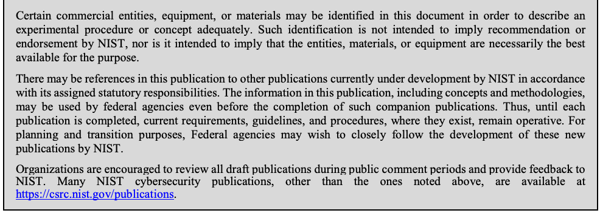

NIST SP 800-87 Rev. 2 日本語訳
英語タイトル : Codes for Identification of Federal and Federally-Assisted Organizations日本語タイトル : 連邦機関および連邦支援機関の識別コード
公開日 : 2018-04-19
原文URL : https://csrc.nist.gov/pubs/sp/800/87/r2/final
翻訳編集 : 自動生成
[要約] SP 800-87 Rev. 2 は、FIPS 201のカード保有者一意識別子に含める連邦機関Smart Credential Number（FASC-N）の設定に用いる、連邦機関の組織コードを示します。第2節で組織とコードの一覧を、階層関係と予算関係による配列、および割り当て済みコードの英数字順による配列の二通りで示し、資格要件も定めます。HSPD-12を受けて策定されたFIPS 201の関連刊行物で、PIVカードの本人確認用認証情報に必要な組織コードを提供する位置付けです。
有志による非公式の日本語訳です。NIST および米国商務省が作成・承認・推奨したものではありません。要件の確認にはNIST の正式版 PDFを参照してください。
NIST Special Publication 800-87
NIST特別刊行物800-87
Revision 2
改訂2
Codes for the Identification of Federal and Federally-Assisted
連邦および連邦支援の識別用コード
Organizations
組織
Hildegard Ferraiolo
Hildegard Ferraiolo
This publication is available free of charge from: https://doi.org/10.6028/NIST.SP.800-87r2
本刊行物は次のURLから無料で入手できます：https://doi.org/10.6028/NIST.SP.800-87r2
C O M P U T E R S E C U R I T Y
コンピュータセキュリティ
［NIST のロゴ。公的な標章のため、この非公式サイトには掲載していない。原本 PDF を参照。］
NIST Special Publication 800-87 Revision 2
NIST Special Publication 800-87 Revision 2
Codes for the Identification of Federal and Federally-Assisted Organizations
連邦政府組織および連邦政府助成組織の識別コード
Hildegard Ferraiolo
Hildegard Ferraiolo
Computer Security Division Information Technology Laboratory
コンピュータセキュリティ部門 情報技術研究所
This publication is available free of charge from: https://doi.org/10.6028/NIST.SP.800-87r2
本刊行物は次のURLから無料で入手できます：https://doi.org/10.6028/NIST.SP.800-87r2
April 2018
2018年4月
U.S. Department of Commerce
米国商務省
Wilbur L. Ross, Jr., Secretary
Wilbur L. Ross, Jr., 長官
National Institute of Standards and Technology
米国国立標準技術研究所
Walter Copan, NIST Director and Under Secretary of Commerce for Standards and Technology
Walter Copan, NIST 所長 兼 商務省標準・技術担当次官
Authority
権限
This publication has been developed by NIST in accordance with its statutory responsibilities under the Federal Information Security Modernization Act (FISMA) of 2014, 44 U.S.C. § 3551 et seq., Public Law (P.L.) 113-283. NIST is responsible for developing information security standards and guidelines, including minimum requirements for federal information systems, but such standards and guidelines shall not apply to national security systems without the express approval of appropriate federal officials exercising policy authority over such systems. This guideline is consistent with the requirements of the Office of Management and Budget (OMB) Circular A-130.
本刊行物は、2014年連邦情報セキュリティ近代化法（FISMA）、合衆国法典第44編第3551条以降、ならびに公法113-283号に基づく法定責務に従ってNISTが策定した。NISTは連邦情報システムに関する情報セキュリティ標準およびガイドライン（最低要件を含む）を策定する責任を負う。ただし、そのような標準およびガイドラインは、国家安全保障システムを所管する適切な連邦当局者の明示的な承認がない限り、当該システムに適用してはならない（shall not）。本ガイドラインは行政管理予算局（OMB）通達A-130に整合している。
Nothing in this publication should be taken to contradict the standards and guidelines made mandatory and binding on federal agencies by the Secretary of Commerce under statutory authority. Nor should these guidelines be interpreted as altering or superseding the existing authorities of the Secretary of Commerce, Director of the OMB, or any other federal official. This publication may be used by nongovernmental organizations on a voluntary basis and is not subject to copyright in the United States. Attribution would, however, be appreciated by NIST.
本刊行物のいかなる記述も、法定権限に基づき商務長官が連邦機関に義務付け、拘束力を有する標準およびガイドラインと矛盾するものと解釈すべきではない（should）。また、これらのガイドラインは、商務長官、OMB長官その他の連邦当局者が有する既存の権限を変更または置き換えるものと解釈すべきではない（should）。本刊行物は非政府組織が任意に使用してよく（may）、米国内では著作権の対象ではない。ただし、NISTへの出典表示が望まれる。
National Institute of Standards and Technology Special Publication 800-87 Revision 2 Natl. Inst. Stand. Technol. Spec. Publ. 800-87 Revision 2, 105 pages (April 2018) CODEN: NSPUE2
National Institute of Standards and Technology Special Publication 800-87 Revision 2 Natl. Inst. Stand. Technol. Spec. Publ. 800-87 Revision 2, 105 ページ（2018年4月） CODEN: NSPUE2
This publication is available free of charge from: https://doi.org/10.6028/NIST.SP.800-87r2
本書は次から無料で入手できる：https://doi.org/10.6028/NIST.SP.800-87r2
Certain commercial entities, equipment, or materials may be identified in this document in order to describe an experimental procedure or concept adequately. Such identification is not intended to imply recommendation or endorsement by NIST, nor is it intended to imply that the entities, materials, or equipment are necessarily the best available for the purpose.
原本PDFの抜粋画像

実験手順または概念を適切に説明するため、この文書では特定の商業事業体、装置または材料を示す場合がある（may）。そのような記載は、NISTによる推奨または支持を意味するものではなく、また当該事業体、材料または装置が目的に利用できる最良のものであることを意味するものでもない。
There may be references in this publication to other publications currently under development by NIST in accordance with its assigned statutory responsibilities. The information in this publication, including concepts and methodologies, may be used by federal agencies even before the completion of such companion publications. Thus, until each publication is completed, current requirements, guidelines, and procedures, where they exist, remain operative. For planning and transition purposes, Federal agencies may wish to closely follow the development of these new publications by NIST.
本刊行物では、割り当てられた法定責務に従って現在NISTが策定中の他の刊行物を参照する場合がある（may）。関連する刊行物が完成する前であっても、連邦機関は本刊行物に記載された情報（概念および方法論を含む）を利用してよい（may）。したがって、各刊行物が完成するまでは、現行の要件、ガイドラインおよび手順が存在する場合には、それらは引き続き有効である。計画および移行のため、連邦機関はNISTによるこれらの新しい刊行物の策定状況を注意深く確認するとよい（may）。
Organizations are encouraged to review all draft publications during public comment periods and provide feedback to NIST. Many NIST cybersecurity publications, other than the ones noted above, are available at https://csrc.nist.gov/publications.
組織には、意見募集期間中にすべてのドラフト刊行物を確認し、NISTに意見を提出することが推奨される。上記で挙げたものを除き、NISTの多くのサイバーセキュリティ刊行物は https://csrc.nist.gov/publications から入手できる。
Comments on this publication may be submitted to:
本書へのコメントの提出先：
National Institute of Standards and Technology Attn: Computer Security Division, Information Technology Laboratory 100 Bureau Drive (Mail Stop 8930) Gaithersburg, MD 20899-8930 Email: piv_comments@nist.gov
National Institute of Standards and Technology Attn: Computer Security Division, Information Technology Laboratory 100 Bureau Drive (Mail Stop 8930) Gaithersburg, MD 20899-8930 Email: piv_comments@nist.gov
All comments are subject to release under the Freedom of Information Act (FOIA).
すべてのコメントは、情報公開法（FOIA）に基づく公開の対象となる。
Reports on Computer Systems Technology
コンピュータシステム技術に関する報告書
The Information Technology Laboratory (ITL) at the National Institute of Standards and Technology (NIST) promotes the U.S. economy and public welfare by providing technical leadership for the Nation’s measurement and standards infrastructure. ITL develops tests, test methods, reference data, proof of concept implementations, and technical analyses to advance the development and productive use of information technology. ITL’s responsibilities include the development of management, administrative, technical, and physical standards and guidelines for the cost-effective security and privacy of other than national security-related information in federal information systems. The Special Publication 800-series reports on ITL’s research, guidelines, and outreach efforts in information system security, and its collaborative activities with industry, government, and academic organizations.
米国国立標準技術研究所（NIST）の情報技術研究所（ITL）は、国の計測・標準基盤に技術的リーダーシップを提供し、米国経済と公共の福祉を促進する。ITLは、情報技術の発展と生産的な利用を推進するため、試験、試験方法、参照データ、概念実証の実装、および技術分析を開発する。ITLは、連邦情報システムにおける国家安全保障関連ではない情報のセキュリティとプライバシーを費用対効果の高い方法で確保するため、管理、運用、技術および物理的な標準とガイドラインの策定も担う。特別刊行物800シリーズは、情報システムセキュリティに関するITLの研究、ガイドライン、普及活動、および産業界、政府、学術機関との協力活動を報告する。
Abstract
概要
This document provides the organizational codes for federal agencies to establish the Federal Agency Smart Credential Number (FASC-N) that is required to be included in the FIPS 201 Card Holder Unique Identifier. SP 800-87 is a companion document to FIPS 201.
本書は、FIPS 201カード保有者一意識別子に含めることが求められる連邦機関Smart Credential Number（FASC-N）を設定するための連邦機関組織コードを示す。SP 800-87はFIPS 201の関連刊行物である。
Keywords
キーワード
CHUID; Federal Agency Smart Credential Number (FASC-N); FIPS 201; HSPD-12; organizational codes; identity credential; PIV cards.
カード保有者一意識別子（CHUID）、連邦機関Smart Credential Number（FASC-N）、FIPS 201、HSPD-12、組織コード、本人確認用認証情報、PIVカード
Executive Summary
エグゼクティブサマリー
The Homeland Security Presidential Directive HSPD-12 called for new standards to be adopted governing the interoperable use of identity credentials to allow physical and logical access to Federal government locations and systems. Personal Identity Verification (PIV) for Federal Employees and Contractors, (Federal Information Processing Standard 201 (FIPS 201)) was developed to establish standards for identity credentials. This document, Special Publication (SP) 800-87, provides the organizational codes necessary to establish the PIV Federal Agency Smart Credential Number (PIV FASC-N) that is required to be included in the FIPS 201 Card Holder Unique Identifier (CHUID) and is a companion document to FIPS 201.
国土安全保障大統領指令HSPD-12は、連邦政府の施設およびシステムへの物理的・論理的アクセスに本人確認用認証情報を相互運用可能な形で使用するため、新たな標準を採用するよう求めた。連邦職員および請負業者の個人識別検証（PIV）を定める連邦情報処理標準（FIPS）201は、本人確認用認証情報の標準を確立するために策定された。本書である特別刊行物（SP）800-87は、FIPS 201のカード保有者一意識別子（CHUID）に含める必要があるPIV連邦機関Smart Credential Number（PIV FASC-N）の設定に必要な組織コードを示す、FIPS 201の関連刊行物である。
Table of Contents
目次
EXECUTIVE SUMMARY..................................................................................................................III
要約..................................................................................................................III
1 INTRODUCTION — 1
1 序論 — 1
1.1 PURPOSE AND SCOPE — 1
1.1 目的および適用範囲 — 1
1.2 MAINTENANCE ORGANIZATION — 1
1.2 管理組織 — 1
1.3 APPLICABILITY — 1
1.3 適用性 — 1
1.4 ORGANIZATIONAL STRUCTURE — 1
1.4 組織構造 — 1
2 SPECIFICATIONS: TABLE OF ORGANIZATIONS AND CODES — 3
2 仕様：組織およびコードの一覧 — 3
2.1 PART A: ARRANGEMENT BY HIERARCHICAL AND BUDGETARY RELATIONSHIP — 3
2.1 パートA：階層関係および予算関係による配列 — 3
2.2 PART B: ARRANGEMENT BY ALPHANUMERIC SEQUENCE OF ASSIGNED CODES — 3
2.2 パートB：割り当て済みコードの英数字順による配列 — 3
3 QUALIFICATIONS — 4
3 資格要件 — 4
4 SPECIAL INFORMATION — 5
4 特記事項 — 5
PART A: ARRANGEMENT BY HIERARCHICAL AND BUDGETARY RELATIONSHIP — 7
パートA：階層関係および予算関係による配列 — 7
PART B: ARRANGEMENT BY ALPHANUMERIC SEQUENCE OF ASSIGNED CODES — 67
パートB：割り当て済みコードの英数字順による配列 — 67
APPENDIX A REVISION HISTORY — 97
付録A 改訂履歴 — 97
1 Introduction
1 はじめに
1.1 Purpose and Scope
1.1 目的および適用範囲
Federal Information Processing Standard (FIPS) 201 was developed to establish standards for identity credentials for federal employees and federal contractors. This document provides the organizational codes for federal agencies to establish the Federal Agency Smart Credential Number (FASC-N) that is required to be included in the FIPS 201 Card Holder Unique Identifier. Special Publication (SP) 800-87 is a companion document to FIPS 201. All changes implemented in this publication are listed in Appendix A.
連邦情報処理規格（FIPS）201 は、連邦職員および連邦政府の契約業者の身元証明クレデンシャルの標準を確立するために策定された。本書は、FIPS 201 の Card Holder Unique Identifier に含めることが要求される Federal Agency Smart Credential Number（FASC-N）を連邦政府機関が設定するための組織コードを提供する。Special Publication（SP）800-87 は FIPS 201 の関連文書である。本書で行ったすべての変更は付録 A に列挙する。
1.2 Maintenance Organization
1.2 管理組織
The maintenance organization for codes for the identification of federal and federally assisted organizations for the Personal Identity Verification (PIV) FASC-N is the Department of Commerce in coordination with the General Services Administration and the Departments of Homeland Security and Commerce. Federal departments and independent agencies are invited to assist in the maintenance of this publication by submitting copies of newly implemented tables of organization that affect any listing. Such changes should be submitted to the National Institute of Standards and Technology (NIST) via e-mail to piv_comments@nist.gov with "SP 800-87 Update Request " in the subject line.
個人識別検証（PIV）FASC-Nに用いる連邦機関および連邦支援組織の識別コードの管理組織は、一般調達局および国土安全保障省、商務省と連携する商務省である。連邦省庁および独立機関は、新たに実施された組織表のうち、いずれかの一覧に影響するものの写しを提出することにより、本刊行物の維持に協力するよう招請される。このような変更は、件名に "SP 800-87 Update Request " と記載し、電子メールで米国国立標準技術研究所（NIST）の piv_comments@nist.gov に提出すべきである。
The two leftmost characters of each code form a component data element which is identical with the two-digit numerical code used in the federal budgetary process to identify major federal organizations. This component, designated as the Treasury Agency Symbol (TAS), is maintained by the U.S. Department of the Treasury; and the National Archives and Records Administration legislatively owns the records.
各コードの左端の 2 文字は構成データ要素をなし、これは主要な連邦組織を識別するために連邦予算過程で用いられる 2 桁の数字コードと同一である。この構成要素は Treasury Agency Symbol（TAS）と呼ばれ、米国財務省が維持管理し、その記録は法律上、国立公文書記録管理局が所有する。
1.3 Applicability
1.3 適用性
This document is targeted at federal agencies and implementers of PIV systems for the establishment of the PIV FASC-N organizational codes. This publication is not intended for the replacement of U.S. Department of the Treasury agency location and appropriation fund account codes.
本書は、PIV FASC-N 組織コードを設定する連邦政府機関および PIV システムの実装者を対象とする。本書は、米国財務省の機関所在地コードおよび歳出資金勘定コードを置き換えることを意図したものではない。
1.4 Organizational Structure
1.4 組織構造
This publication provides a four-character PIV FASC-N organizational code for each organization listed. The major set of categories used to distinguish groups of organizations in this publication is the following:
本刊行物は、一覧に掲載する各組織に4文字のPIV FASC-N組織コードを割り当てる。組織群を区別するために用いる主なカテゴリは次のとおりである。
•Legislative Branch,
•立法府
•Judicial Branch,
•司法府
•Executive Office and Departments (and their Associated Organizations)
•大統領府および省庁（ならびにその関連組織）
•Other Independent federal and Quasi-federal Organizations (and their Associated Organizations)
•その他の独立連邦組織および準連邦組織（ならびにその関連組織）
•Independent federal-State and Interstate Organizations
•独立した連邦・州組織および州際組織
•International Organizations.
•国際機関
Organizational structure is described and encoded in this publication in a manner consistent with the budgetary structure of the U.S. Government. Consistency with the budgetary structure has been maintained in order to permit the adoption of the two-digit numerical code used in the budgetary process to identify most first-level, independent federal organizations. This coding system is maintained by the U.S. Department of the Treasury. Designated as the Treasury Agency Symbol (TAS), it serves as the two leftmost characters of the organization code used in this publication.
本刊行物では、米国政府の予算構造と整合する方法で組織構造を記述し、コード化している。この整合性を維持することで、最上位の独立連邦組織の大半を識別するために予算手続で用いられる2桁の数字コードを採用できる。このコード体系は米国財務省が管理する。財務省機関記号（TAS）と呼ばれるこの記号は、本刊行物で用いる組織コードの左端2文字となる。
All first-level organizations in each of the above categories are listed in this publication. A first-level organization is not subsumed hierarchically under any other organization. Second-level organizations are included with the Executive Office, executive departments, and certain other major agencies. Third- and lower-level organizations are included only in the Department of Defense and in special situations in other departments. Second-, third-, and lower-level organizations are always subsumed hierarchically under a next-higher-level organization.
上記の各カテゴリに属するすべての最上位組織を本刊行物に掲載する。最上位組織とは、階層上、他の組織の下位に置かれていない組織である。第2階層の組織は、大統領府、省庁、および一部のその他主要機関について掲載する。第3階層以下の組織は、国防総省および他省庁の特別な場合に限って掲載する。第2階層、第3階層以下の組織は、常に直上の組織の階層下に置かれる。
In this publication, an "independent" organization is defined as having both hierarchical independence and budgetary independence, i.e., it is first-level (hierarchical independence) and has a budget which is not subsumed by or connected in a subsidiary manner with the budget of another organization (budgetary independence). An "associated" organization is first-level, but has no budgetary independence. The five types of associated organizations are:
本刊行物では、"独立"組織を、階層上の独立性と予算上の独立性の両方を備える組織、すなわち最上位（階層上独立）であり、かつ他組織の予算に包含されず、また従属的な形で結び付いていない予算を持つ組織（予算上独立）と定義する。"関連"組織は最上位だが、予算上の独立性を持たない。関連組織には次の5種類がある。
•Associated federal Organizations, which are federal agencies or their ancillary units such as advisory committees; they are often included as part of the independent organizations to which they are related
•関連連邦組織：連邦機関または諮問委員会などの付属組織。多くの場合、関連先の独立組織の一部として含まれる。
•Associated federal-State Organizations, which are associated organizations in which the federal Government and one or more States participate jointly
•関連連邦・州組織：連邦政府と1つ以上の州が共同で参加する関連組織。
•Government-Sponsored Enterprises, which are so identified in a separate section of the Budget of the United States Government, Appendix (referred to as The Budget)
•政府支援企業：米国政府予算の付録（以下、予算）の独立した節でそのように識別される組織。
•Federally Aided Organizations, which are domestic and non-federal, and are identified in The Budget as receiving some form of financial support such as a direct payment, loan guarantee, line of credit, or stock purchase arrangement
•連邦支援組織：国内の非連邦組織であり、予算において、直接支払、融資保証、信用枠または株式購入契約など、何らかの財政支援を受ける組織として識別される。
•International Organizations, identified in The Budget or in the Department of State's annual report of United States Contributions to International Organizations as organizations in which the federal Government serves as a financial contributor.
•国際機関：予算または国務省（Department of State's）の年次報告書『United States Contributions to International Organizations』において、連邦政府が資金提供者となる組織として識別される。
A "quasi-federal" organization is an organization that is listed as "quasi-official" in the U.S. Government Manual and is also assigned its own unique TAS code by the U.S. Department of the Treasury. An "interstate" organization included in this publication is federally assisted but differs from a federal-State organization in that it involves no federal participation.
"準連邦"組織とは、米国政府マニュアルで "準公的" として掲載され、かつ米国財務省から固有のTASコードを割り当てられた組織である。本刊行物に掲載する "州際" 組織は連邦の支援を受けるが、連邦の参加を伴わない点で連邦・州組織とは異なる。
Associated organizations and organizations below the first level usually carry the same TAS as the independent, first-level organization with which they are connected. Organizations having the same TAS are distinguished from each other by the two rightmost characters of the identifier. These characters are alphanumeric, although numeric characters are being used at this time in most cases. The recommended system used for assignment of the two rightmost characters of the identifier is explained below in Section 4: Special Information.
関連組織および最上位より下の組織は通常、関係する独立最上位組織と同じTASを持つ。同じTASを持つ組織は、識別子の右端2文字で区別する。この2文字は英数字だが、現時点ではほとんどの場合に数字を用いている。右端2文字の割り当てに用いる推奨方式を、第4節「特記事項」で説明する。
2 Specifications: Table of Organizations and Codes
2 仕様：組織およびコードの一覧
2.1 Part A: Arrangement by Hierarchical and Budgetary Relationship
2.1 パートA：階層関係および予算関係による配列
In this part, names of first-level organizations are presented immediately to the right of the assigned codes without an indentation.
このパートでは、最上位組織名を、割り当てられたコードのすぐ右側に字下げせずに示す。
Second-level organizations are listed immediately below the first-level organization to which they report and are indented further to the right. Second-level organizations which subdivide a first-level organization form a complete, non-duplicative set, i.e., each employee of the first-level organization can be assigned to one and only one second-level entry.
第2階層の組織は、報告先となる最上位組織の直下に記載し、さらに右側へ字下げする。最上位組織を細分化する第2階層組織は、完全かつ重複のない集合を構成する。すなわち、最上位組織の各職員は、該当する第2階層の項目のうち1つだけに割り当てることができる（can）。
Third- and lower-level organizations are indented further to the right than their respective next-higher level entries, and they are listed immediately below the entry that they subdivide. Third- and lower-level entries, similarly, form a complete, non-duplicative set.
第3階層以下の組織は、それぞれの直上階層の項目よりさらに右側へ字下げし、細分化する項目の直下に記載する。第3階層以下の項目も同様に、完全かつ重複のない集合を構成する。
At any level for which entries are provided, some subdivisions may not be individually identified. Those divisions not specifically listed are included by implication, as in "Office of the Assistant Secretary for Health except National Centers."
項目を掲載する階層では、細分された組織の一部が個別に特定されない場合がある。個別に列挙されていない部門は、"National Centersを除く保健担当次官補室" のように、暗黙のうちに含まれる。
Each domestic, associated organization is listed with the independent organization with which its financial or administrative support is connected. International organizations are listed in a separate section.
国内の各関連組織は、財政的または管理上の支援関係を持つ独立組織とともに掲載する。国際機関は別の節に掲載する。
2.2 Part B: Arrangement by Alphanumeric Sequence of Assigned Codes
2.2 パートB：割り当て済みコードの英数字順による配列
Part B is a listing of organizations and codes arranged by alphanumeric sequence of codes.
パートBには、コードの英数字順に配列した組織とコードの一覧を示す。
3 Qualifications
3 資格要件
This document, Special Publication 800-87 (SP 800-87), provides the organizational codes for Federal Agencies to establish the Federal Agency Smart Credential Number (FASC-N) that is required to be included in the FIPS 201 Card Holder Unique Identifier (CHUID). Because FIPS 201 applies only to federal agencies, non-federal organizations were excluded from the requirements of this Special Publication.
本書である特別刊行物800-87（SP 800-87）は、FIPS 201カード保有者一意識別子（CHUID）に含める必要がある Federal Agency Smart Credential Number（FASC-N）を連邦機関が設定するための組織コードを示す。FIPS 201は連邦機関にのみ適用されるため、本特別刊行物の要件から非連邦組織を除外した。
4 Special Information
4 特記事項
The coding structure in this publication is based on the establishment of four active classes of TAS codes. The assignments of the two rightmost characters of the identifier differ in each of the classes and are described below.
本刊行物のコード体系は、4つの有効なTASコード区分を設定することに基づく。識別子の右端2文字の割り当て方法は区分ごとに異なり、以下で説明する。
•Defense TAS Codes
•国防関連TASコード
The following TAS codes are used to identify component organizations of the Department of Defense:
次のTASコードは、国防総省の構成組織を識別するために用いる。
17: Department of the Navy; 21: Department of the Army; 57: Department of the Air Force; 84: U.S. Soldiers' and Airmen's Home; 96: U.S. Corps of Engineers--(civil); and 97: Department of Defense as a whole and components, other than the military department, reporting to the Secretary of Defense.
17：海軍省、21：陸軍省、57：空軍省、84：米国兵士・航空兵のための施設（U.S. Soldiers' and Airmen's Home）、96：米国陸軍工兵隊（民間）、97：国防総省全体および国防長官に報告する構成組織（軍種省を除く）。
Values of the two rightmost characters of the identifier for all component organizations of the Department of Defense (DoD) are received from the Directorate for Information Resources Management Systems, Office of the Assistant Secretary of Defense (Comptroller). DoD assigns their own codes, usually alphabetic (can be numeric).
国防総省（DoD）のすべての構成組織について、識別子の右端2文字の値は、国防次官補（会計監査官）室の情報資源管理システム局から取得する。DoDは通常アルファベット文字で独自のコードを割り当てる（数字でもよい）。
•Joint-Use TAS Codes
•共同利用TASコード
Several non-Defense, independent organizations share certain TAS codes. These organizations are fully distinguished at the first level by the third and fourth characters of the identifier. The TAS codes in this class, and their applications, are:
国防関連以外の複数の独立組織が、特定のTASコードを共有している。これらの組織は、識別子の3文字目と4文字目によって最上位階層で完全に区別される。この区分のTASコードとその適用先は次のとおりである。
00: Senate and House of Representatives; 09: Smaller Legislative Agencies; 10: Judicial Agencies; 46: Independent federal-State and Interstate Organizations (excepting Advisory Commission on Intergovernmental Relations); 48: Temporary Study Commissions; 76: Historical and Memorial Agencies; and 95: Other Independent Organizations Not Assigned Unique TAS Codes.
00：上院および下院、09：小規模な立法機関、10：司法機関、46：独立した連邦・州組織および州際組織（政府間関係諮問委員会を除く）、48：臨時調査委員会、76：歴史・記念機関、95：固有のTASコードが割り当てられていないその他の独立組織。
•TAS Code 11: Executive Office of the President/Funds Appropriated to the President
•TASコード11：大統領府／大統領に割り当てられた資金
The Executive Office of the President is assigned identifier 1100, and agencies within the 0ffice are assigned identifiers in the range of 1101 through 1130. The office of the Vice President is assigned 1160.
大統領府には識別子1100が割り当てられ、同府内の機関には1101から1130までの範囲の識別子が割り当てられる。副大統領室には1160が割り当てられる。
Agencies that come under the "Funds Appropriated to the President" (FAP) in the federal Budget also are assigned TAS code 11. Currently, two different ranges are used for the two rightmost characters for these FAP agencies. Agencies that are international in scope, such as the Multilateral Development Banks, are assigned alphabetic characters consistent with other international agencies. Other FAP agencies, such as the Peace Corps, are assigned numerics for the two rightmost characters. These currently range from 31 to 62.
連邦予算で "大統領に割り当てられた資金"（FAP）に分類される機関にもTASコード11を割り当てる。現在、これらのFAP機関では、識別子の右端2文字に異なる2つの範囲を用いる。多国間開発銀行など、国際的な活動範囲を持つ機関には、他の国際機関と整合するアルファベット文字を割り当てる。平和部隊など、その他のFAP機関には、右端2文字に数字を割り当てる。現在の範囲は31から62である。
For values of the two rightmost characters of the identifier for associated organizations using TAS code 11, see below under "Single-Use TAS Codes." This class of TAS codes includes all codes that are active (i.e., in current use) and not identified above in another class. As implied in the class name, an independent organization using a TAS code in this class does not share that TAS code with any other independent organization. Second-level, third-level, and associated organizations may be included in this class and will use the same TAS codes as their respective independent organizations.
TASコード11を用いる関連組織に割り当てる識別子の右端2文字については、"TASコード一回限りの利用" の項を参照する。この区分には、有効なコード（すなわち、現在使用中）で、上記の他の区分に含まれていないものすべてを含む。区分名が示すとおり、この区分のTASコードを使用する独立組織は、そのコードを他の独立組織と共有しない。第2階層、第3階層および関連組織もこの区分に含めてもよく（may）、それぞれの独立組織と同じTASコードを使用する。
For each TAS code in this class, the two rightmost characters of the identifier are recommended to be assigned as follows:
この区分の各TASコードについて、識別子の右端2文字には次の割り当てを推奨する。
00: organization as a whole (always present); 01: office of the chief executive and any staff functions not separately identified; 02: office of the deputy chief executive; 03: office of the general counsel or equivalent; 04: office of the inspector general; 05: office of administration or management, if no "planning" or "policy" functions are included in the name; 06: office of policy, evaluation, or program analysis, including any "budget" functions not included in "administration" or "management"; 07: office of Congressional and legislative affairs; may include public or intergovernmental affairs if not separately identified; 08: office of public affairs, if identified separately from Congressional and legislative affairs; 09: office of international affairs; 10 through 29: other staff offices; 30 through 59: programmatic or line organizations, and all of their separately identified, lower-level components; 60 through 69: Associated federal Organizations; 70 through 79: Associated federal-State Organizations; 80 through 89: Government-Sponsored Enterprises; 90 through 99: Federally Aided Organizations; and AA through ZZ: International Organizations.
00：組織全体（必ず存在する）、01：最高責任者室および個別に特定されていない幕僚機能、02：副最高責任者室、03：法務顧問室または同等の組織、04：監察総監室、05：名称に "計画" または "政策" 機能を含まない場合は管理・運営室、06："管理" または "運営" に含まれない "予算" 機能を含む政策・評価・プログラム分析室、07：議会・立法事務室。個別に特定されていない場合は広報または政府間事務を含めてよい。08：議会・立法事務とは別に特定される場合は広報室、09：国際事務室、10～29：その他の幕僚室、30～59：事業部門またはライン組織とその個別に特定された下位組織、60～69：関連連邦組織、70～79：関連連邦・州組織、80～89：政府支援企業、90～99：連邦支援組織、AA～ZZ：国際機関。
For the assignment of the two rightmost characters to international organizations, groupings of such organizations have been established. The third character of the identifier is the same for each organization in a group. This permits recognition of an identifier as pertaining to a particular group. For example, inter-American organizations have the two rightmost characters of their identifiers in the range AA through AZ; international fisheries organizations are assigned the range FA through FZ, while United Nations and affiliated agencies are assigned the range UA through UZ. This procedure for assigning the two rightmost characters of the identifier is used for each international organization, regardless of the TAS code assigned to the organization.
国際機関に右端の 2 文字を割り当てるため、それらの機関のグループが設けられている。識別子の 3 文字目は、グループ内の各機関で同一である。これにより、識別子が特定のグループに属することを識別できる。たとえば、米州機関には識別子の右端 2 文字として AA から AZ の範囲が割り当てられ、国際漁業機関には FA から FZ の範囲が、国際連合および関連機関には UA から UZ の範囲が割り当てられている。識別子の右端 2 文字をこのように割り当てる手順は、機関に割り当てられた TAS コードにかかわらず、各国際機関に適用される。
If expansion of the coding structure is required due to saturation, the fourth or rightmost character of the identifier will be converted to an alphanumeric for staff, line, and domes associated organizations under Single-Use TAS Codes. Then, more identifiers for these types of organizations would be available. For example, in this expansion, the two rightmost characters of identifiers for line organizations under Single-Use TAS Codes could include code 2A through 5Z as well as 20 through 59, while the two rightmost characters for associated federal organizations could include codes 6A through 6Z as well as 60 through 69. This expansion could apply, in a similar fashion, to the coding structure for domestic organization under TAS code 11 or the Joint-Use TAS Codes.
飽和によりコード体系の拡張が必要になった場合、単独使用 TAS コードの下にあるスタッフ組織、ライン組織および国内関連組織については、識別子の 4 文字目すなわち右端の文字を英数字に変更する。これにより、これらの種類の組織に使用できる識別子が増える。たとえば、この拡張では、単独使用 TAS コードの下にあるライン組織の識別子の右端 2 文字に 20 から 59 に加えて 2A から 5Z のコードを含めることができ、関連連邦組織の右端 2 文字に 60 から 69 に加えて 6A から 6Z のコードを含めることができる。この拡張は、TAS コード 11 の下にある国内組織のコード体系や共同使用 TAS コードにも同様に適用できる。
Table of Organizations and Codes
組織およびコードの表
Part A: Arrangement by Hierarchical and Budgetary Relationship
パート A：階層関係および予算関係による配列
TABLE OF ORGANIZATIONS AND CODES
組織およびコードの一覧
LEGISLATIVE BRANCH
立法府
Code Organization
コード 組織
0000 THE LEGISLATIVE BRANCH
0000 立法府全体
Congress
連邦議会
0001 Congress, generally, no additional specification available
0001 連邦議会（一般。これ以上の詳細指定なし）
0010 Senate, The
0010 上院
0050 House of Representatives, The
0050 下院
0099 Joint House and Senate Entities (Capitol Police Board, Capitol Guide Service, Office of the Attending Physician, Joint Economic Committee, Joint Committee on Printing, and Joint Committee on Taxation)
0099 上院・下院合同機関（議事堂警察委員会、議事堂案内サービス、主治医室、合同経済委員会、合同印刷委員会、合同租税委員会）
Major Legislative Agencies
主要立法機関
0100 Architect of the Capitol
0100 連邦議会議事堂建築監（Architect of the Capitol）
0800 Congressional Budget Office
0800 議会予算局
0500 Government Accountability Office
0500 政府説明責任局（GAO）
0501 Comptroller General of the United States
0501 米国会計検査院長
0559 GAO, except Comptroller General
0559 GAO（会計検査院長を除く）
0400 Government Printing Office
0400 米国政府印刷局
0300 Library of Congress
0300 米国議会図書館
Associated Federal Organizations:
関連連邦組織：
0361 Library of Congress Trust Fund Board
0361 米国議会図書館信託基金理事会
0363 Federal Library & Information Center Committee
0363 連邦図書館・情報センター委員会
2300 U.S. Tax Court
2300 米国租税裁判所
9593 U.S. Court of Appeals for Veterans Claims
9593 米国退役軍人請求控訴裁判所
TABLE OF ORGANIZATIONS AND CODES
組織およびコードの一覧
LEGISLATIVE BRANCH
立法府
Code Organization
コード 組織
LEGISLATIVE BRANCH - Continued
立法府 — 続き
Smaller Legislative Agencies
小規模な立法機関
0902 Botanic Garden
0902 米国国立植物園
0901 Commission on Security and Cooperation in Europe
0901 欧州安全保障協力委員会
0914 John C. Stennis Center for Public Service Training and Development
0914 John C. Stennis公共サービス研修開発センター
0904 Office of Compliance
0904 法令遵守室
0962 Permanent Committee for the Oliver Wendell Holmes Devise
0962 Oliver Wendell Holmes著作編集常設委員会
0929 U.S. Capitol Preservation Commission
0929 米国議事堂保存委員会
TABLE OF ORGANIZATIONS AND CODES
組織およびコードの一覧
JUDICIAL BRANCH
司法府
Code Organization
コード 組織
1000 THE JUDICIAL BRANCH
1000 司法府全体
1001 Supreme Court of the United States
1001 米国最高裁判所
1050 Chief Justice of the United States
1050 米国最高裁判所長官
1051 Associate Justices of the Supreme Court
1051 最高裁判所陪席判事
1059 Supreme Court, except Justices
1059 最高裁判所（判事を除く）
Associated Federal Organization:
関連連邦組織：
1060 Judicial Conference of the United States
1060 米国司法会議
1002 U.S. Courts of Appeals-Judicial Circuits (except Federal Circuit)
1002 米国巡回控訴裁判所（連邦巡回区を除く）
1003 U.S. Court of Appeals for the Federal Circuit
1003 米国連邦巡回控訴裁判所
1004 U.S. Court of International Trade
1004 米国国際貿易裁判所
1005 U.S. Court of Federal Claims
1005 米国連邦請求裁判所
1012 U.S. District and Territorial Courts
1012 米国連邦地方裁判所および準州裁判所
1018 U.S. Judicial Panel on Multidistrict Litigation
1018 米国司法多地区訴訟パネル
1021 Bankruptcy Courts
1021 米国破産裁判所
1023 Federal Public Defenders
1023 連邦公設弁護人
1025 Court Security
1025 裁判所警備
1027 Administrative Office of the U.S. Courts
1027 米国裁判所管理局
1028 Federal Judicial Center
1028 連邦司法センター
1030 United States Sentencing Commission
1030 米国量刑委員会
EXECUTIVE DEPARTMENTS
行政各省
(and their associated organizations)
（およびその関連組織）
Code Organization
コード 組織
1100 EXECUTIVE OFFICE OF THE PRESIDENT
1100 大統領府
1101 President of the United States
1101 米国大統領
1102 National Security Council
1102 国家安全保障会議
1103 Office of Management and Budget
1103 行政管理予算局（OMB）
1121 Director, OMB
1121 OMB長官
1129 OMB, except Director
1129 OMB（長官を除く）
1105 Office of Administration
1105 行政管理室
1109 Office of the United States Trade Representative
1109 米国通商代表部
1110 Office of Policy Development
1110 政策開発室
1112 Office of Science and Technology Policy
1112 科学技術政策室
1113 Council of Economic Advisors
1113 経済諮問委員会
1117 White House Office
1117 ホワイトハウス事務局
1118 Executive Residence at the White House
1118 ホワイトハウス大統領公邸
1119 Council on Environmental Quality/Office of Environmental Quality
1119 環境品質評議会／環境品質室
1127 Office of the National Drug Control Policy
1127 国家薬物統制政策室
1160 Office of the Vice President of the United States
1160 米国副大統領室
1140 President's Council on Sustainable Development
1140 持続可能な開発に関する大統領評議会（President's Council on Sustainable Development）
1148 Office of Homeland Security
1148 国土安全保障室
1170 Commission on the Intelligence Capabilities of the United States Regarding Weapons of Mass Destruction
1170 大量破壊兵器に関する米国情報機関能力委員会
Associated Federal Organizations:
関連連邦組織：
1165 White House Commission on Presidential Scholars
1165 大統領奨学生に関するホワイトハウス委員会
EXECUTIVE DEPARTMENTS
行政各省
(and their associated organizations)
（およびその関連組織）
Code Organization
コード 組織
1200 AGRICULTURE, Department of
1200 米国農務省
1201 Office of the Secretary of Agriculture
1201 農務長官室
12J0 Assistant Secretary for Congressional Relations
12J0 議会関係担当農務次官補
12J2 USDA, Office of Congressional and Intergovernmental Relations
12J2 USDA議会・政府間関係室
1205 USDA, Office of the Chief Financial Officer
1205 USDA最高財務責任者室
1208 USDA, Office of Communications
1208 USDA広報室
12A0 USDA, Office of Executive Operations
12A0 USDA執行業務室
12A2 USDA, Office of Executive Secretariat
12A2 USDA執行事務局
12A4 USDA, Homeland Security
12A4 USDA、国土安全保障
12A5 USDA, Office of the Chief Economist
12A5 USDA主任エコノミスト室
12A6 USDA, Office of Budget and Program Analysis
12A6 USDA予算・プログラム分析室
12A9 USDA, National Appeals Division
12A9 USDA国家不服審査部門
12A7 USDA, Office of the Chief Information Officer
12A7 USDA最高情報責任者室
1203 USDA, Office of the General Counsel
1203 USDA法務顧問室
1204 Office of the Inspector General
1204 監察総監室
12A8 USDA, Office of Small and Disadvantaged Business
12A8 USDA小規模・不利な立場にある事業者室
12B1 USDA, Office of Security Services
12B1 USDA保安サービス室
12B2 USDA, Civil Rights
12B2 USDA公民権
12B3 USDA, Office of Property and Procurement Management
12B3 USDA財産・調達管理室
12B5 USDA, Office of Human Capital Management
12B5 USDA人的資本管理室
12B6 USDA, Office of the Administrative Law Judge
12B6 USDA行政法判事室
12B7 USDA, Office of the Judicial Officer
12B7 USDA司法官室
12B8 USDA, Board of Contract Appeals `
12B8 USDA契約不服審査委員会 `
12BD USDA, Office of Ethics
12BD USDA倫理室
1215 USDA, Office of Operations
1215 USDA業務室
12B0 USDA, Assistant Secretary for Administration
12B0 USDA管理担当農務次官補
12C0 Under Secretary for Natural Resources and Environment
12C0 天然資源・環境担当農務次官
12C2 Forest Service
12C2 森林局
12C3 Natural Resources Conservation Service
12C3 天然資源保全局
12D0 Under Secretary for Farm and Foreign Agricultural Services
12D0 農業・海外農業サービス担当農務次官
12D2 Farm Service Agency
12D2 農業サービス庁
12D3 Foreign Agricultural Service
12D3 海外農業局
12D4 Risk Management Agency
12D4 リスク管理庁
1263 Federal Crop Insurance Corporation
1263 連邦作物保険公社
1260 Commodity Credit Corporation
1260 商品信用公社
12E0 Under Secretary for Rural Development
12E0 農村開発担当農務次官
EXECUTIVE DEPARTMENTS
行政各省
(and their associated organizations)
（およびその関連組織）
Code Organization
コード 組織
1200 AGRICULTURE, Department of - continued
1200 米国農務省 — 続き
12E2 Rural Utilities Service
12E2 農村公益事業局
1261 Rural Telephone Bank
1261 農村電話銀行
12E3 Rural Housing Service
12E3 農村住宅局
12E4 Rural Business Cooperative Service
12E4 農村事業・協同組合局
12E6 National Sheep Industry Improvement Center
12E6 全国羊産業振興センター
12F0 Under Secretary for Food, Nutrition, and Consumer Services
12F0 食品・栄養・消費者サービス担当農務次官
12F2 Food and Nutrition Service
12F2 食品栄養局
12F3 Center for Nutrition Policy and Promotion
12F3 栄養政策・推進センター
12G0 Under Secretary for Food Safety
12G0 食品安全担当農務次官
12G2 Food Safety and Inspection Service
12G2 食品安全検査局
12H0 Under Secretary for Research, Education, and Economics
12H0 研究・教育・経済担当農務次官
12H2 Agricultural Research Service
12H2 農業研究局
12H3 Cooperative State Research, Education, and Extension Service
12H3 州協同組合研究・教育・普及局
12H4 Economic Research Service
12H4 経済調査局
12H5 National Agricultural Statistics Service
12H5 全国農業統計局
12K0 Under Secretary for Marketing and Regulatory Programs
12K0 市場・規制プログラム担当農務次官
12K2 Agricultural Marketing Service
12K2 農業マーケティング局
12K3 Animal and Plant Health Inspection Service
12K3 動植物検疫局
12K4 Grain Inspection, Packers and Stockyards Administration
12K4 穀物検査・食肉加工業者・家畜市場管理局
Federally Aided Organization:
連邦支援組織：
1291 Land grant colleges and Tuskegee Institute
1291 ランドグラント大学およびタスキーギ・インスティテュート
EXECUTIVE DEPARTMENTS
行政各省
(and their associated organizations)
（およびその関連組織）
Code Organization
コード 組織
1300 COMMERCE, Department of
1300 商務省
1301 Office of the Secretary
1301 長官室
1303 Office of the General Counsel
1303 法務顧問室
1304 Office of the Inspector General
1304 監察総監室
1306 Office of the Chief Financial Officer & Assistant Secretary for Administration
1306 最高財務責任者兼管理担当次官補室
1314 Economic and Statistics Administration/Under Secretary for Economic Affairs
1314 経済統計局／経済担当次官
1321 Bureau of Economic Analysis
1321 経済分析局
1323 Bureau of the Census
1323 国勢調査局
1315 Chief Economist
1315 チーフエコノミスト
1325 Economic Development Administration/Assistant Secretary for Economic Development
1325 経済開発局／経済開発担当次官補
1350 International Trade Administration/Under Secretary for International Trade
1350 国際貿易局／国際貿易担当次官
1351 Under Secretary for Export Administration/Bureau of Industry and Security
1351 輸出管理担当次官／産業安全保障局
1359 Technology Administration/Under Secretary of Technology
1359 技術局／技術担当次官
1341 National Institute of Standards and Technology
1341 米国国立標準技術研究所
1342 National Technical Information Service
1342 国家技術情報サービス
1343 Assistant Secretary for Technology Policy
1343 技術政策担当次官補
1330 National Oceanic and Atmospheric Administration/Under Secretary for Oceans and Atmosphere
1330 米国海洋大気庁／海洋大気担当次官
1335 National Telecommunication and Information Administration/Assistant Secretary for Communications and Information
1335 国家電気通信情報庁／通信情報担当次官補
1344 Patent and Trademark Office/Under Secretary for Intellectual Property
1344 特許商標庁／知的財産担当次官
1352 Minority Business Development Agency
1352 マイノリティ・ビジネス開発庁
Associated Federal Organizations:
関連連邦組織：
1363 Committee for the Implementation of Textile Agreements
1363 繊維協定実施委員会
1365 Export Administration Review Board
1365 輸出管理審査委員会
EXECUTIVE DEPARTMENTS
行政省庁
(and their associated organizations)
（および関連組織）
Code Organization
コード 組織
9700 DEFENSE, Department of (except military departments)
9700 国防総省（軍事部門を除く）
Office of the Secretary of Defense and related Organizations
国防長官室および関連組織
97AD Office of the Secretary of Defense
97AD 国防長官室
97EX Office of the Inspector General
97EX 監察総監室
97BJ Organization of the Joint Chiefs of Staff
97BJ 統合参謀本部
DEFENSE AGENCIES
国防機関
97AE Defense Advanced Research Projects Agency
97AE 国防高等研究計画局
97JC Missile Defense Agency
97JC ミサイル防衛局
9759 Consolidated Metropolitan Technical Personnel Center
9759 首都圏技術人事センター
97AZ Defense Commissary Agency
97AZ 国防コミッサリー局
97AR Defense Contract Audit Agency
97AR 国防契約監査局
9763 Defense Contract Management Agency
9763 国防契約管理局
97BZ Defense Finance and Accounting Service
97BZ 国防財務会計局
97AK Defense Information Systems Agency
97AK 国防情報システム局
97DL Defense Intelligence Agency
97DL 国防情報局
97AV Defense Security Service
97AV 国防保安局
97AQ Defense Legal Services Agency
97AQ 国防法務局
97AS Defense Logistics Agency
97AS 国防兵站局
97AB National Geospatial-Intelligence Agency
97AB 国家地理空間情報局
97AT Defense Security Cooperation Agency
97AT 国防安全保障協力局
97CG National Security Agency/Central Security Service
97CG 国家安全保障局／中央保安部
9761 Defense Threat Reduction Agency
9761 国防脅威削減局
9762 Defense Career Management and Support Agency
9762 国防人事管理・支援局
9765 Pentagon Force Protection Agency
9765 国防総省警護局
Field Activities of the Department of Defense
国防総省の現地活動
97F1 American Forces Information Service
97F1 米軍情報サービス
9758 Defense Prisoner of War/Missing Personnel Office
9758 国防捕虜・行方不明者担当室
97AU Defense Technology Security Administration
97AU 国防技術安全保障局
9748 Defense Human Resources Activity
9748 国防人事活動局
97F2 Department of Defense Education Activity
97F2 国防総省教育活動局
97F6 Office of Economic Adjustment
97F6 経済調整局
97F5 Washington Headquarters Services
97F5 ワシントン本部業務局
9760 TRICARE Management Activity
9760 TRICARE管理活動局
EXECUTIVE DEPARTMENTS
行政省庁
(and their associated organizations)
（および関連組織）
Code Organization
コード 組織
9700 DEFENSE, Department of (except military departments) - continued
9700 国防総省（軍事部門を除く）—続き
9766 Department of Defense Counterintelligence Field Activity
9766 国防防諜現地活動局
9774 Defense Technical Information Center
9774 国防技術情報センター
Other Activities/Organizations
その他の活動／組織
97GZ U.S. Court of Appeals for the Armed Forces
97GZ 米国軍事控訴裁判所
9736 Army/Air Force Exchange Service
9736 陸空軍交換サービス
9767 Unified Combatant Command Headquarters
9767 統合戦闘軍司令部本部
9769 National Defense University
9769 国防大学
9770 Armed Forces Radiobiology Research Institute
9770 軍放射線生物学研究所
9771 Defense Microelectronics Activity
9771 国防マイクロエレクトロニクス活動局
9772 Pentagon Renovation Program Office
9772 ペンタゴン改修計画室
9773 Virginia Contracting Activity
9773 バージニア契約活動局
EXECUTIVE DEPARTMENTS
行政省庁
(and their associated organizations)
（および関連組織）
Code Organization
コード 組織
5700 AIR FORCE, Department of the (Headquarters, USAF)
5700 空軍省（米空軍本部）
5701 Air Force Management Engineering Agency
5701 空軍管理工学局
5702 Air Force Inspection and Safety Center
5702 空軍監察・安全センター
5703 Air Force Operational Test and Evaluation Center
5703 空軍運用試験評価センター
5704 Air Force Communications Agency
5704 空軍通信局
5705 Air Force Intelligence Service
5705 空軍情報部
5706 Air Force Audit Agency
5706 空軍監査局
5707 Air Force Office of Special Investigations
5707 空軍特別捜査室
5708 Air Force Office of Security Police
5708 空軍警備室
5709 Air Force Personnel Center
5709 空軍人事センター
5711 Air Force Manpower Agency
5711 空軍人員局
570B U.S. Air Force Academy
570B 米国空軍士官学校
570D U.S. Air Forces, Europe
570D 在欧米空軍
570J Air Training Command
570J 航空訓練軍団
570K Air University
570K 空軍大学
570M Headquarters, Air Force Reserve
570M 空軍予備役本部
570N Immediate Office, Headquarters, USAF
570N 米空軍本部直轄室
570R Pacific Air Forces
570R 太平洋空軍
570U Air Force Headquarters Air Intelligence Agency
570U 空軍本部航空情報局
570Y Air Force Communications Command
570Y 空軍通信軍団
571A Air Force C2 & Intelligence, Surveillance & Reconnaissance
571A 空軍指揮統制および情報・監視・偵察
571C Air Combat Command
571C 航空戦闘軍団
571G Air Force Logistics Management Agency
571G 空軍兵站管理局
571L Air Mobility Command
571L 航空機動軍団
571M Air Force Materiel Command
571M 空軍装備軍団
571O Air Force Center for Quality and Management Innovation
571O 空軍品質・経営革新センター
571P Air Force Real Property Agency
571P 空軍不動産局
571Q HQ AF Flight Standards Agency
571Q 空軍本部飛行標準局
571S Space Command
571S 宇宙軍団
571W Air Force Engineering and Services Center
571W 空軍工学・役務センター
5727 Air Force Agency for Modeling and Simulation
5727 空軍モデリング・シミュレーション局
5728 Air Force Communication and Information Center
5728 空軍通信情報センター
5729 Air Force National Security Emergency Preparedness
5729 空軍国家安全保障緊急事態準備
572A Air Force Cost Center
572A 空軍経費センター
572B Air Force Doctrine Center
572B 空軍ドクトリンセンター
572C Air Force Civilian Personnel Management Center
572C 空軍文民人事管理センター
572D Air Force Personnel Operations Agency
572D 空軍人事運用局
572E Air Force Legal Services Center
572E 空軍法務サービスセンター
EXECUTIVE DEPARTMENTS
行政各省
(and their associated organizations)
（およびその関連組織）
Code Organization
コード 組織
5700 AIR FORCE, Department of the (Headquarters, USAF) - continued
5700 空軍省（米空軍本部）—続き
572F Air Force Medical Services Center
572F 空軍医療サービスセンター
572G Air Force Service Information and News Center
572G 空軍サービス情報・ニュースセンター
572H Air Force Combat Operations Staff
572H 空軍戦闘作戦参謀部
572K U.S. Air Force Historical Research Center
572K 米空軍歴史研究センター
572L Air Force Technical Applications Center
572L 空軍技術応用センター
572M Air Force Review Boards Office
572M 空軍審査委員会室
572N Air Force Center for Studies and Analyses
572N 空軍研究分析センター
572P Air Force Center for International Programs
572P 空軍国際プログラムセンター
572Q Air Weather Service
572Q 空軍気象業務隊
572R Air Force Program Executive Office
572R 空軍プログラム執行室
572S HQ NORAD
572S NORAD 司令部
572T Air Force Supply Center
572T 空軍補給センター
572U Air Force Morale, Welfare and Recreation Center
572U 空軍士気・福利・厚生センター
572V Air Force Disposal Agency
572V 空軍処分局
572W Air Force District of Washington
572W 空軍ワシントン管区
572X Air Force Real Estate Agency
572X 空軍不動産局
572Y Air Force Pentagon Communications Agency
572Y 空軍ペンタゴン通信局
572Z HQ Air Force Medical Operations Agency
572Z 空軍医療作戦局司令部
573C Air Force Elements, U.S. Central Command
573C 米中央軍空軍部隊
573D Air Force Elements, U.S. Special Operations Command
573D 米特殊作戦軍空軍部隊
573G Air Force Elements, Europe
573G 欧州空軍部隊
573I Reservist, Centrally Managed
573I 予備役（中央管理）
573K HQ U.S. European Command
573K 米欧州軍司令部
573L Center for Air Force History
573L 空軍歴史センター
573M Air Force Elements, U.S. Southern Command
573M 米南方軍空軍部隊
573N Air Force Elements, U.S. Atlantic Command
573N 米大西洋軍空軍部隊
573O Air Force Elements, U.S. Pacific Command
573O 米太平洋軍空軍部隊
573Q Air Force Elements, U.S. Strategic Command
573Q 米戦略軍空軍部隊
573R Air Force Elements, U.S. Readiness Command
573R 米即応軍空軍部隊
573S Headquarters, U.S. Space Command and NORAD
573S 米宇宙軍および NORAD 司令部
573T Air Force Elements U.S. Transportation Command
573T 米輸送軍空軍部隊
573V Air Force Elements, Other than Europe
573V 欧州以外の空軍部隊
573W Air Force Center for Environmental Excellence
573W 空軍環境エクセレンスセンター
573Y Air Force Frequency Management Center
573Y 空軍周波数管理センター
573Z Joint Services Survival, Evasion, Resistance and Escape Agency
573Z 統合軍生存・回避・抵抗・脱出局
EXECUTIVE DEPARTMENTS
行政各省
(and their associated organizations)
（およびその関連組織）
Code Organization
コード 組織
5700 AIR FORCE, Department of the (Headquarters, USAF) - continued
5700 空軍省（米空軍司令部） - 続き
574Z Air National Guard
574Z 空軍州兵
572I Air National Guard Support Center
572I 空軍州兵支援センター
5734 Air National Guard Units (Mobilization) (Title 5)
5734 空軍州兵部隊（動員）（合衆国法典第 5 編）
57NG Air National Guard Units (Title 32)
57NG 空軍州兵部隊（合衆国法典第 32 編）
57ZG U.S. Special Operations Command (ANG Title 32)
57ZG 米特殊作戦軍（ANG、合衆国法典第 32 編）
57ZS U.S. Special Operations Command (Air Force)
57ZS 米特殊作戦軍（空軍）
570I Air Reserve Personnel Center
570I 空軍予備役人事センター
EXECUTIVE DEPARTMENTS (and their associated organizations)
行政各省（および関連組織）
Code Organization
コード 組織
2100 ARMY, Department of the (except Corps of Engineers Civil Program Financing)
2100 陸軍省（陸軍工兵隊の民生事業資金調達を除く）
21SA Office of the Secretary of the Army
21SA 陸軍長官室
21SB Field Operating Offices of the Office of the Secretary of the Army
21SB 陸軍長官室の現地運用事務所
21SE Field Operating Agencies of the Army Staff Resourced through OA-22
21SE OA-22を通じて資源配分される陸軍参謀部の現地運用機関
21SF Field Operating Agencies of the Army Staff
21SF 陸軍参謀部の現地運用機関
21SJ Joint Services and Activities Supported by the Office, Secretary of the Army
21SJ 陸軍長官室が支援する統合軍・活動
21G6 U.S. Army Network Enterprise Technology Command/9th Army Signal Command
21G6 米陸軍ネットワーク・エンタープライズ技術コマンド／第9陸軍通信コマンド
Office of the Chief of Staff of the Army
陸軍参謀総長室
21CS Immediate Office of the Chief of Staff of the Army
21CS 陸軍参謀総長直轄室
21BA U.S. Army Installation Management Agency
21BA 米陸軍施設管理局
21AE Acquisition Executive Support Command Agency
21AE 調達執行支援司令部局
21P8 Eighth U.S. Army
21P8 第8米陸軍
21JA Joint Activities
21JA 統合活動
21PC Military Entrance Processing Command
21PC 軍入隊処理司令部
21MT Military Traffic Management Command
21MT 軍事輸送管理司令部
2130 National Guard Bureau
2130 州兵総局
21GB Office of the Chief of the National Guard Bureau
21GB 州兵総局長室
21NG Army National Guard Units (Title 32)
21NG 陸軍州兵部隊（Title 32）
21MD Surgeon General
21MD 軍医総監
21AU U.S. Army Audit Agency
21AU 米陸軍監査局
21CE U.S. Army Corps of Engineers, except civil program financing
21CE 米陸軍工兵隊（民生事業の資金を除く）
96CE U.S. Army Corps of Engineers - civil program financing only
96CE 米陸軍工兵隊 - 民生事業の資金のみ
21CB U.S. Army Criminal Investigation Command
21CB 米陸軍犯罪捜査コマンド
21J1 U.S. Army Element SHAPE
21J1 SHAPE派遣米陸軍部隊
U.S. Army Europe and Seventh Army
米欧州陸軍・第7軍
21E1 Immediate Office of the Commander-In-Chief of the U.S. Army Europe and Seventh Army
21E1 米欧州陸軍・第7軍司令官直属室
21E2 21st Theater Army Area Command
21E2 第21戦域陸軍地域コマンド
21E3 U.S. Army Southern European Task Force
21E3 米陸軍南欧任務部隊
21E5 U.S. Army V Corps
21E5 米陸軍第5軍団
21EB 1st Personnel Command
21EB 第1人事コマンド
21ED U.S. Military Community Activity, Heidelberg
21ED 米軍コミュニティ活動ハイデルベルク
21EN Seventh Army Training Command
21EN 第7軍訓練コマンド
EXECUTIVE DEPARTMENTS
行政省庁
(and their associated organizations)
（および関連組織）
Code Organization
コード 組織
2100 ARMY, Department of the (except Corps of Engineers Civil program financing) - continued
2100 陸軍省（陸軍工兵隊の民生事業資金調達を除く）—続き
Office of the Chief of Staff of the Army - Continued
陸軍参謀総長室—続き
21EO 59th Ordnance Brigade
21EO 第59兵器旅団
21FC U.S. Army Forces Command
21FC 米陸軍総軍司令部
21HS U.S. Army Health Services Command
21HS 米陸軍保健業務司令部
21CZ U.S. Army Information Systems Command
21CZ 米陸軍情報システム司令部
21AS U.S. Army Intelligence and Security Command
21AS 米陸軍情報保安司令部
21X1 U.S. Army Materiel Command (AMC)
21X1 米陸軍装備コマンド（AMC）
21X2 Headquarters, Army Materiel Command
21X2 陸軍装備コマンド本部
21X3 Headquarters, Staff Support Activities, AMC
21X3 装備コマンド本部の参謀支援活動
21XK Materiel Acquisition Activities
21XK 装備調達活動
21XL Materiel Acquisition Project Managers
21XL 装備調達プロジェクト管理者
21XX Materiel Readiness Activities
21XX 装備即応活動
21XR U.S. Army Research, Development and Engineering Command
21XR 米陸軍研究・開発・工学司令部
21X4 Training Activities, AMC
21X4 装備コマンドの訓練活動
21XA U.S. Army Chemical and Biological Defense Command
21XA 米陸軍化学・生物防護司令部
21XB U.S. Army Chemical Materials Command
21XB 米陸軍化学資材司令部
21X8 U.S. Army Communications Electronics Command
21X8 米陸軍通信電子司令部
21XQ U.S. Army Operations Support Command
21XQ 米陸軍作戦支援司令部
21X5 U.S. Army Materiel Command, all others
21X5 米陸軍装備コマンド（その他すべて）
21X6 U.S. Army Missile Command
21X6 米陸軍ミサイル司令部
21XD U.S. Army Research Laboratory Command
21XD 米陸軍研究所司令部
21XP U.S. Army Security Assistance Command
21XP 米陸軍安全保障支援司令部
21X9 U.S. Army Simulation, Training and Instrumentation Command
21X9 米陸軍シミュレーション・訓練・計測器司令部
21XC U.S. Army Soldiers System Command (SSC)
21XC 米陸軍兵士システム司令部（SSC）
21X7 U.S. Army Tank-Automotive and Armament Command (TACOM)
21X7 米陸軍戦車・自動車・兵器司令部（TACOM）
21XT U.S. Army Test, Measurement, and Diagnostic Equipment Activity
21XT 米陸軍試験・計測・診断機器活動部門
21MC U.S. Army Medical Command
21MC 米陸軍医療司令部
21MW U.S. Army Military District of Washington
21MW ワシントン米陸軍管区
21RC U.S. Army Recruiting Command
21RC 米陸軍募集司令部
EXECUTIVE DEPARTMENTS
行政省庁
(and their associated organizations)
（および関連組織）
Code Organization
コード 組織
2100 ARMY, Department of the (except Corps of Engineers Civil program financing) - continued
2100 陸軍省（陸軍工兵隊の民生事業資金調達を除く）—続き
Office of the Chief of Staff of the Army - continued
陸軍参謀総長室—続き
21HR U.S. Army Reserve Command
21HR 米陸軍予備役司令部
21SU U.S. Army Southern Command
21SU 米陸軍南方軍
21FL U.S. Army South Command
21FL 米陸軍南方司令部
21SC U.S. Army Space and Strategic Defense Command
21SC 米陸軍宇宙・戦略防衛司令部
21AT U.S. Army Test and Evaluation Command
21AT 米陸軍試験評価司令部
21TC U.S. Army Training and Doctrine Command
21TC 米陸軍訓練教義司令部
21P1 U.S. Army, Pacific
21P1 米陸軍太平洋軍
21MA U.S. Military Academy
21MA 米陸軍士官学校
21SP U.S. Special Operation Command (Army)
21SP 米特殊作戦軍（陸軍）
21MP U.S. Army Human Resources Command
21MP 米陸軍人事司令部
21SS Staff Support Agencies of the Chief of Staff, Army
21SS 陸軍参謀総長の幕僚支援機関
Associated Federal Organization:
関連連邦組織：
9668 Mississippi River Commission
9668 ミシシッピ川委員会
EXECUTIVE DEPARTMENTS
行政省庁
(and their associated organizations)
（および関連組織）
Code Organization
コード 組織
1700 NAVY, Department of the
1700 海軍省
1712 Navy Secretariat/Staff Offices
1712 海軍省事務局／幕僚部門
1708 Immediate Office of the Secretary of the Navy
1708 海軍長官直轄室
1710 Navy Field Offices
1710 海軍現地事務所
1709 Navy Staff Offices
1709 海軍幕僚事務所
1714 Office of Naval Research
1714 海軍研究局
Chief of Naval Operations
海軍作戦部長
1711 Immediate Office of the Chief of Naval Operations
1711 海軍作戦部長直轄室
1715 Naval Intelligence Command
1715 海軍情報司令部
1718 Naval Medical Command
1718 海軍医療司令部
1719 Naval Air Systems Command
1719 海軍航空システム司令部
1722 Bureau of Naval Personnel
1722 海軍人事局
1723 Naval Supply Systems Command
1723 海軍補給システム司令部
1724 Naval Sea Systems Command
1724 海軍海上システム司令部
1725 Naval Facilities Engineering Command
1725 海軍施設工学司令部
1730 Special Projects Office
1730 特別計画室
1733 Military Sealift Command
1733 軍事海上輸送司令部
1739 Naval Space and Warfare Systems Command
1739 海軍宇宙・戦闘システム司令部
1741 Naval Systems Management Activity
1741 海軍システム管理活動部門
1752 Commander, Navy Installations
1752 海軍施設部隊司令官
1760 U.S. Atlantic Fleet, Commander In Chief
1760 米大西洋艦隊司令長官
1761 U.S. Naval Forces, Europe
1761 在欧米海軍
1762 Chief of Naval Education and Training
1762 海軍教育訓練部長
1763 Naval Network Operations Command
1763 海軍ネットワーク作戦司令部
1765 Naval Oceanography Command
1765 海軍海洋学司令部
1769 Naval Security Group Command
1769 海軍保安群司令部
1770 U.S. Pacific Fleet, Commander in Chief
1770 米太平洋艦隊司令長官
1772 Naval Reserve Force
1772 海軍予備役部隊
1774 Naval Special Warfare Command
1774 海軍特殊戦司令部
17ZS U.S. Special Operations Command (Navy)
17ZS 米特殊作戦軍（海軍）
1776 Naval Education and Training Command
1776 海軍教育訓練司令部
1727 U.S. Marine Corps
1727 米海兵隊
EXECUTIVE DEPARTMENTS
行政省庁
(and their associated organizations)
（および関連組織）
Code Organization
コード 組織
9100 EDUCATION, Department of
9100 教育省
9101 Immediate Office of the Secretary of Education
9101 教育長官直轄室
9102 Office of the Deputy Secretary of Education
9102 教育副長官室
9108 Office of the Under Secretary
9108 次官室
9103 Office of the General Counsel
9103 法律顧問室
9104 Office of Inspector General
9104 監察総監室
9105 Office of Management
9105 管理室
9115 Office of the Chief Information Officer
9115 最高情報責任者室
9106 Office of the Chief Financial Officer
9106 最高財務責任者室
9107 Office of Legislation and Congressional Affairs
9107 立法・議会対応室
9109 Office of Communications and Outreach
9109 広報・地域連携室
9110 Office of Planning, Evaluation and Program Development
9110 計画・評価・プログラム開発室
9111 Office for Civil Rights
9111 公民権室
9121 Office of English Language Acquisition
9121 英語習得室
9139 Institute of Education Sciences
9139 教育科学研究所
9132 Immediate Office of the Director of Education Sciences
9132 教育科学研究所長直轄室
9138 National Center for Education Statistics
9138 国立教育統計センター
9135 National Center for Education Research
9135 国立教育研究センター
9137 National Center for Educational Evaluation and Regional Assistance
9137 国立教育評価・地域支援センター
9136 National Center for Special Education Research
9136 国立特殊教育研究センター
9131 Federal Student Aid
9131 連邦学生援助局
9146 Office of Elementary and Secondary Education
9146 初等中等教育局
9141 Immediate Office of the Assistant Secretary for Elementary and Secondary Education
9141 初等中等教育担当次官補直轄室
9140 Student Achievement and School Accountability Program
9140 学生成績・学校説明責任プログラム
9145 Office of Indian Education
9145 インディアン教育室
9142 Migrant Education Programs
9142 移民教育プログラム
9144 Impact Aid Programs
9144 影響補助金プログラム
9143 School Support and Technology Programs
9143 学校支援・技術プログラム
9147 Academic Improvement and Teacher Quality Programs
9147 学力向上・教員の質プログラム
9134 Office of Postsecondary Education
9134 高等教育局
9130 Immediate Office of the Assistant Secretary for Postsecondary Education
9130 高等教育担当次官補直轄室
9129 Fund for the Improvement of Postsecondary Education
9129 高等教育改善基金
9133 Office of Higher Education Programs
9133 高等教育プログラム室
9124 Office of Special Education and Rehabilitative Services
9124 特殊教育・リハビリテーションサービス局
9128 Immediate Office of the Assistant Secretary for Special Education and Rehabilitative Services
9128 特殊教育・リハビリテーションサービス担当次官補直轄室
9125 National Institute on Disability and Rehabilitation Research
9125 国立障害・リハビリテーション研究所
9126 Rehabilitation Services Administration
9126 リハビリテーションサービス局
EXECUTIVE DEPARTMENTS
行政省庁
(and their associated organizations)
（および関連組織）
Code Organization
コード 組織
9100 EDUCATION, Department of – continued
9100 教育省—続き
9127 Office of Special Education Programs
9127 特殊教育プログラム室
9120 Office of Vocational and Adult Education
9120 職業・成人教育局
9150 Office of Innovation and Improvement
9150 イノベーション・改善局
9155 Office of Safe and Drug-Free Schools
9155 安全・薬物対策学校局
Associated Federal Organizations:
関連連邦組織：
916A Advisory Councils and Committees
916A 諮問評議会・委員会
916B National Assessment Governing Board
916B 全国教育評価管理委員会
916C National Institute for Literacy
916C 国立識字研究所
916D Federal Interagency Committee on Education
916D 教育連邦省庁間委員会
Government-Sponsored Enterprise:
政府支援企業：
9181 Student Loan Marketing Association (Sallie Mae)
9181 学生ローン販売協会（Sallie Mae）
9182 College Construction Loan Insurance Association (Connie Lee)
9182 大学建設ローン保険協会（Connie Lee）
Federally Aided Organizations:
連邦政府補助対象組織：
9191 American Printing House for the Blind
9191 視覚障害者向け米国印刷所
9192 Gallaudet University
9192 ギャローデット大学
9193 Howard University
9193 ハワード大学
9194 National Technical Institute for the Deaf
9194 国立ろう者技術研究所
EXECUTIVE DEPARTMENTS
行政各省
(and their associated organizations)
（およびその関連組織）
Code Organization
コード 組織
8900 ENERGY, Department of
8900 エネルギー省
8901 Office of the Secretary
8901 長官室
8903 Office of General Counsel
8903 法務顧問室
8904 Office of Inspector General
8904 監察総監室
893C Office of the Chief Financial Officer
893C 最高財務責任者室
891N Office of Chief Information Officer
891N 最高情報責任者室
8905 Assistant Secretary for Congressional and Intergovernmental Affairs
8905 議会・政府間問題担当次官補
8915 Office of Public Affairs
8915 広報室
8938 Assistant Secretary for Policy and International Affairs
8938 政策・国際問題担当次官補
891C Office of Economic Impact and Diversity
891C 経済影響・多様性室
8906 Office of Hearings and Appeals
8906 審問・不服申立て室
893H Office of Human Capital Management
893H 人的資本管理室
8929 Office of Intelligence
8929 情報室
892E Office of the Secretary of Energy Advisory Board
892E 長官エネルギー諮問委員会室
891H Office of Health, Safety and Security
891H 保健・安全・セキュリティ室
893M Office of Management
893M 管理室
892H Office of Counterintelligence
892H 防諜室
892L Office of Electricity Delivery and Energy Reliability
892L 電力供給・エネルギー信頼性室
8932 Office of Energy Information Administration
8932 エネルギー情報局室
8936 Office of Legacy Management
8936 遺産管理室
891S Office of the Departmental Representative to the Defense Nuclear Facilities Safety Board
891S 国防核施設安全委員会担当省代表室
8921 Assistant Secretary for Energy Efficiency and Renewable Energy
8921 エネルギー効率・再生可能エネルギー担当次官補
8911 Office of Civilian Radioactive Waste Management
8911 民生用放射性廃棄物管理室
8917 Assistant Secretary for Environmental Management
8917 環境管理担当次官補
8928 Assistant Secretary for Fossil Energy
8928 化石エネルギー担当次官補
8927 Office of Nuclear Energy, Science and Technology
8927 原子力・科学技術室
National Nuclear Security Administration (NNSA)
国家核安全保障局（NNSA）
89NA Office of the National Nuclear Security Administrator
89NA 国家核安全保障局長室
89N0 Deputy Under Secretary for Counterterrorism
89N0 対テロ担当副次官
89N2 Deputy Administrator for Defense Nuclear Nonproliferation
89N2 国防核不拡散担当副長官
89N1 Deputy Administration for Defense Programs
89N1 国防計画担当副長官
89N3 Deputy Administrator for Naval Reactors
89N3 海軍原子炉担当副長官
89N4 Office of Emergency Operations
89N4 緊急作戦室
89N5 Associate Administrator for Facilities and Operations
89N5 施設・運用担当副局長
EXECUTIVE DEPARTMENTS
行政省庁
(and their associated organizations)
（および関連組織）
Code Organization
コード 組織
8900 ENERGY, Department of - continued
8900 エネルギー省—続き
89N6 Associate Administrator for Management and Administration
89N6 管理・運営担当副局長
89N7 Associate Administrator for Defense Nuclear Security
89N7 国防核保安担当副局長
89NW Oakland Operations Office (NNSA) (EM)
89NW オークランド運用室（NNSA）（環境管理）
89X1 Pittsburgh Naval Reactors
89X1 ピッツバーグ海軍原子炉事務所
89X2 Schenectady Naval Reactors
89X2 スケネクタディ海軍原子炉事務所
89XQ Y-12 Site Office
89XQ Y-12施設事務所
89XR Pantex Site Office
89XR パンテックス施設事務所
89XS Sandia Site Office
89XS サンディア施設事務所
89XT Kansas City Site Office
89XT カンザスシティ施設事務所
89XU Los Alamos Site Office
89XU ロスアラモス施設事務所
89XV Nevada Site Office
89XV ネバダ施設事務所
89XW Livermore Site Office
89XW リバモア施設事務所
89SV Savannah River Site Office
89SV サバンナリバー施設事務所
89ZA National Nuclear Security Administration Service Center
89ZA 国家核安全保障局サービスセンター
Power Marketing Administrations:
電力販売管理局：
89BP Bonneville Power Marketing Administration
89BP ボンネビル電力販売管理局
89SE Southeastern Power Marketing Administration
89SE 南東部電力販売管理局
89SW Southwestern Power Marketing Administration
89SW 南西部電力販売管理局
89WA Western Area Power Marketing Administration
89WA 西部地域電力販売管理局
8925 Office of Science Site Offices
8925 科学局施設事務所
89BC Ames Site Office
89BC エームズ施設事務所
89BD Argonne Site Office
89BD アルゴンヌ施設事務所
89BE Berkeley Site Office
89BE バークレー施設事務所
89BF Brookhaven Site Office
89BF ブルックヘブン施設事務所
89BA Chicago Office
89BA シカゴ事務所
89BG Fermi Site Office
89BG フェルミ施設事務所
89BB Oak Ridge Office
89BB オークリッジ事務所
89BH Pacific Northwest Site Office
89BH パシフィック・ノースウェスト施設事務所
89BI Princeton Site Office
89BI プリンストン施設事務所
89BJ Stanford Site Office
89BJ スタンフォード施設事務所
89BK Thomas Jefferson Site Office
89BK トーマス・ジェファーソン施設事務所
EXECUTIVE DEPARTMENTS
行政各省
(and their associated organizations)
（およびその関連組織）
Code Organization
コード 組織
8900 ENERGY, Department of – continued
8900 エネルギー省—続き
Field Offices:
現地事務所：
89AL Albuquerque Operations Office (non-NNSA) (EM)
89AL Albuquerque 運営事務所（NNSA 以外）（EM）
89CB Carlsbad Field Office
89CB Carlsbad 現地事務所
8981 Casper Naval Pet & Oil Shale Reserves
8981 Casper 海軍石油・オイルシェール備蓄
8955 Consolidated Business Center
8955 統合ビジネスセンター
8982 Elk Hills Naval Pet & Oil Shale Reserves
8982 Elk Hills 海軍石油・オイルシェール備蓄
89GO Golden Field Office
89GO Golden 現地事務所
89ID Idaho Operations Office
89ID Idaho 運営事務所
89NV Nevada Operations Office (non-National Nuclear Security Administration) (Environmental Management)
89NV Nevada 運営事務所（国家核安全保障局以外）（環境管理）
89NE National Energy Technology Laboratory
89NE 国立エネルギー技術研究所
89RP Office of River Protection
89RP River Protection 事務所
89OH Ohio Field Office
89OH Ohio 現地事務所
89PP Portsmouth & Paducah Project Office
89PP Portsmouth & Paducah プロジェクト事務所
89RL Richland Operations Office
89RL Richland 運営事務所
89RF Rocky Flats Project Office
89RF Rocky Flats プロジェクト事務所
89SR Savannah River Operations Office
89SR Savannah River 運営事務所
8974 Strategic Petroleum Reserves
8974 戦略石油備蓄
Associated Federal Organizations:
関連連邦組織：
8990 Federal Energy Regulatory Commission
8990 連邦エネルギー規制委員会
EXECUTIVE DEPARTMENTS
行政省庁
(and their associated organizations)
（および関連組織）
Code Organization
コード 組織
7500 HEALTH AND HUMAN SERVICES, Department of
7500 保健福祉省
750S Office of the Secretary of Health and Human Services
750S 保健福祉長官室
7501 Immediate Office of the Secretary of Health and Human Services
7501 保健福祉長官直轄室
7502 Office of the Deputy Secretary of Health and Human Services
7502 保健福祉副長官室
7503 Office of the General Counsel
7503 法律顧問室
7504 Office of the Inspector General
7504 監察総監室
7505 Office of Assistant Secretary for Administration and Management
7505 管理運営担当次官補室
7506 Office of Assistant Secretary for Planning and Evaluation
7506 計画評価担当次官補室
7507 Office of Assistant Secretary for Legislation
7507 立法担当次官補室
7508 Office of Assistant Secretary for Public Affairs
7508 広報担当次官補室
7511 Office for Civil Rights
7511 公民権室
7512 Office of Assistant Secretary for Public Response
7512 公衆対応担当次官補室
7521 Office of the Surgeon General
7521 公衆衛生局長官室
7515 Office of Public Health and Science
7515 公衆衛生・科学室
7509 Office of Intergovernmental Affairs and Regional Directors
7509 政府間関係・地域局長室
7510 Office of the Assistant Secretary for Resources and Technology
7510 資源・技術担当次官補室
7516 Departmental Appeals Board
7516 省庁不服審査委員会
7520 Public Health Service
7520 公衆衛生局
7522 Substance Abuse and Mental Health Services Administration
7522 薬物乱用・精神保健サービス局
7523 Centers for Disease Control and Prevention
7523 疾病対策予防センター
7524 Food and Drug Administration
7524 食品医薬品局
7525 Agency for Toxic Substances and Disease Registry
7525 有害物質・疾病登録局
7526 Health Resources and Services Administration
7526 保健資源サービス局
7527 Indian Health Service
7527 インディアン保健サービス
7528 Agency for Healthcare Research and Quality
7528 医療研究品質局
7529 National Institutes of Health
7529 国立衛生研究所
7530 Centers for Medicare & Medicaid Services
7530 メディケア & メディケイド・サービスセンター
7545 Administration on Aging
7545 高齢者局
7590 Administration for Children and Families
7590 子ども・家庭局
7555 Program Support Center
7555 プログラム支援センター
EXECUTIVE DEPARTMENTS
行政省庁
(and their associated organizations)
（および関連組織）
Code Organization
コード 組織
7000 HOMELAND SECURITY, Department of
7000 国土安全保障省
7001 Office of the Secretary, Department of Homeland Security
7001 国土安全保障長官室
7002 Immediate Office of the Secretary
7002 長官直轄室
7003 U.S. Citizenship and Immigration Services
7003 米国市民権・移民業務局
7004 Office of the Inspector General
7004 監察総監室
7008 U.S. Coast Guard
7008 米国沿岸警備隊
7009 U.S. Secret Service
7009 米国シークレットサービス
7012 U.S. Immigration and Customs Enforcement
7012 米国移民・関税執行局
7013 Transportation Security Administration
7013 運輸保安庁
7014 U.S. Customs and Border Protection
7014 米国税関・国境警備局
7015 Federal Law Enforcement Training Center
7015 連邦法執行訓練センター
7022 Federal Emergency Management Agency
7022 連邦緊急事態管理庁
7032 Office for Information Analysis
7032 情報分析室
7033 Office for Infrastructure Protection
7033 インフラ保護室
7040 Under Secretary for Science and Technology
7040 科学技術担当次官
7041 Office of the Under Secretary for Science and Technology
7041 科学技術担当次官室
7050 Under Secretary for Management
7050 管理担当次官
7051 Office of the Under Secretary for Management
7051 管理担当次官室
EXECUTIVE DEPARTMENTS
行政省庁
(and their associated organizations)
（および関連組織）
Code Organization
コード 組織
8600 HOUSING AND URBAN DEVELOPMENT, Department of
8600 住宅都市開発省
8601 Office of the Secretary of Housing and Urban Development
8601 住宅都市開発長官室
8602 Deputy Secretary of Housing and Urban Development
8602 住宅都市開発副長官
8613 HUD Board of Contract Appeals
8613 HUD契約不服審査委員会
8615 Office of Administrative Law Judges
8615 行政法判事室
8617 Office of Small and Disadvantaged Business Utilization
8617 中小・社会的または経済的に不利な企業活用室
8622 Assistant Deputy Secretary for Field Policy and Management
8622 現場政策・管理担当副長官補
8603 Office of General Counsel
8603 法律顧問室
8604 Office of Inspector General
8604 監察総監室
8605 Assistant Secretary for Administration
8605 管理担当次官補
8606 Office of Chief Financial Officer
8606 最高財務責任者室
8607 Assistant Secretary for Congressional and Intergovernmental Relations
8607 議会・政府間関係担当次官補
8608 Assistant Secretary for Public Affairs
8608 広報担当次官補
8611 Assistant Secretary for Fair Housing and Equal Opportunity
8611 公正住宅・機会均等担当次官補
8620 Assistant Secretary for Community Planning and Development
8620 地域計画・開発担当次官補
8630 Assistant Secretary for Housing--Federal Housing Commissioner
8630 住宅担当次官補—連邦住宅局長官
8635 Assistant Secretary for Public and Indian Housing
8635 公営・インディアン住宅担当次官補
8645 Assistant Secretary for Policy Development and Research
8645 政策開発・研究担当次官補
8625 Government National Mortgage Association (Ginnie Mae)
8625 政府全国抵当金庫（Ginnie Mae）
8653 Office of Healthy Homes and Lead Hazard Control
8653 健康住宅・鉛危険管理室
8654 Office of the Chief Procurement Officer
8654 最高調達責任者室
8627 Office of Departmental Equal Employment Opportunity
8627 省庁均等雇用機会室
8651 Office of Departmental Operations and Coordination
8651 省庁運用・調整室
8652 Office of the Chief Information Officer
8652 最高情報責任者室
8658 Center for Faith-based and Community Initiatives
8658 信仰に基づく取り組みおよび地域社会活動センター
8659 Office of Field Policy and Management
8659 現地政策・管理室
865A Office of the Field Policy and Management Region I, Boston Regional Office
865A 現地政策・管理室 第I地域 ボストン地域事務所
865B Office of the Field Policy and Management Region II, New York Regional Office
865B 現地政策・管理室 第II地域 ニューヨーク地域事務所
865C Office of the Field Policy and Management Region III, Philadelphia Regional Office
865C 現地政策・管理室 第III地域 フィラデルフィア地域事務所
EXECUTIVE DEPARTMENTS
行政各省
(and their associated organizations)
（およびその関連組織）
Code Organization
コード 組織
8600 HOUSING AND URBAN DEVELOPMENT, Department of - continued
8600 住宅都市開発省—続き
865D Office of Field Policy and Management Region IV, Atlanta Regional Office
865D 現地政策・管理室 第 IV 地域、Atlanta 地域事務所
865E Office of Field Policy and Management Region V, Chicago Regional Office
865E 現地政策・管理室 第 V 地域、Chicago 地域事務所
865F Office of Field Policy and Management Region VI, Fort Worth Regional Office
865F 現地政策・管理室 第 VI 地域、Fort Worth 地域事務所
865G Office of Field Policy and Management Region VII, Kansas City Regional Office
865G 現地政策・管理室 第 VII 地域、Kansas City 地域事務所
865H Office of Field Policy and Management Region VIII, Denver Regional Office
865H 現地政策・管理室 第 VIII 地域、Denver 地域事務所
865J Office of Field Policy and Management Region IX, San Francisco Regional Office
865J 現地政策・管理室 第 IX 地域、San Francisco 地域事務所
865K Office of Field Policy and Management Region X, Seattle Regional Office
865K 現地政策・管理室 第 X 地域、Seattle 地域事務所
Government-Sponsored Enterprise:
政府支援企業：
8681 Federal National Mortgage Association (Fannie Mae)
8681 連邦住宅抵当公庫（Fannie Mae）
8683 Federal Home Loan Mortgage Corporation (Freddie Mac)
8683 連邦住宅貸付抵当公社（Freddie Mac）
EXECUTIVE DEPARTMENTS
行政各省
(and their associated organizations)
（およびその関連組織）
Code Organization
コード 組織
1400 INTERIOR, Department of the
1400 内務省
1401 Office of the Secretary of the Interior
1401 内務長官室
1402 Office of the Deputy Secretary of the Interior
1402 内務副長官室
1406 Office of Policy, Management and Budget/Chief Financial Officer
1406 政策・管理・予算室／最高財務責任者
1413 Office of Hearings and Appeals
1413 審問・不服申立て室
1418 Office of Small and Disadvantaged Business Utilization
1418 中小・不利益事業者活用室
1410 Office of the Chief Information Officer
1410 最高情報責任者室
1407 Office of Congressional and Legislative Affairs
1407 議会・立法問題室
1408 Office of Communications
1408 コミュニケーション室
1409 Office of Insular Affairs
1409 島嶼問題室
1411 Office for Equal Opportunity
1411 機会均等室
1414 Executive Secretariat & Office of Regulatory Affairs
1414 事務局および規制問題室
1415 Office of the Special Trustee for American Indians
1415 アメリカ先住民特別受託者室
1416 Office of Historic Trust Accounting
1416 歴史的信託会計室
1403 Office of the Solicitor
1403 法務官室
1404 Office of the Inspector General
1404 監察総監室
1428 National Business Center
1428 全米事業センター
142F Fish and Wildlife and Parks (Assistant Secretary)
142F 魚類・野生生物・公園担当次官補
1443 National Park Service
1443 国立公園局
1448 U.S. Fish and Wildlife Service
1448 米国魚類野生生物局
1450 Indian Affairs (Assistant Secretary)
1450 インディアン問題担当次官補
142L Land and Minerals Management (Assistant Secretary)
142L 土地・鉱物管理担当次官補
1422 Bureau of Land Management
1422 土地管理局
1435 Bureau of Ocean Energy Management
1435 海洋エネルギー管理局
1436 Bureau of Safety and Environmental Enforcement
1436 安全・環境執行局
1438 Office of Surface Mining, Reclamation and Enforcement
1438 地表採掘・復旧・執行局
142W Water and Science (Assistant Secretary)
142W 水・科学（次官補）
1425 Bureau of Reclamation
1425 開墾局
1434 Geological Survey
1434 地質調査所
EXECUTIVE DEPARTMENTS
行政省庁
(and their associated organizations)
（および関連組織）
Code Organization
コード 組織
1400 INTERIOR, Department of - continued
1400 内務省—続き
Associated Federal Organizations:
関連連邦組織：
1460 Board on Geographic Names
1460 地名委員会
1464 Illinois and Michigan Canal National Heritage Corridor Commission
1464 イリノイ・ミシガン運河国立遺産回廊委員会
1465 Metropolitan River Corridors Study Committee
1465 大都市河川回廊調査委員会
1461 Migratory Bird Conservation Commission
1461 渡り鳥保全委員会
1469 National Indian Gaming Commission
1469 全米インディアン賭博委員会
1467 Utah Reclamation Mitigation and Conservation Commission
1467 ユタ州土地再生・緩和・保全委員会
1468 Indian Arts and Crafts Board
1468 インディアン芸術・工芸委員会
1466 Endangered Species Committee
1466 絶滅危惧種委員会
EXECUTIVE DEPARTMENTS
行政省庁
(and their associated organizations)
（および関連組織）
Code Organization
コード 組織
1500 JUSTICE, Department of
1500 司法省
1501 Offices, Boards and Divisions (includes the following: Associate Attorney General, Office of Policy Development, , Office of Intelligence Policy and Review, and Office of Information and Privacy)
1501 室、委員会および部局（以下を含む：司法次長、政策開発室、情報政策・審査室、情報・プライバシー室）
1502 Civil Division
1502 民事局
1503 Criminal Division
1503 刑事局
1504 Office of the Inspector General
1504 監察総監室
1505 Civil Rights Division
1505 公民権局
1506 Environment and Natural Resources Division
1506 環境・天然資源局
1507 Foreign Claims Settlement Commission
1507 外国請求権解決委員会
1508 Justice Management Division
1508 司法管理局
1509 Office of the Assistant Attorney General
1509 司法次官補室
1510 Office of the Attorney General
1510 司法長官室
1511 Office of the Deputy Attorney General
1511 司法副長官室
1512 Office of Information Policy
1512 情報政策室
1513 Office of Legislative Affairs
1513 立法事務室
1514 Office of Legal Counsel
1514 法律顧問室
1515 Office of the Pardon Attorney
1515 恩赦担当官室
1516 Office of Professional Responsibility
1516 職業倫理室
1517 Office of the Solicitor General
1517 訟務長官室
1518 Office of Public Affairs
1518 広報室
1519 Tax Division
1519 租税局
1520 United States National Central Bureau
1520 米国国家中央事務局
1521 United States Parole Commission
1521 米国仮釈放委員会
1522 Community Oriented Policing Services
1522 コミュニティ指向警察活動サービス
1523 National Drug Intelligence Center
1523 国家薬物情報センター
1524 Drug Enforcement Administration
1524 麻薬取締局
1525 National Security Division
1525 国家安全保障局
1526 Executive Office for U.S. Attorneys and the Offices of U.S. Attorneys
1526 連邦検事執行室および連邦検事事務所
1527 Office of Dispute Resolution
1527 紛争解決室
1528 Immigration and Naturalization Service
1528 移民帰化局
1529 Office of Intergovernmental and Public Liaison
1529 政府間・公共連絡室
1530 Executive Office for Immigration Review
1530 移民審査執行室
1531 Office of Legal Policy
1531 法政策室
1532 Office on Violence Against Women
1532 女性に対する暴力対策室
1533 Professional Responsibility Advisory Office
1533 職業倫理諮問室
EXECUTIVE DEPARTMENTS
行政省庁
(and their associated organizations)
（および関連組織）
Code Organization
コード 組織
1500 JUSTICE, Department of - continued
1500 司法省—続き
1535 Community Relations Service
1535 地域関係サービス
1536 Antitrust Division
1536 反トラスト局
1537 Office of the Federal Detention Trustee
1537 連邦拘置受託者室
1538 Office of Privacy and Civil Liberties
1538 プライバシー・市民的自由室
1540 Bureau of Prisoners/Federal Prison System
1540 連邦刑務局
1544 U.S. Marshals Service
1544 米国連邦保安官局
1549 Federal Bureau of Investigation
1549 連邦捜査局
1550 Office of Justice Programs (includes the following: Bureau of Justice Assistance, Bureau of Justice Statistics, National Institute of Justice, Office for Victims of Crimes, Office of Juvenile Justice and Delinquency Prevention, and Executive Office for Weed and Seed)
1550 司法プログラム局（以下を含む：司法支援局、司法統計局、国立司法研究所、犯罪被害者室、少年司法・非行防止室、およびWeed and Seed 執行室）
1555 Executive Office for U.S. Trustee
1555 連邦管財官執行室
1560 Bureau of Alcohol, Tobacco, Firearms and Explosives
1560 アルコール・タバコ・火器・爆発物取締局
EXECUTIVE DEPARTMENTS
行政省庁
(and their associated organizations)
（および関連組織）
Code Organization
コード 組織
1600 LABOR, Department of
1600 労働省
160S Office of the Secretary of Labor
160S 労働長官室
1601 Immediate Office of the Secretary of Labor
1601 労働長官直轄室
160U Office of the Deputy Secretary of Labor
160U 労働副長官室
1610 Office of Adjudicatory Service
1610 裁定サービス室
1613 Office of Administrative Law Judges
1613 行政法判事室
1615 Benefits Review Board
1615 給付審査委員会
1616 Employees Compensation Appeals Board
1616 従業員補償不服審査委員会
1617 Administrative Review Board
1617 行政審査委員会
1618 Office of Small Business Programs
1618 中小企業プログラム室
1619 Executive Secretariat
1619 執行事務局
1620 Office of 21st Century Workforce
1620 21世紀労働力室
1623 Center for Faith-based and Community Initiatives
1623 信仰に基づく地域社会活動センター
1607 Office of the Assistant Secretary of Labor for Congressional and Intergovernmental Affairs
1607 労働次官補室（議会・ 政府間関係担当）
1608 Office of Public Affairs
1608 広報室
1655 Women's Bureau
1655 女性局
1609 Bureau of International Labor Affairs
1609 国際労働問題局
1603 Office of the Solicitor
1603 法務官室
1604 Office of Inspector General
1604 監察総監室
1605 Office of the Assistant Secretary for Administration and Management
1605 管理担当労働次官補室
1622 Office of the Chief Financial Officer
1622 最高財務責任者室
1606 Office of the Assistant Secretary for Policy
1606 政策担当労働次官補室
1625 Bureau of Labor Statistics
1625 労働統計局
1631 Office of Job Corps
1631 ジョブ・コー室
1630 Employment and Training Administration
1630 雇用訓練局
1635 Employment Standards Administration
1635 雇用基準局
1645 Mine Safety and Health Administration
1645 鉱山安全衛生局
1650 Occupational Safety and Health Administration
1650 労働安全衛生局
1621 Employee Benefits Security Administration
1621 従業員給付保障局
1653 Veterans Employment and Training Services
1653 退役軍人雇用訓練サービス
1667 Office of Disability Employment Policy
1667 障害者雇用政策室
Associated Federal Organizations:
関連連邦組織：
1665 Pension Benefit Guaranty Corporation
1665 年金給付保証公社
EXECUTIVE DEPARTMENTS
行政省庁
(and their associated organizations)
（および関連組織）
Code Organization
コード 組織
1900 STATE, Department of
1900 国務省
190S Office of the Secretary of State
190S 国務長官室
1901 Immediate Office of the Secretary of State
1901 国務長官直轄室
1902 Office of the Deputy Secretary of State
1902 国務副長官室
1858 Office of U.S. Ambassador to the United Nations
1858 国連米国大使室
1906 Policy Planning Council
1906 政策企画評議会
1907 Bureau of Legislative Affairs
1907 立法事務局
1910 Chief of Protocol
1910 儀典長
1911 Office of Equal Employment Opportunity and Civil Rights
1911 雇用機会均等・公民権室
1912 Coordinator for Counter-Terrorism
1912 対テロ調整官
1917 Executive Secretary
1917 執行事務局長
1904 Office of the Inspector General
1904 監察総監室
1939 Bureau of Intelligence and Research
1939 情報調査局
1903 Office of the Legal Adviser
1903 法律顧問室
1916 Counselor of the Department
1916 省顧問
1918 Chief of Staff
1918 首席補佐官
1905 Office of the Under Secretary for Management
1905 管理担当次官室
1930 Bureau of Consular Affairs
1930 領事局
1931 Chief Financial Officer
1931 最高財務責任者
1932 Foreign Service Institute
1932 外交研修所
1935 Director General of the Foreign Service and Director of Human Resource
1935 外交職員総局長・人事部長
1937 Bureau of Administration
1937 管理局
1938 Bureau of Diplomatic Security and Office of Foreign Missions
1938 外交保安局・外国公館室
1943 Office of Information Resources Management
1943 情報資源管理室
1934 Bureau of Overseas Buildings Operations
1934 海外施設運用局
1946 Bureau of Resource Management
1946 資源管理局
1913 Office of the Under Secretary for Political Affairs
1913 政治問題担当次官室
1921 Bureau of African Affairs
1921 アフリカ局
1923 Bureau of East Asian and Pacific Affairs
1923 東アジア・太平洋局
1925 Bureau of European and Eurasian Affairs
1925 欧州・ユーラシア局
1927 Bureau of Western Hemisphere Affairs
1927 西半球局
1928 Bureau of South Asian Affairs
1928 南アジア局
1929 Bureau of Near Eastern Affairs
1929 近東局
1945 Bureau of International Organization Affairs
1945 国際機関局
EXECUTIVE DEPARTMENTS (and their associated organizations)
行政各省（およびその関連組織）
Code Organization
コード 組織
1900 STATE, Department of - continued
1900 国務省—続き
1914 Office of the Under Secretary for Economic and Agricultural Affairs
1914 経済・農業問題担当次官室
1933 Bureau of Economic and Business Affair
1933 経済・ビジネス局
1934 Bureau of Overseas Buildings Operations
1934 海外施設運用局
1915 Office of the Under Secretary for Arms Control and International Security Affairs
1915 軍備管理・国際安全保障問題担当次官室
1950 Bureau of Political-Military Affairs
1950 政治軍事局
1951 Assistant Secretary for Arms Control
1951 軍備管理担当次官補
1955 Assistant Secretary for Non-Proliferation
1955 核不拡散担当次官補
1956 Assistant Secretary for Verification and Compliance
1956 検証・遵守担当次官補
19TB Office of the Under Secretary for Public Diplomacy and Public Affairs
19TB 広報外交・広報担当次官室
1952 Bureau of Public Affairs
1952 広報局
1953 Bureau of Educational and Cultural Affairs
1953 教育文化局
1957 International Public Information Core Group Secretariat
1957 国際広報コアグループ事務局
1959 Office of International Information Programs
1959 国際情報プログラム室
1941 Office of the Under Secretary for Global Affairs
1941 地球規模問題担当次官室
1936 Bureau of Democracy, Human Rights and Labor
1936 民主主義・人権・労働局
1942 Bureau of International Narcotics and Law Enforcement Affairs
1942 国際麻薬・法執行問題局
1948 Bureau of Oceans and International Environmental and Scientific Affairs
1948 海洋・国際環境・科学問題局
1954 Bureau of Population, Refugees and Migration
1954 人口・難民・移住局
Associated Federal Organization:
関連連邦組織：
1960 Artistic Ambassador Advisory Committee
1960 Artistic Ambassador 諮問委員会
1961 Board of Foreign Scholarships
1961 外国奨学金委員会
1962 Cultural Property Advisory Committee
1962 文化財諮問委員会
1963. U.S. Advisory Commission on Public Diplomacy
1963. 米国パブリック・ディプロマシー諮問委員会
1964 J. William Fulbright Foreign Scholarship Board
1964 J. William Fulbright 外国奨学金委員会
1965 Center for Cultural and Technical Interchange between East and West
1965 東西文化技術交流センター
1966 Eastern Europe Student Exchange Program
1966 東欧学生交流プログラム
1967 Center for Cultural and Technical Interchange between North and South
1967 南北文化技術交流センター
1968 Russian Far East Technical Assistance Center
1968 ロシア極東技術支援センター
1969 National Endowment for Democracy
1969 全米民主主義基金
195A Eisenhower Exchange Fellowship Program
195A Eisenhower Exchange Fellowship プログラム
195B Israeli Arab Scholarship Program
195B イスラエル・アラブ奨学金プログラム
EXECUTIVE DEPARTMENTS (and their associated organizations)
行政各省（およびその関連組織）
Code Organization
コード 組織
1900 STATE, Department of –continued
1900 国務省 – 続き
Associated Federal Organization -continued:
関連連邦組織 - 続き：
195C Broadcasting Board of Governors
195C 放送管理委員会
19BC U.S. and Canada International Boundary Commission
19BC 米国・カナダ国際境界委員会
19BJ U.S. and Canada International Joint Commission
19BJ 米国・カナダ国際合同委員会
19BM U.S. and Mexico International Boundary and Water Commission
19BM 米国・メキシコ国際境界水委員会
19BE U.S. and Canada Border Environment Cooperation Commission
19BE 米国・カナダ国境環境協力委員会
NOTE: Agencies (19BC-19BE) are listed under International Organizations, this secondary listing is for user convenience only.
注：機関（19BC～19BE）は国際機関の項に掲載されている。この二次的な掲載は利用者の便宜のためだけのものである。
Federally Aided Organizations:
連邦助成組織：
1991 American Institute in Taiwan
1991 米国在台湾協会
1993 Asia Foundation
1993 アジア財団
EXECUTIVE DEPARTMENTS
行政各省
(and their associated organizations)
（およびその関連組織）
Code Organization
コード 組織
6900 TRANSPORTATION, Department of
6900 運輸省
690S Office of the Secretary of Transportation
690S 運輸長官室
6904 Office of Inspector General
6904 監察総監室
6920 Federal Aviation Administration
6920 連邦航空局
6925 Federal Highway Administration
6925 連邦道路局
6930 Federal Railroad Administration
6930 連邦鉄道局
6938 Maritime Administration
6938 海事局
6940 National Highway Traffic Safety Administration
6940 国家道路交通安全局
6943 Research and Innovative Technology Administration
6943 研究・革新技術局
6947 Saint Lawrence Seaway Development Corporation
6947 セントローレンス水路開発公社
6953 Federal Motor Carrier Safety Administration
6953 連邦自動車運送事業者安全局
6955 Federal Transit Administration
6955 連邦公共交通局
6957 Pipeline and Hazardous Materials Safety Administration
6957 パイプライン・危険物安全局
Associated Federal Organizations:
関連連邦組織：
6959 Surface Transportation Board
6959 陸上運輸委員会
NOTE: This agency was formerly the Interstate Commerce Commission, which had been assigned code 3000.
注：この機関は以前は州際通商委員会であり、コード 3000 が割り当てられていた。
Federally Aided Organization:
連邦政府補助対象組織：
6991 National Railroad Passenger Corporation (AMTRAK)
6991 全米鉄道旅客公社（AMTRAK）
EXECUTIVE DEPARTMENTS
行政各省
(and their associated organizations)
（およびその関連組織）
Code Organization
コード 組織
2000 TREASURY, Department of the
2000 財務省
2001 Departmental Offices
2001 省本部
2004 Inspector General
2004 監察総監
2014 Office of the Inspector General for Tax Administration
2014 税務行政監察総監室
2046 Office of the Comptroller of the Currency
2046 通貨監督庁
2041 Bureau of Engraving and Printing
2041 印刷局
2042 Bureau of the Fiscal Service
2042 財政サービス局
2044 United States Mint
2044 合衆国造幣局
2022 Alcohol and Tobacco Tax and Trade Bureau
2022 アルコール・タバコ税貿易局
2026 Financial Crimes Enforcement Network
2026 金融犯罪取締ネットワーク
2050 Internal Revenue Service
2050 内国歳入庁
Associated Federal Organizations:
関連連邦組織：
2061 Federal Financing Bank
2061 連邦融資銀行
2066 Community Development Financial Institutions
2066 コミュニティ開発金融機関
Federally Aided Organizations:
連邦助成組織：
2093 District of Columbia
2093 コロンビア特別区
2094 District of Columbia Public School
2094 コロンビア特別区公立学校
EXECUTIVE DEPARTMENTS
行政各省
(and their associated organizations)
（およびその関連組織）
Code Organization
コード 組織
3600 VETERANS AFFAIRS, Department of
3600 退役軍人省
3601 Office of the Secretary
3601 長官室
3602 Office of the Deputy Secretary
3602 副長官室
3615 Center for Minority Veterans
3615 マイノリティ退役軍人センター
3616 Center for Women Veterans
3616 女性退役軍人センター
3617 Office of Employment Discrimination Complaint Adjudication
3617 雇用差別苦情裁定室
3619 Chief of Staff
3619 首席補佐官
3618 Special Assistant for Veterans Service Organization Liaison
3618 退役軍人団体連絡担当特別補佐官
3603 General Counsel
3603 法務顧問
3604 Inspector General
3604 監察総監
3610 Board of Veterans Appeals
3610 退役軍人不服審査委員会
3612 Board of Contract Appeals
3612 契約不服審査委員会
3613 Office of Small and Disadvantaged Business Utilization
3613 小規模・社会的または経済的に不利な企業活用室
3620 Under Secretary for Health / Veterans Health Administration
3620 保健担当次官／退役軍人保健局
3630 Under Secretary for Memorial Affairs/National Cemetery System
3630 戦没者追悼担当次官／国立墓地局
3640 Under Secretary for Benefits / Veterans Benefit Administration
3640 給付担当次官／退役軍人給付局
3605 Assistant Secretary for Management
3605 管理担当次官補
3628 Immediate Office of Assistant Secretary for Management
3628 管理担当次官補の直属室
3625 Deputy Assistant Secretary for Budget
3625 予算担当次官補代理
3627 Deputy Assistant Secretary for Financial Management
3627 財務管理担当次官補代理
3643 Deputy Assistant Secretary for Acquisition and Materiel Management
3643 調達・装備管理担当次官補代理
3644 Director – Asset Enterprise Management
3644 資産エンタープライズ管理部長
3606 Assistant Secretary for Policy and Planning
3606 政策・計画担当次官補
3624 Immediate Office of Assistance Secretary for Policy and Planning
3624 政策・計画担当次官補直轄室
3622 Deputy Assistant Secretary for Policy
3622 政策担当次官補代理
3623 Deputy Assistant Secretary for Planning and Evaluation
3623 計画・評価担当次官補代理
3655 Deputy Assistant Secretary for Security Preparedness
3655 警備準備担当次官補代理
3656 Deputy Assistant Secretary for Security and Law Enforcement
3656 保安・法執行担当次官補代理
3607 Assistant Secretary for Public and Intergovernmental Affairs
3607 広報・政府間問題担当次官補
3636 Immediate Office of Assistance Secretary for Public and Intergovernmental Affairs
3636 広報・政府間問題担当次官補直属室
EXECUTIVE DEPARTMENTS
行政各省
(and their associated organizations)
（およびその関連組織）
Code Organization
コード 組織
3600 VETERANS AFFAIRS, Department of - continued
3600 退役軍人省—続き
3637 Deputy Assistant Secretary for Intergovernmental Affairs and International Affairs
3637 政府間問題・国際問題担当次官補代理
3638 Deputy Assistant Secretary for Public Affairs
3638 広報担当次官補代理
3608 Assistant Secretary for Congressional and Legislative Affairs
3608 議会・立法事務担当次官補
3646 Immediate Office of Assistant Secretary for Congressional Affairs
3646 議会事務担当次官補直轄室
3647 Director, Congressional Affairs
3647 議会事務部長
3648 Deputy Assistant Secretary for Legislative Affairs
3648 立法事務担当次官補代理
3611 Assistant Secretary for Human Resources and Administration
3611 人事・管理担当次官補
3649 Immediate Office of Assistant Secretary for Human Resources and Administration
3649 人事・管理担当次官補直属室
3632 Deputy Assistant Secretary for Diversity and Equal Employment Opportunity
3632 多様性・雇用機会均等担当次官補代理
3633 Director – Office of Administration
3633 管理室長
3634 Deputy Assistant Secretary for Human Resources Management and Labor Relations
3634 人事管理・労使関係担当次官補代理
3641 Deputy Assistant Secretary for Office of Resolution Management
3641 紛争解決管理室担当次官補代理
3645 Associate Deputy for Labor - Management Relations
3645 労使関係担当次席代理
3650 Assistant Secretary for Information and Technology
3650 情報技術担当次官補
3651 Immediate Office of the Assist. Sec. for Information & Technology
3651 情報および技術担当次官補直轄室
3652 Deputy Assistant Sec. For Information & Technology
3652 情報および技術担当次官補代理
3621 Director, Austin Automation Center
3621 オースティン自動化センター所長
EXECUTIVE DEPARTMENTS
行政省庁
(and their associated organizations)
（および関連組織）
Code Organization
コード 組織
9530 Advisory Council On Historic Preservation
9530 歴史的保存諮問委員会
1141 African Development Foundation
1141 アフリカ開発財団
7200 U.S. Agency for International Development
7200 米国国際開発庁
7400 American Battle Monuments Commission
7400 米国戦跡記念委員会
4602 Appalachian Regional Commission
4602 アパラチア地域委員会
9532 Architectural and Transportation Barriers Compliance Board
9532 建築・交通障壁適合委員会
4965 Arctic Research Commission
4965 北極圏研究委員会
84AF Armed Forces Retirement Home
84AF 軍人退職者ホーム
97NH United States Naval Home
97NH 米国海軍ホーム
8400 United States Soldiers' and Airmen's Home
8400 米国陸軍兵士・航空兵ホーム（United States Soldiers' and Airmen's Home）
9560 Barry Goldwater Scholarship and Excellence in Education Foundation
9560 バリー・ゴールドウォーター奨学・教育優秀財団
9563 Financial Crisis Inquiry Commission
9563 金融危機調査委員会
9568 Broadcasting Board of Governors
9568 放送管理委員会
9522 Centennial of Flight Commission
9522 飛行100周年委員会
5600 Central Intelligence Agency
5600 米国中央情報局
9565 Chemical Safety and Hazard Investigation Board
9565 化学物質安全・危険調査委員会
7635 Christopher Columbus Fellowship Foundation
7635 クリストファー・コロンブス・フェローシップ財団
9567 Commission for the Preservation of America's Heritage Abroad
9567 海外における米国遺産保存委員会（Commission for the Preservation of America's Heritage Abroad）
9537 Commission of Fine Arts
9537 美術委員会
9517 Commission on Civil Rights
9517 米国公民権委員会
TABLE OF ORGANIZATIONS AND CODES
組織およびコードの一覧
OTHER INDEPENDENT FEDERAL AGENCIES, BOARDS,
その他の独立連邦機関、審議会、
COMMISSIONS, COUNCILS, FOUNDATIONS, OFFICES,
委員会、評議会、財団、事務所、
QUASI-FEDERAL ORGANIZATIONS AND
準連邦組織および
FEDERAL-STATE ORGANIZATIONS
連邦・州組織
(and their associated organizations)
（および関連組織）
Code Organization
コード 組織
4836 Commission on Executive, Legislative and Judicial Salaries
4836 執行・立法・司法部門給与委員会
9518 Committee for Purchase from People who are Blind or Severely Disabled
9518 視覚障害者・重度障害者製品調達委員会
9520 Privacy and Civil Liberties Oversight Board
9520 プライバシー・市民的自由監督委員会
9521 Commission to Eliminate Child Abuse and Neglect Fatalities
9521 児童虐待・ネグレクト致死事案撲滅委員会
9526 Gulf Coast Ecosystem Restoration Council
9526 湾岸生態系再生評議会
9507 Commodity Futures Trading Commission
9507 商品先物取引委員会
6100 Consumer Product Safety Commission
6100 消費者製品安全委員会
9577 Corporation for National and Community Service
9577 国家・地域奉仕公社
2092 Corporation for Public Broadcasting
2092 公共放送公社
9594 Court Services and Offender Supervision Agency for the District of Columbia
9594 コロンビア特別区裁判所サービス・犯罪者監督庁
959D Office of the Director – CSOSA
959D 長官室 – CSOSA
955P Pretrial Services Agency - CSOSA
955P CSOSA公判前サービス庁
9516 Defense Nuclear Facilities Safety Board
9516 国防原子力施設安全委員会
9547 Delta Regional Authority
9547 デルタ地域機構
9572 Denali Commission
9572 デナリ委員会
9523 Election Assistance Commission
9523 選挙支援委員会
TABLE OF ORGANIZATIONS AND CODES
組織およびコードの一覧
OTHER INDEPENDENT FEDERAL AGENCIES, BOARDS,
その他の独立連邦機関、審議会、
COMMISSIONS, COUNCILS, FOUNDATIONS, OFFICES,
委員会、評議会、財団、事務所、
QUASI-FEDERAL ORGANIZATIONS AND
準連邦組織および
FEDERAL-STATE ORGANIZATIONS
連邦・州組織
(and their associated organizations)
（および関連組織）
Code Organization
コード 組織
6800 ENVIRONMENTAL PROTECTION AGENCY
6800 環境保護庁
680S Office of the Administrator of EPA
680S EPA長官室
6801 Immediate Office of the Administrator of EPA
6801 EPA長官直属室
6802 Deputy Administrator
6802 副長官
68SA Associate Administrator for Office of Public Affairs
68SA 広報室担当副局長
68SB Associate Administrator for Congressional and Intergovernmental Relations
68SB 議会・政府間関係担当副局長
68SC Office of Homeland Security
68SC 国土安全保障室
68SD Environmental Appeals Board
68SD 環境不服審査委員会
68SE Executive Secretariat
68SE 執行事務局
68SF Office of Executive Services
68SF 執行サービス室
68SG Office of Administrative Law Judges
68SG 行政法判事室
68SH Office of Civil Rights
68SH 公民権室
68SJ Office of Cooperative Environmental Management
68SJ 協働環境管理室
68SK Office of Small and Disadvantaged Business Utilization
68SK 小規模・不利な立場にある企業の支援・活用室
68SL Office of Policy, Economics and Innovation
68SL 政策・経済・革新室
68SM Science Advisory Board
68SM 科学諮問委員会
68SN Office of Environmental Education
68SN 環境教育室
68SO Office of Children’s Health Protection
68SO 児童健康保護室
6803 Office of General Counsel
6803 法律顧問室
6804 Office of the Inspector General
6804 監察総監室
6805 Assistant Administrator for Administration and Resources Management
6805 管理・資源担当次官補
6809 Assistant Administrator for International Affairs
6809 国際問題担当次官補
6820 Assistant Administrator for Air and Radiation
6820 大気・放射線担当次官補
6825 Assistant Administrator for Enforcement and Compliance Assurance
6825 執行・遵守保証担当次官補
6830 Assistant Administrator for Prevention, Pesticides, and Toxic Substances
6830 汚染防止・農薬・有害物質担当次官補
6840 Assistant Administrator for Research and Development
6840 研究開発担当次官補
6845 Assistant Administrator for Water
6845 水担当次官補
6850 Assistant Administrator for Solid Waste and Emergency Response
6850 固形廃棄物・緊急対応担当次官補
6860 Assistant Administrator for Environmental Information
6860 環境情報担当次官補
6853 Office of the Chief Financial Officer
6853 最高財務責任者室
TABLE OF ORGANIZATIONS AND CODES
組織およびコードの一覧
OTHER INDEPENDENT FEDERAL AGENCIES, BOARDS,
その他の独立連邦機関、審議会、
COMMISSIONS, COUNCILS, FOUNDATIONS, OFFICES,
委員会、評議会、財団、事務所、
QUASI-FEDERAL ORGANIZATIONS AND
準連邦組織および
FEDERAL-STATE ORGANIZATIONS
連邦・州組織
(and their associated organizations)
（および関連組織）
Code Organization
コード 組織
Associated Federal Organization:
関連連邦組織：
4500 Equal Employment Opportunity Commission
4500 雇用機会均等委員会
4567 Interagency Committee on Employment of People with Disabilities
4567 障害者雇用省庁間委員会
8300 Export-Import Bank of the U.S.
8300 米国輸出入銀行
7800 Farm Credit Administration
7800 農業信用庁
Government-Sponsored Enterprises:
政府支援企業：
7881 Bank for Cooperatives
7881 協同組合銀行
7884 Farm Credit Banks
7884 農業信用銀行
7886 Farm Credit System Financial Assistance Corporation
7886 農業信用制度金融支援公社
7888 Farm Credit System Insurance Corporation
7888 農業信用制度保険公社
7889 Federal Agricultural Mortgage Corporation (Farmer Mac)
7889 連邦農業抵当公社（Farmer Mac）
2700 Federal Communications Commission
2700 連邦通信委員会
5100 Federal Deposit Insurance Corporation
5100 連邦預金保険公社
9506 Federal Election Commission
9506 連邦選挙委員会
TABLE OF ORGANIZATIONS AND CODES
組織およびコードの一覧
OTHER INDEPENDENT FEDERAL AGENCIES, BOARDS,
その他の独立連邦機関、審議会、
COMMISSIONS, COUNCILS, FOUNDATIONS, OFFICES,
委員会、評議会、財団、事務所、
QUASI-FEDERAL ORGANIZATIONS AND
準連邦組織および
FEDERAL-STATE ORGANIZATIONS
連邦・州組織
(and their associated organizations)
（および関連組織）
Code Organization
コード 組織
9562 Federal Financial Institutions Examination Council
9562 連邦金融機関検査評議会
9540 Federal Housing Finance Agency
9540 連邦住宅金融庁
Government-Sponsored Enterprise
政府支援企業
95HL Federal Home Loan Banks
95HL 連邦住宅貸付銀行
9585 Financing Corporation (FICO)
9585 金融公社（FICO）
5400 Federal Labor Relations Authority
5400 連邦労働関係局
6500 Federal Maritime Commission
6500 連邦海事委員会
9300 Federal Mediation and Conciliation Service
9300 連邦調停和解局
9504 Federal Mine Safety and Health Review Commission
9504 連邦鉱山安全衛生審査委員会
9559 Federal Reserve System, Board of Governors
9559 連邦準備制度理事会
2600 Federal Retirement Thrift Investment Board
2600 連邦退職貯蓄投資委員会
2900 Federal Trade Commission
2900 連邦取引委員会
TABLE OF ORGANIZATIONS AND CODES
組織およびコードの一覧
OTHER INDEPENDENT FEDERAL AGENCIES, BOARDS,
その他の独立連邦機関、審議会、
COMMISSIONS, COUNCILS, FOUNDATIONS, OFFICES,
委員会、評議会、財団、局、
QUASI-FEDERAL ORGANIZATIONS AND
準連邦組織および
FEDERAL-STATE ORGANIZATIONS
連邦・州機関
(and their associated organizations)
（および関連組織）
Code Organization
コード 組織
4700 GENERAL SERVICES ADMINISTRATION
4700 米国一般調達庁
4701 Immediate Office of the Administrator
4701 長官直属室
4704 Office of Inspector General
4704 監察総監室
4712 GSA Board of Contract Appeals
4712 GSA契約不服審査委員会
4703 Office of General Counsel
4703 法律顧問室
4705 Office of the Chief People Officer
4705 最高人事責任者室
4707 Office of Congressional and Intergovernmental Affairs
4707 議会・政府間関係室
4708 Office of Citizen Services and Communications
4708 市民サービス・広報室
4717 Office of the Chief Financial Officer
4717 最高財務責任者室
4722 Offices of the Regional Administrators
4722 地域管理官室
4724 Office of Civil Rights
4724 公民権室
4728 Office of Small Business Utilization
4728 小規模事業者活用室
4732 Office of the Federal Acquisition Service
4732 連邦調達サービス室
4740 Public Buildings Service
4740 公共建築サービス
4745 Office of Governmentwide Policy
4745 政府全体政策室
4750 Office of the Chief Information Officer
4750 最高情報責任者室
4743 Office of Childcare
4743 保育担当室
4760 Office of the Chief Acquisition Officer
4760 最高調達責任者室
TABLE OF ORGANIZATIONS AND CODES
組織およびコード一覧
OTHER INDEPENDENT FEDERAL AGENCIES, BOARDS,
その他の独立連邦機関、審議会、
COMMISSIONS, COUNCILS, FOUNDATIONS, OFFICES,
委員会、評議会、財団、局、
QUASI-FEDERAL ORGANIZATIONS AND
準連邦組織および
FEDERAL-STATE ORGANIZATIONS
連邦・州機関
(and their associated organizations)
（および関連組織）
Code Organization
コード 組織
9510 Harry S. Truman Scholarship Foundation
9510 ハリー・S・トルーマン奨学金財団
9535 Institute of American Indian and Alaska Native Culture and Arts Development
9535 アメリカ先住民およびアラスカ先住民文化・芸術開発研究所
9554 Interagency Council on the Homeless
9554 ホームレス問題省庁間評議会
1143 Inter-American Foundation
1143 米州財団
4607 Interstate Commission on the Potomac River Basin
4607 ポトマック川流域州際委員会
9541 James Madison Memorial Fellowship Foundation
9541 ジェームズ・マディソン記念フェローシップ財団
9542 Office of the Inspector General of the Federal Housing Finance Agency
9542 連邦住宅金融庁監察総監室
9512 Japan-U.S. Friendship Commission
9512 日米友好委員会
2095 Legal Services Corporation
2095 法律サービス法人
9513 Marine Mammal Commission
9513 海洋哺乳類委員会
4100 Merit Systems Protection Board
4100 メリット・システム保護委員会
9543 Millennium Challenge Corporation
9543 ミレニアム・チャレンジ・コーポレーション
9545 Morris K. Udall Scholarship and Excellence in National Environmental Policy Foundation
9545 モリス・K・ユーダル奨学・国家環境政策優秀財団
TABLE OF ORGANIZATIONS AND CODES
組織およびコード一覧
OTHER INDEPENDENT FEDERAL AGENCIES, BOARDS,
その他の独立連邦機関、審議会、
COMMISSIONS, COUNCILS, FOUNDATIONS, OFFICES,
委員会、評議会、財団、局、
QUASI-FEDERAL ORGANIZATIONS AND
準連邦組織および
FEDERAL-STATE ORGANIZATIONS
連邦・州機関
(and their associated organizations)
（および関連組織）
Code Organization
コード 組織
8000 NATIONAL AERONAUTICS AND SPACE ADMINISTRATION
8000 米国航空宇宙局
8001 Headquarters, NASA
8001 NASA本部
8020 Ames Research Center
8020 エイムズ研究センター
8044 George C. Marshall Space Flight Center
8044 ジョージ・C・マーシャル宇宙飛行センター
8026 Goddard Space Flight Center
8026 ゴダード宇宙飛行センター
8035 John F. Kennedy Space Center
8035 ジョン・F・ケネディ宇宙センター
8038 Langley Research Center
8038 ラングレー研究センター
8041 John H. Glenn Research Center at Lewis Field
8041 ルイス・フィールドのジョン・H・グレン研究センター
8032 Lyndon B. Johnson Space Center
8032 リンドン・B・ジョンソン宇宙センター
8047 John C. Stennis Space Center
8047 ジョン・C・ステニス宇宙センター
8025 NASA Shared Services Center
8025 NASA共有サービスセンター
8022 Dryden Flight Research Center
8022 ドライデン飛行研究センター
8029 NASA Management Office, Jet Propulsion Laboratory
8029 NASAジェット推進研究所管理事務所
TABLE OF ORGANIZATIONS AND CODES
組織およびコード一覧
OTHER INDEPENDENT FEDERAL AGENCIES, BOARDS,
その他の独立連邦機関、審議会、
COMMISSIONS, COUNCILS, FOUNDATIONS, OFFICES,
委員会、評議会、財団、局、
QUASI-FEDERAL ORGANIZATIONS AND
準連邦組織および
FEDERAL-STATE ORGANIZATIONS
連邦・州機関
(and their associated organizations)
（および関連組織）
Code Organization
コード 組織
8800 NATIONAL ARCHIVES AND RECORDS ADMINISTRATION
8800 国立公文書記録管理局
Associated Federal Organizations:
関連連邦組織：
8852 Information Security Oversight Office
8852 情報セキュリティ監督室
8861 National Archives Trust Fund Board
8861 国立公文書館信託基金委員会
8862 National Historical Publications and Records Commission
8862 国立歴史出版物・記録委員会
8865 Administrative Committee of the Federal Register
8865 連邦官報行政委員会
9502 National Capital Planning Commission
9502 国家首都計画委員会
9527 National Commission on Libraries and Information Science
9527 国立図書館情報科学委員会
9528 Office of the Federal Coordinator Alaska Natural Gas Transportation Projects
9528 アラスカ天然ガス輸送プロジェクト連邦調整官室
9529 World War I Centennial Commission
9529 第一次世界大戦100周年委員会
9555 National Communications System
9555 国家通信システム
9558 Consumer Financial Protection Bureau
9558 消費者金融保護局
9509 National Council on Disability
9509 障害者問題国立評議会
9525 National Counterintelligence Center
9525 国家防諜センター
2500 National Credit Union Administration
2500 国家信用組合管理庁
TABLE OF ORGANIZATIONS AND CODES
組織およびコードの表
OTHER INDEPENDENT FEDERAL AGENCIES, BOARDS, COMMISSIONS, COUNCILS, FOUNDATIONS, OFFICES, QUASI-FEDERAL ORGANIZATIONS AND FEDERAL-STATE ORGANIZATIONS
その他の独立連邦機関、審議会、委員会、協議会、財団、事務所、準連邦組織および連邦・州組織
(and their associated organizations)
（およびその関連組織）
Code Organization
コード 組織
5900 NATIONAL FOUNDATION ON THE ARTS AND THE HUMANITIES
5900 全米芸術人文財団
5915 Federal Council on the Arts and the Humanities
5915 連邦芸術人文協議会
5950 Institute of Museum Services
5950 博物館サービス機構
5920 National Endowment for the Arts
5920 全米芸術基金
5940 National Endowment for the Humanities
5940 全米人文科学基金
Associated Federal Organizations:
関連連邦組織：
5963 National Council on the Arts
5963 全米芸術評議会
5966 National Council on the Humanities
5966 全米人文科学評議会
6300 National Labor Relations Board
6300 全米労働関係委員会
9524 National Mediation Board
9524 全米調停委員会
TABLE OF ORGANIZATIONS AND CODES
組織およびコード一覧
OTHER INDEPENDENT FEDERAL AGENCIES, BOARDS,
その他の独立連邦機関、審議会、
COMMISSIONS, COUNCILS, FOUNDATIONS, OFFICES,
委員会、評議会、財団、局、
QUASI-FEDERAL ORGANIZATIONS AND
準連邦組織および
FEDERAL-STATE ORGANIZATIONS
連邦・州機関
(and their associated organizations)
（および関連組織）
Code Organization
コード 組織
4900 NATIONAL SCIENCE FOUNDATION
4900 全米科学財団
Associated Federal Organization:
関連連邦機関：
4960 National Science Board
4960 国家科学委員会
9508 National Transportation Safety Board
9508 国家運輸安全委員会
8291 Neighborhood Reinvestment Corporation
8291 地域再投資法人
3100 Nuclear Regulatory Commission
3100 原子力規制委員会
4856 Nuclear Waste Technical Review Board
4856 原子力廃棄物技術審査委員会
9514 Occupational Safety and Health Review Commission
9514 労働安全衛生審査委員会
9549 Office of Government Ethics
9549 政府倫理局
4849 Office of Navajo and Hopi Indian Relocation
4849 ナバホ族・ホピ族移転局
TABLE OF ORGANIZATIONS AND CODES
組織とコードの表
OTHER INDEPENDENT FEDERAL AGENCIES, BOARDS, COMMISSIONS, COUNCILS, FOUNDATIONS, OFFICES, QUASI-FEDERAL ORGANIZATIONS AND FEDERAL-STATE ORGANIZATIONS (and their associated organizations)
その他の独立連邦機関、委員会、審議会、評議会、財団、事務所、準連邦組織および連邦・州組織（および関連組織）
Code Organization
コード 組織
2400 OFFICE OF PERSONNEL MANAGEMENT
2400 人事管理局
2401 Office of the Director
2401 局長室
2402 Office of the General Counsel
2402 法律顧問室
2403 Office of Communications and Public Liaison
2403 広報・対外連絡室
2404 Office of Congressional Relations
2404 議会関係室
2405 Office of Inspector General
2405 監察総監室
2406 Office of the Chief Financial Officer
2406 最高財務責任者室
2407 Division of Human Capital Leadership and Merit System Accountability
2407 人的資本のリーダーシップおよびメリットシステムの説明責任部
2408 Division for Strategic Human Resource Policy
2408 戦略的人事政策部
2409 Federal Investigative Service Division
2409 連邦調査サービス部
2410 Management Services Division
2410 管理サービス部
2411 Human Resources Line of Business Office
2411 人事業務分野室
2412 Federal Prevailing Rate Advisory Committee
2412 連邦標準給与率諮問委員会
2413 Chief Human Capital Leadership and Merit System Accountability
2413 人的資本のリーダーシップおよびメリットシステムの説明責任主任
2414 Other Division or Office Designations
2414 その他の部門または室の名称
2415 Federal Executive Board or Federal Executive Association
2415 連邦行政委員会または連邦行政協会
Associated Federal Organizations:
関連連邦組織：
2460 Federal Prevailing Rate Advisory Committee
2460 連邦実勢賃金率諮問委員会
2461 President's Commission on White House Fellowships
2461 ホワイトハウス・フェロー大統領委員会
Federal Executive Boards (FEB)
連邦行政委員会（FEB）
24P1 Federal Executive Board-Albuquerque, NM
24P1 連邦行政委員会 - ニューメキシコ州アルバカーキ
24P4 Federal Executive Board-Atlanta, GA
24P4 連邦行政委員会 - ジョージア州アトランタ
24P7 Federal Executive Board-Baltimore, MD
24P7 連邦行政委員会 - メリーランド州ボルチモア
24Q1 Federal Executive Board-Boston, MA
24Q1 連邦行政委員会 - マサチューセッツ州ボストン
24Q4 Federal Executive Board-Buffalo, NY
24Q4 連邦行政委員会 - ニューヨーク州バッファロー
24Q7 Federal Executive Board-Chicago, IL
24Q7 連邦行政委員会 - イリノイ州シカゴ
24R1 Federal Executive Board-Cincinnati, OH
24R1 連邦行政委員会 - オハイオ州シンシナティ
24R4 Federal Executive Board-Cleveland, OH
24R4 連邦行政委員会 - オハイオ州クリーブランド
24R7 Federal Executive Board-Dallas-Ft.Worth, TX
24R7 連邦行政委員会 - テキサス州ダラス・フォートワース
24S1 Federal Executive Board-Denver, CO
24S1 連邦行政委員会 - コロラド州デンバー
24S4 Federal Executive Board-Detroit, MI
24S4 連邦行政委員会 - ミシガン州デトロイト
24S7 Federal Executive Board-Honolulu, HI
24S7 連邦行政委員会 - ハワイ州ホノルル
TABLE OF ORGANIZATIONS AND CODES
組織およびコード一覧
OTHER INDEPENDENT FEDERAL AGENCIES, BOARDS,
その他の独立連邦機関、審議会、
COMMISSIONS, COUNCILS, FOUNDATIONS, OFFICES,
委員会、評議会、財団、局、
QUASI-FEDERAL ORGANIZATIONS AND
準連邦組織および
FEDERAL-STATE ORGANIZATIONS
連邦・州機関
(and their associated organizations)
（および関連組織）
Code Organization
コード 組織
24T1 Federal Executive Board-Houston, TX
24T1 連邦行政委員会 — ヒューストン、TX
24T4 Federal Executive Board-Kansas City, KS
24T4 連邦行政委員会 — カンザスシティ、KS
24T7 Federal Executive Board-Los Angeles, CA
24T7 連邦行政委員会 — ロサンゼルス、CA
24V1 Federal Executive Board-Miami, FL
24V1 連邦行政委員会 — マイアミ、FL
24V4 Federal Executive Board-Newark, NJ
24V4 連邦行政委員会 — ニューアーク、NJ
24V7 Federal Executive Board-New Orleans, LA
24V7 連邦行政委員会 — ニューオーリンズ、LA
24W1 Federal Executive Board-New York City, NY
24W1 連邦行政委員会 — ニューヨーク市、NY
24W4 Federal Executive Board-Oklahoma, City, OK
24W4 連邦行政委員会 — オクラホマシティ、OK
24W7 Federal Executive Board-Philadelphia, PA
24W7 連邦行政委員会 — フィラデルフィア、PA
24X1 Federal Executive Board-Pittsburgh, PA
24X1 連邦行政委員会 — ピッツバーグ、PA
24X4 Federal Executive Board-Portland, OR
24X4 連邦行政委員会 — ポートランド、OR
24X7 Federal Executive Board-St. Louis, MO
24X7 連邦行政委員会 — セントルイス、MO
24Y1 Federal Executive Board-San Antonio, TX
24Y1 連邦行政委員会 — サンアントニオ、TX
24Y4 Federal Executive Board-San Francisco, CA
24Y4 連邦行政委員会 — サンフランシスコ、CA
24Y7 Federal Executive Board-Seattle, WA
24Y7 連邦行政委員会 — シアトル、WA
24Z1 Federal Executive Board-Twin Cities, MN
24Z1 連邦行政委員会 — ツインシティーズ、MN
TABLE OF ORGANIZATIONS AND CODES
組織およびコードの表
OTHER INDEPENDENT FEDERAL AGENCIES, BOARDS, COMMISSIONS, COUNCILS, FOUNDATIONS, OFFICES, QUASI-FEDERAL ORGANIZATIONS AND FEDERAL-STATE ORGANIZATIONS (and their associated organizations)
その他の独立連邦機関、審議会、委員会、協議会、財団、事務所、準連邦組織および連邦・州組織（およびその関連組織）
Code Organization
コード 組織
6201 Office of Special Counsel
6201 特別顧問室
7100 Overseas Private Investment Corporation
7100 海外民間投資公社
1145 Peace Corps
1145 平和部隊
9570 Presidio Trust
9570 プレシディオ・トラスト
6000 Railroad Retirement Board
6000 鉄道退職委員会
5000 Securities and Exchange Commission
5000 証券取引委員会
Federally Aided Organization:
連邦助成組織：
5094 Securities Investor Protection Corporation
5094 証券投資者保護公社
9000 Selective Service System
9000 選抜徴兵制度局
7300 Small Business Administration
7300 中小企業庁
Associated Federal Organization
関連連邦機関
7360 National Women's Business Council
7360 National Women's Business Council（全米女性事業評議会）
3300 Smithsonian Institution, except units administered under separate Board of Trustees
3300 スミソニアン協会（別個の理事会の下で運営される部門を除く）
3320 Smithsonian Institution, except units administered under separate Boards of Trustees
3320 スミソニアン協会（別個の理事会の下で管理される部門を除く）
3352 John F. Kennedy Center for the Performing Arts
3352 ジョン・F・ケネディ舞台芸術センター
3355 National Gallery of Art
3355 ナショナル・ギャラリー・オブ・アート
3358 Woodrow Wilson International Center for Scholars
3358 ウッドロー・ウィルソン国際学術センター
TABLE OF ORGANIZATIONS AND CODES
組織およびコードの表
OTHER INDEPENDENT FEDERAL AGENCIES, BOARDS, COMMISSIONS, COUNCILS, FOUNDATIONS, OFFICES, QUASI-FEDERAL ORGANIZATIONS AND FEDERAL-STATE ORGANIZATIONS (and their associated organizations)
その他の独立連邦機関、審議会、委員会、協議会、財団、事務所、準連邦組織および連邦・州組織（およびその関連組織）
Code Organization
コード 組織
2800 SOCIAL SECURITY ADMINISTRATION
2800 社会保障庁
2801 Office of the Commissioner
2801 長官室
2803 Office of the General Counsel
2803 法務顧問室
2804 Office of the Inspector General
2804 監察総監室
2814 Office of the Chief Actuary
2814 主任数理官室
2805 Deputy Commissioner - Finance, Assessment and Management and Senior Financial Executive
2805 副長官 - 財務・評価・管理兼上級財務幹部
2806 Deputy Commissioner - Programs, Policy, Evaluation, and Communications
2806 副長官 - プログラム・政策・評価・コミュニケーション
2807 Deputy Commissioner - Legislation and Congressional Affairs
2807 副長官 - 立法・議会問題
2810 Deputy Commissioner - Human Resources
2810 副長官 - 人事
2811 Deputy Commissioner - Systems
2811 副長官 - システム
2812 Deputy Commissioner - Operations
2812 副長官 - 業務運営
2816 Deputy Commissioner – Communications
2816 副長官 – コミュニケーション
2818 Deputy Commissioner – Disability and Income Security Programs
2818 副長官 – 障害・所得保障プログラム
4817 State Justice Institute
4817 州司法研究所
6400 Tennessee Valley Authority
6400 テネシー川流域開発公社
Government Sponsored Enterprise
政府支援企業
2281 Resolution Funding Corporation (REFCORP)
2281 Resolution Funding Corporation（REFCORP）
1153 Trade and Development Agency
1153 貿易開発庁
NOTE: This agency was previously a part of the International Development Cooperation Agency. The code has not been changed.
注：この機関は以前は国際開発協力庁の一部であった。コードは変更されていない。
9589 United Mine Workers of America Benefit Funds
9589 全米鉱山労働者組合給付基金
9531 United States Holocaust Memorial Museum
9531 米国ホロコースト記念博物館
TABLE OF ORGANIZATIONS AND CODES
組織およびコード一覧
OTHER INDEPENDENT FEDERAL AGENCIES, BOARDS,
その他の独立連邦機関、委員会、
COMMISSIONS, COUNCILS, FOUNDATIONS, OFFICES,
委員会、評議会、財団、局、
QUASI-FEDERAL ORGANIZATIONS AND
準連邦組織および
FEDERAL-STATE ORGANIZATIONS
連邦・州機関
(and their associated organizations)
（および関連組織）
Code Organization
コード 組織
Associated Federal Organizations:
関連連邦組織：
9580 United States Institute of Peace
9580 米国平和研究所
3400 U.S. International Trade Commission
3400 米国国際貿易委員会
7200 Agency for International Development
7200 国際開発庁
7100 Overseas Private Investment Corporation
7100 海外民間投資公社
1800 U. S. Postal Service
1800 米国郵便公社
1804 Office of the Inspector General of the U.S. Postal Service
1804 米国郵便公社監察総監室
1810 U. S. Postal Inspection Service
1810 米国郵便監察局
Associated Federal Organization:
関連連邦組織：
1861 Postal Regulatory Commission
1861 郵便規制委員会
1865 Citizens' Stamp Advisory Committee
1865 Citizens' Stamp Advisory Committee（市民切手諮問委員会）
9590 Valles Caldera Trust
9590 バレス・カルデラ・トラスト
9591 Vietnam Education Foundation
9591 ベトナム教育財団
9574 White House Commission on the National Moment of Remembrance
9574 国家追悼記念日に関するホワイトハウス委員会
4608 The Port Authority of NY and NJ
4608 ニューヨーク州・ニュージャージー州港湾公社
4609 Washington Metropolitan Area Transit Authority
4609 ワシントン首都圏交通局
TABLE OF ORGANIZATIONS AND CODES
組織およびコードの表
OTHER INDEPENDENT FEDERAL AGENCIES, BOARDS, COMMISSIONS, COUNCILS, FOUNDATIONS, OFFICES, QUASI-FEDERAL ORGANIZATIONS AND FEDERAL-STATE ORGANIZATIONS
その他の独立連邦機関、委員会、審議会、協議会、財団、事務所、準連邦組織および連邦・州組織
(and their associated organizations)
（およびその関連組織）
Code Organization
コード 組織
INTER-AMERICAN ORGANIZATIONS
米州機関
19AN Inter-American Indian Institute
19AN 米州インディアン研究所
19AA Inter-American Institute for Cooperation on Agriculture
19AA 米州農業協力研究所
19AS Organization of American States
19AS 米州機構
19AH Pan-American Health Organization
19AH 汎米保健機構
19AG Pan-American Institute of Geography and History
19AG 汎米地理歴史研究所
19AR Pan-American Railway Congress Association
19AR 汎米鉄道会議協会
18AP Postal Union of the Americas and Spain and Portugal
18AP 米州・スペイン・ポルトガル郵便連合
INTERNATIONAL BOUNDARY COMMISSIONS
国際境界委員会
19BM International Boundary and Water Commission: U.S.-Mexico
19BM 米国・メキシコ国際境界水委員会
19BC International Boundary Commission: U.S. and Canada
19BC 米国・カナダ国際境界委員会
19BJ International Joint Commission: U.S. and Canada
19BJ 米国・カナダ国際合同委員会
19BE U.S. - Canada Border Environment Cooperation Commission
19BE 米国・カナダ国境環境協力委員会
BILATERAL ORGANIZATIONS
二国間機関
19DM Joint Mexican-United States Defense Commission
19DM メキシコ・米国合同防衛委員会
19DC Permanent Joint Board on Defense – U.S. & Canada
19DC 米国・カナダ防衛常設合同委員会
INTERNATIONAL FISHERIES ORGANIZATIONS
国際漁業機関
19FR Commission for the Conservation of Antarctic Marine Living Resources
19FR 南極の海洋生物資源の保存に関する委員会
19FG Great Lakes Fishery Commission
19FG 五大湖漁業委員会
19FT Inter-American Tropical Tuna Commission
19FT 全米熱帯まぐろ類委員会
19FL International Commission for the Conservation of Atlantic Tunas
19FL 大西洋まぐろ類保存国際委員会
19FE International Council for the Exploration of the Sea
19FE 国際海洋探査評議会
19FD Pacific Salmon Commission
19FD 太平洋サケ委員会
19FY North Pacific Marine Science Organization
19FY 北太平洋海洋科学機関
19FK North Pacific Anadromous Fish Commission
19FK 北太平洋溯河性魚類委員会
19FH International Pacific Halibut Commission
19FH 国際太平洋オヒョウ委員会
19FW International Whaling Commission
19FW 国際捕鯨委員会
19FA North Atlantic Salmon Conservation Organization
19FA 北大西洋さけ保存機関
19FN Northwest Atlantic Fisheries Organization
19FN 北西大西洋漁業機関
TABLE OF ORGANIZATIONS AND CODES
組織およびコード一覧
OTHER INDEPENDENT FEDERAL AGENCIES, BOARDS,
その他の独立連邦機関、委員会、
COMMISSIONS, COUNCILS, FOUNDATIONS, OFFICES,
委員会、評議会、財団、局、
QUASI-FEDERAL ORGANIZATIONS AND
準連邦組織および
FEDERAL-STATE ORGANIZATIONS
連邦・州機関
(and their associated organizations)
（および関連組織）
Code Organization
コード 組織
MEMORIAL, MIGRATION AND REFUGEE AID ORGANIZATIONS
記念、移住および難民援助機関
19ME International Organization for Migration
19ME 国際移住機関
19MR International Committee of the Red Cross
19MR 赤十字国際委員会
19MC U.N. Memorial Cemetery Commission
19MC 国連記念墓地委員会
MULTILATERAL DEVELOPMENT BANKS
多国間開発銀行
11DB African Development Fund
11DB アフリカ開発基金
11DE Asian Development Bank
11DE アジア開発銀行
11DK European Bank for Reconstruction and Development
11DK 欧州復興開発銀行
11DT Inter-American Defense Board
11DT 米州防衛委員会
11DH Inter-American Development Bank
11DH 米州開発銀行
11DR International Bank for Reconstruction and Development (World Bank)
11DR 国際復興開発銀行（世界銀行）
11DA International Development Association
11DA 国際開発協会
11DF International Finance Corporation
11DF 国際金融公社
11DG International Fund for Agricultural Development
11DG 国際農業開発基金
11DM International Monetary Fund
11DM 国際通貨基金
11DW Multilateral Investment Guarantee Agency
11DW 多数国間投資保証機関
11DN North American Development Bank
11DN 北米開発銀行
REGIONAL ORGANIZATIONS
地域機関
19RJ Asia-Pacific Economic Cooperation
19RJ アジア太平洋経済協力
19RC Colombo Plan Council for Technical Cooperation
19RC コロンボ計画技術協力評議会
19RD Colombo Plan for Cooperative Economic and Social Development in Asia and the Pacific
19RD アジア太平洋地域における協調的経済社会開発のためのコロンボ計画
11RF Multinational Force and Observers
11RF 多国籍軍・監視団
19RA North Atlantic Assembly
19RA 北大西洋議会
19RN North Atlantic Treaty Organization
19RN 北大西洋条約機構
19RE Organization for Economic Cooperation and Development
19RE 経済協力開発機構
19RP South Pacific Commission
19RP 南太平洋委員会
TABLE OF ORGANIZATIONS AND CODES
組織およびコードの表
OTHER INDEPENDENT FEDERAL AGENCIES, BOARDS, COMMISSIONS, COUNCILS, FOUNDATIONS, OFFICES, QUASI-FEDERAL ORGANIZATIONS AND FEDERAL-STATE ORGANIZATIONS
その他の独立連邦機関、委員会、審議会、協議会、財団、事務所、準連邦組織および連邦・州組織
(and their associated organizations)
（およびその関連組織）
Code Organization
コード 組織
UNITED NATIONS AND AFFILIATED AGENCIES
国際連合および関連機関
19UF Food and Agriculture Organization
19UF 国際連合食糧農業機関
19UE International Atomic Energy Agency
19UE 国際原子力機関
19UA International Civil Aviation Organization
19UA 国際民間航空機関
19UL International Labor Organization
19UL 国際労働機関
19UG International Maritime Organization
19UG 国際海事機関
19UT International Telecommunication Union
19UT 国際電気通信連合
19UN United Nations (and special programs)
19UN 国際連合（および特別計画）
19UK United Nations Industrial Development Organization
19UK 国際連合工業開発機関
19UP Universal Postal Union
19UP 万国郵便連合
19UH World Health Organization
19UH 世界保健機関
19UW World Intellectual Property Organization
19UW 世界知的所有権機関
19UM World Meteorological Organization
19UM 世界気象機関
TABLE OF ORGANIZATIONS AND CODES OTHER INDEPENDENT FEDERAL AGENCIES, BOARDS, COMMISSIONS, COUNCILS, FOUNDATIONS, OFFICES, QUASI-FEDERAL ORGANIZATIONS AND FEDERAL-STATE ORGANIZATIONS (and their associated organizations)
組織およびコードの表 その他の独立連邦機関、委員会、審議会、協議会、財団、事務所、準連邦組織および連邦・州組織（およびその関連組織）
Code Organization
コード 組織
WORLD ORGANIZATIONS, Other
世界機関、その他
Commodity-Oriented
商品分野別
19CF International Coffee Organization
19CF 国際コーヒー機関
19CU International Copper Study Group
19CU 国際銅研究会
19CC International Cotton Advisory Committee
19CC 国際綿花諮問委員会
12CN International Institute for Cotton
12CN 国際綿花研究所
19CJ International Jute Organization
19CJ 国際ジュート機関
19CL International Lead and Zinc Study Group
19CL 国際鉛亜鉛研究会
19CB International Natural Rubber Organization
19CB 国際天然ゴム機関
19CV International Office of the Vine and Wine
19CV 国際ブドウ・ワイン機関
19CR International Rubber Study Group
19CR 国際ゴム研究会
19CS International Sugar Organization
19CS 国際砂糖機関
19CX International Tropical Timber Organization
19CX 国際熱帯木材機関
19CW International Wheat Council
19CW 国際小麦理事会
Experimentation, Measurement, Research, and Study
実験、測定、研究および調査
19EC International Agency for Research on Cancer
19EC 国際がん研究機関
19EM International Bureau of Weights and Measures
19EM 国際度量衡局
19EP International Center for the Study of the Preservation and Restoration of Cultural Property
19EP 文化財の保存及び修復の研究のための国際センター
19EZ International Office of Epizootics
19EZ 国際獣疫事務局
19ES International Seed Testing Association
19ES 国際種子検査協会
19EV International Union for the Protection of New Varieties of Plants
19EV 植物新品種保護国際同盟
Interparliamentary Organizations
議会間組織
19PC Canada-United States Interparliamentary Group
19PC カナダ・米国議員連盟
19PU Interparliamentary Union
19PU 列国議会同盟
19PM Mexico-United States Interparliamentary Group
19PM メキシコ・米国議員連盟
TABLE OF ORGANIZATIONS AND CODES OTHER INDEPENDENT FEDERAL AGENCIES, BOARDS, COMMISSIONS, COUNCILS, FOUNDATIONS, OFFICES, QUASI-FEDERAL ORGANIZATIONS AND FEDERAL-STATE ORGANIZATIONS (and their associated organizations)
組織およびコードの表 その他の独立連邦機関、委員会、審議会、協議会、財団、事務所、準連邦組織および連邦・州組織（およびその関連組織）
Code Organization
コード 組織
Law-Oriented
法律関係
19LH Hague Conference on Private International Law
19LH ハーグ国際私法会議
19LA International Bureau of the Permanent Court of Arbitration
19LA 常設仲裁裁判所国際事務局
20LP International Criminal Police Organization (INTERPOL)
20LP 国際刑事警察機構（INTERPOL）
19LU International Institute for the Unification of Private Law
19LU 私法統一国際協会
19LM International Organization for Legal Metrology
19LM 国際法定計量機関
Navigation, Travel Safety
航行・交通安全
19NH International Hydrographic Organization
19NH 国際水路機関
96NC Permanent International Association of Navigation Congresses
96NC 国際航行会議常設協会
96RC Permanent International Association of Road Congresses
96RC 国際道路会議常設協会
WORLD ORGANIZATIONS, Other - Continued
世界機関、その他 — 続き
Scientific Unions and Councils
科学連合および評議会
49SZ Committee on Science and Technology for Development
49SZ 開発のための科学技術委員会
49SO International Commission on Optics
49SO 国際光学委員会
49SU International Council of Scientific Unions
49SU 国際科学連合評議会
49SA International Astronomical Union
49SA 国際天文学連合
49SG International Geographical Union
49SG 国際地理学連合
49SE International Geological Union
49SE 国際地質学連合
49SM International Mathematical Union
49SM 国際数学連合
49SV International Union for Pure and Applied Biophysics
49SV 国際純粋・応用生物物理学連合
49SQ International Union for Quaternary Research
49SQ 国際第四紀学連合
49SK International Union of Biochemistry & Molecular Biology
49SK 国際生化学および分子生物学連合
49SB International Union of Biological Sciences
49SB 国際生物科学連合
49SX International Union of Crystallography
49SX 国際結晶学連合
49SD International Union of Geodesy and Geophysics
49SD 国際測地学・地球物理学連合
49SW International Union of Microbiological Societies
49SW 国際微生物学会連合
49SN International Union of Nutritional Sciences
49SN 国際栄養科学連合
49SP International Union of Physiological Sciences
49SP 国際生理科学連合
49SS International Union of Psychological Science
49SS 国際心理科学連合
49SC International Union of Pure and Applied Chemistry
49SC 国際純正・応用化学連合
49SF International Union of Pure and Applied Physics
49SF 国際純粋・応用物理学連合
49SR International Union of Radio Sciences
49SR 国際電波科学連合
49ST International Union of Theoretical and Applied Mechanics
49ST 国際理論・応用力学連合
49SY Pacific Science Association
49SY 太平洋学術協会
Tariffs, Tourism, and Trade
関税、観光および貿易
19TX Bureau of International Expositions
19TX 博覧会国際事務局
19TC Customs Cooperation Council
19TC 関税協力理事会
19TT General Agreement on Tariffs and Trade
19TT 関税及び貿易に関する一般協定
19TP International Bureau for the Publication of Customs Tariffs
19TP 国際関税表刊行事務局
19TW World Tourism Organization
19TW 世界観光機関
Table of Organizations and Codes
組織およびコードの表
Part B: Arrangement by Alphanumeric Sequence of Assigned Codes
Part B：割り当てられたコードの英数字順による配列
0000 THE LEGISLATIVE BRANCH
0000 立法部門
0001 Congress, generally, no additional specification available
0001 議会（一般。これ以上の指定なし）
0010 Senate, The
0010 上院
0050 House of Representatives, The
0050 下院
0099 Joint House and Senate Entities
0099 上院・下院合同機関
0100 Architect of the Capitol
0100 議事堂建築監
0300 Library of Congress
0300 米国議会図書館
0361 Library of Congress Trust Fund Board
0361 米国議会図書館信託基金委員会
0363 Federal Library & Information Center Committee
0363 連邦図書館および情報センター委員会
0400 Government Printing Office
0400 政府印刷局
0500 Government Accountability Office
0500 政府説明責任院
0501 Comptroller General of the United States
0501 米国会計検査院長
0559 GAO, except Comptroller General
0559 GAO（会計検査院長を除く）
0800 Congressional Budget Office
0800 議会予算局
0901 Commission on Security and Cooperation in Europe
0901 欧州安全保障協力委員会
0902 Botanic Garden
0902 植物園
0904 Office of Compliance
0904 コンプライアンス室
0905 Dwight D. Eisenhower Memorial Commission
0905 ドワイト・D・アイゼンハワー記念委員会
0914 John C. Stennis Center for Public Service Training and Development
0914 公共サービス研修・開発のためのジョン・C・ステニス・センター
0915 Advisory Commission on Electronic Commerce
0915 電子商取引諮問委員会
0916 National Commission on Terrorism
0916 国家テロリズム委員会
0923 Commission on the People’s Republic of China
0923 中華人民共和国に関する委員会
0929 U.S. Capitol Preservation Commission
0929 米国議会議事堂保存委員会
0938 Abraham Lincoln Bicentennial Commission
0938 エイブラハム・リンカーン生誕200周年委員会
0962 Permanent Committee for the Oliver Wendell Holmes Devise
0962 オリバー・ウェンデル・ホームズ遺贈基金常設委員会
0973 National Commission on Terrorist Attacks upon the United States
0973 米国に対するテロ攻撃に関する国家委員会
0975 Commission on the Review of the Overseas Military Facility Structure of the United States
0975 米国海外軍事施設構成審査委員会
0977 Antitrust Modernization Commission
0977 反トラスト法近代化委員会
1000 THE JUDICIAL BRANCH
1000 司法府
1001 Supreme Court of the United States
1001 合衆国最高裁判所
1002 U.S. Courts of Appeals-Judicial Circuits - except the Federal Circuit
1002 合衆国控訴裁判所（巡回区）- 連邦巡回区を除く
1003 U.S. Court of Appeals for the Federal Circuit
1003 合衆国連邦巡回区控訴裁判所
1004 U.S. Court of International Trade
1004 合衆国国際通商裁判所
1005 U.S. Court of Federal Claims
1005 合衆国連邦請求裁判所
1012 U.S. District and Territorial Courts
1012 合衆国地方裁判所および準州裁判所
1018 U.S. Judicial Panel on Multidistrict Litigation
1018 合衆国広域係属訴訟司法委員会
1021 Bankruptcy Courts
1021 破産裁判所
1023 Federal Public Defenders
1023 連邦公設弁護人
1025 Court Security
1025 裁判所警備
1027 Administrative Office of the U.S. Courts
1027 合衆国裁判所事務局
1028 Federal Judicial Center
1028 連邦司法センター
1030 United States Sentencing Commission
1030 合衆国量刑委員会
1050 Chief Justice of the United States
1050 合衆国最高裁判所長官
1051 Associate Justices of the Supreme Court
1051 最高裁判所陪席判事
1059 Supreme Court, except Justices
1059 最高裁判所（判事を除く）
1060 Judicial Conference of the United States
1060 合衆国司法会議
1100 EXECUTIVE OFFICE OF THE PRESIDENT
1100 大統領行政府
1101 President of the United States
1101 合衆国大統領
1102 National Security Council
1102 国家安全保障会議
1103 Office of Management and Budget
1103 行政管理予算局
1105 Office of Administration
1105 行政管理室
1109 Office of the United States Trade Representative
1109 合衆国通商代表部
1110 Office of Policy Development
1110 政策立案室
1112 Office of Science and Technology Policy
1112 科学技術政策局
1113 Council of Economic Advisors
1113 経済諮問委員会
1117 White House Office
1117 ホワイトハウス事務局
1118 Executive Residence at the White House
1118 ホワイトハウス公邸
1119 Council on Environmental Quality/Office of Environmental Quality
1119 環境諮問委員会／環境質室
1121 Director, OMB
1121 OMB 局長
1127 Office of the National Drug Control Policy
1127 国家麻薬統制政策局
1129 OMB, except Director
1129 OMB（局長を除く）
1140 President's Council on Sustainable Development
1140 持続可能な開発に関する大統領諮問委員会
1141 African Development Foundation
1141 アフリカ開発財団
1143 Inter-American Foundation
1143 米州財団
1145 Peace Corps
1145 平和部隊
1148 Office of Homeland Security
1148 国土安全保障局
1153 Trade and Development Agency
1153 貿易開発庁
1160 Office of the Vice President of the United States
1160 米国副大統領室
1165 White House Commission on Presidential Scholars
1165 大統領奨学生に関するホワイトハウス委員会
1170 Commission on the Intelligence Capabilities of the United States Regarding Weapons of Mass Destruction
1170 大量破壊兵器に関する米国情報機関能力委員会
11DA International Development Association
11DA 国際開発協会
11DB African Development Fund
11DB アフリカ開発基金
11DE Asian Development Bank
11DE アジア開発銀行
11DF International Finance Corporation
11DF 国際金融公社
11DG International Fund for Agricultural Development
11DG 国際農業開発基金
11DH Inter-American Development Bank
11DH 米州開発銀行
11DK European Bank for Reconstruction and Development
11DK 欧州復興開発銀行
11DM International Monetary Fund
11DM 国際通貨基金
11DN North American Development Bank
11DN 北米開発銀行
11DR International Bank for Reconstruction and Development (World Bank)
11DR 国際復興開発銀行（世界銀行）
11DT Inter-American Defense Board
11DT 米州防衛評議会
11DW Multilateral Investment Guarantee Agency
11DW 多数国間投資保証機関
11RF Multinational Force and Observers
11RF 多国籍軍・監視団
1200 AGRICULTURE, Department of
1200 農務省
1201 Office of the Secretary of Agriculture
1201 農務長官室
1203 USDA, Office of the General Counsel
1203 USDA 法務顧問室
1204 Office of the Inspector General
1204 監察総監室
1205 USDA, Office of the Chief Financial Officer
1205 USDA 最高財務責任者室
1208 USDA, Office of Communications
1208 USDA 広報室
1215 USDA, Office of Operations
1215 USDA 業務運営室
1260 Commodity Credit Corporation
1260 商品金融公社
1261 Rural Telephone Bank
1261 農村電話銀行
1263 Federal Crop Insurance Corporation
1263 連邦作物保険公社
1291 Land grant colleges and Tuskegee Institute
1291 ランドグラント大学および Tuskegee Institute
12A0 USDA, Office of Executive Operations
12A0 USDA 執行業務室
12A2 USDA, Office of Executive Secretariat
12A2 USDA 事務局
12A4 USDA, Homeland Security
12A4 USDA 国土安全保障
12A5 USDA, Office of the Chief Economist
12A5 USDA チーフエコノミスト室
12A6 USDA, Office of Budget and Program Analysis
12A6 USDA 予算・プログラム分析室
12A7 USDA, Office of the Chief Information Officer
12A7 USDA 最高情報責任者室
12A8 USDA, Office of Small and Disadvantaged Business
12A8 USDA 中小・社会経済的弱者事業者室
12A9 USDA, National Appeals Division
12A9 USDA 全米不服審査部
12B0 USDA, Assistant Secretary for Administration
12B0 USDA 管理担当次官補
12B1 USDA, Office of Security Services
12B1 USDA セキュリティサービス室
12B2 USDA, Civil Rights
12B2 USDA 公民権
12B3 Property and Procurement Management
12B3 財産・調達管理
12B5 USDA, Office of Human Capital Management
12B5 USDA 人的資本管理室
12B6 USDA, Office of the Administrative Law Judge
12B6 USDA 行政法判事室
12B7 USDA, Office of the Judicial Officer
12B7 USDA 司法官室
12B8 USDA, Board of Contract Appeals
12B8 USDA 契約不服審査委員会
12BD USDA, Office of Ethics
12BD USDA 倫理室
12C0 Under Secretary for Natural Resources and Environment
12C0 天然資源・環境担当次官
12C2 Forest Service
12C2 森林局
12C3 Natural Resources Conservation Service
12C3 天然資源保全局
12CN International Institute for Cotton
12CN 国際綿花研究所
12D0 Under Secretary for Farm and Foreign Agricultural Services
12D0 農業・海外農業サービス担当次官
12D2 Farm Service Agency
12D2 農業サービス局
12D3 Foreign Agricultural Service
12D3 海外農業局
12D4 Risk Management Agency
12D4 リスク管理局
12E0 Under Secretary for Rural Development
12E0 農村開発担当次官
12E2 Rural Utilities Service
12E2 農村公益事業局
12E3 Rural Housing Service
12E3 農村住宅局
12E4 Rural Business Cooperative Service
12E4 農村ビジネス協同組合局
12E6 National Sheep Industry Improvement Center
12E6 全米羊産業改善センター
12F0 Under Secretary for Food, Nutrition, and Consumer Services
12F0 食料・栄養・消費者サービス担当次官
12F2 Food and Nutrition Service
12F2 食料栄養局
12F3 Center for Nutrition Policy and Promotion
12F3 栄養政策・推進センター
12G0 Under Secretary for Food Safety
12G0 食品安全担当次官
12G2 Food Safety and Inspection Service
12G2 食品安全検査局
12H0 Under Secretary for Research, Education, and Economics
12H0 研究・教育・経済担当次官
12H2 Agricultural Research Service
12H2 農業研究局
12H3 Cooperative State Research, Education, and Extension Service
12H3 州協同研究・教育・普及局
12H4 Economic Research Service
12H4 経済調査局
12H5 National Agricultural Statistics Service
12H5 全米農業統計局
12J0 Assistant Secretary for Congressional Relations
12J0 議会関係担当次官補
12J2 USDA, Office of Congressional and Intergovernmental Relations
12J2 USDA 議会・政府間関係室
12K0 Under Secretary for Marketing and Regulatory Programs
12K0 マーケティング・規制プログラム担当次官
12K2 Agricultural Marketing Service
12K2 農業マーケティング局
12K3 Animal and Plant Health Inspection Service
12K3 動植物検疫局
12K4 Grain Inspection, Packers and Stockyards Administration
12K4 穀物検査・食肉加工業者・家畜取引所管理局
1300 COMMERCE, Department of
1300 商務省
1301 Office of the Secretary
1301 長官室
1303 Office of the General Counsel
1303 法務顧問室
1304 Office of the Inspector General
1304 監察総監室
1306 Office - Chief Financial Officer & Assist. Sec’y for Admin.
1306 最高財務責任者兼管理担当次官補室
1314 Economic and Statistics Administration/Under Secretary for Economic Affairs
1314 経済・統計局／経済担当次官
1315 Chief Economist
1315 チーフエコノミスト
1321 Bureau of Economic Analysis
1321 経済分析局
1323 Bureau of the Census
1323 国勢調査局
1325 Economic Development Administration/Assistant Secretary for Economic Development
1325 経済開発局／経済開発担当次官補
1330 National Oceanic and Atmospheric Administration/Under Secretary for Oceans and Atmosphere
1330 米国海洋大気庁／海洋大気担当次官
1335 National Telecommunication and Information Administration/Assistant Secretary for Communications and Information
1335 国家電気通信・情報庁／通信・情報担当次官補佐官
1341 National Institute of Standards and Technology
1341 米国国立標準技術研究所
1342 National Technical Information Service
1342 国立技術情報サービス
1343 Assistant Secretary for Technology Policy
1343 技術政策担当次官補
1344 Patent and Trademark Office/Under Secretary for Intellectual Property
1344 特許・商標庁／知的財産担当次官補
1350 International Trade Administration
1350 国際貿易局
1351 Under Secretary for Export Administration/Bureau of Industry and Security
1351 輸出管理担当次官／産業安全保障局
1352 Minority Business Development Agency
1352 マイノリティビジネス開発庁
1359 Technology Administration/Under Secretary of Technology
1359 技術局／技術担当次官
1363 Committee for the Implementation of Textile Agreements
1363 繊維協定実施委員会
1365 Export Administration Review Board
1365 輸出管理審査委員会
1400 INTERIOR, Department of the
1400 内務省
1401 Office of the Secretary of the Interior
1401 内務長官室
1402 Office of the Deputy Secretary of the Interior
1402 内務副長官室
1403 Office of the Solicitor
1403 法務官室
1404 Office of the Inspector General
1404 監察総監室
1406 Office of Policy, Management and Budget/Chief Financial Officer
1406 政策・管理・予算室／最高財務責任者
1407 Office of Congressional and Legislative Affairs
1407 議会・立法問題室
1408 Office of Communications
1408 広報室
1409 Office of Insular Affairs
1409 島嶼問題室
1410 Office of The Chief Information Officer
1410 最高情報責任者室
1411 Office for Equal Opportunity
1411 機会均等室
1413 Office of Hearings and Appeals
1413 審問・不服申立て室
1414 Executive Secretariat & Office of Regulatory Affairs
1414 事務局および規制問題室
1415 Office of the Special Trustee for American Indians
1415 アメリカ先住民特別信託管理官室
1416 Office of Historic Trust Accounting
1416 歴史的信託会計室
1418 Office of Small and Disadvantaged Business Utilization
1418 中小・社会経済的弱者事業者活用室
1422 Bureau of Land Management
1422 土地管理局
1425 Bureau of Reclamation
1425 開拓局
1428 National Business Center
1428 全米ビジネスセンター
142F Fish and Wildlife and Parks (Assistant Secretary)
142F 魚類・野生生物・公園（次官補）
142L Land and Minerals Management (Assistant Secretary)
142L 土地・鉱物管理（次官補）
142W Water and Science (Assistant Secretary)
142W 水・科学（次官補）
1434 Geological Survey
1434 地質調査所
1435 Bureau of Ocean Energy Management
1435 海洋エネルギー管理局
1436 Bureau of Safety and Environmental Enforcement
1436 安全・環境執行局
1438 Office of Surface Mining, Reclamation and Enforcement
1438 露天採掘・跡地再生・執行局
1443 National Park Service.
1443 国立公園局
1448 U.S. Fish and Wildlife Service
1448 合衆国魚類野生生物局
1450 Indian Affairs (Assistant Secretary)
1450 インディアン問題（次官補）
1460 Board on Geographic Names
1460 地名委員会
1461 Migratory Bird Conservation Commission
1461 渡り鳥保護委員会
1464 Illinois and Michigan Canal National Heritage Corridor Commission
1464 イリノイ・ミシガン運河国立遺産回廊委員会
1465 Metropolitan River Corridors Study Committee
1465 都市河川回廊調査委員会
1466 Endangered Species Committee
1466 絶滅危惧種委員会
1467 Utah Reclamation Mitigation and Conservation Commission
1467 ユタ開拓影響緩和・保全委員会
1468 Indian Arts and Crafts Board
1468 インディアン美術工芸委員会
1469 National Indian Gaming Commission
1469 全米インディアン賭博委員会
1500 JUSTICE, Department of
1500 司法省
1501 Offices, Boards and Divisions
1501 室・委員会・部
1502 Civil Division
1502 民事局
1503 Criminal Division
1503 刑事局
1504 Office of the Inspector General
1504 監察総監室
1505 Civil Rights Division
1505 公民権局
1506 Environment and Natural Resources Division
1506 環境・天然資源局
1507 Foreign Claims Settlement Commission
1507 外国請求権解決委員会
1508 Justice Management Division
1508 司法管理局
1509 Office of the Assistant Attorney General
1509 司法次官補室
1510 Office of the Attorney General
1510 司法長官室
1511 Office of the Deputy Attorney General
1511 司法副長官室
1512 Office of Information Policy
1512 情報政策室
1513 Office of Legislative Affairs
1513 立法問題室
1514 Office of Legal Counsel
1514 法律顧問室
1515 Office of the Pardon Attorney
1515 恩赦担当官室
1516 Office of Professional Responsibility
1516 職業責任室
1517 Office of the Solicitor General
1517 訟務長官室
1518 Office of Public Affairs
1518 広報室
1519 Tax Division
1519 税務局
1920 United States National Central Bureau
1920 合衆国国家中央事務局
1921 United States Parole Commission
1921 合衆国仮釈放委員会
1522 Community Oriented Policing Services
1522 コミュニティ指向型警察活動サービス
1523 National Drug Intelligence Center
1523 国家薬物情報センター
1524 Drug Enforcement Administration
1524 麻薬取締局
1525 National Security Division
1525 国家安全保障部門
1526 Executive Office for U.S. Attorneys and the Offices of U.S. Attorneys
1526 合衆国連邦検事執行室および合衆国連邦検事事務所
1527 Office of Dispute Resolution
1527 紛争解決室
1528 Immigration and Naturalization Service
1528 移民帰化局
1529 Office of Intergovernmental and Public Liaison
1529 政府間・公衆連絡室
1530 Executive Office for Immigration Review
1530 移民審査執行室
1531 Office of Legal Policy
1531 法政策室
1532 Office on Violence Against Women
1532 女性に対する暴力対策室
1533 Professional Responsibility Advisory Office
1533 職業責任諮問室
1535 Community Relations Service
1535 地域社会関係サービス
1536 Antitrust Division
1536 反トラスト局
1537 Office of the Federal Detention Trustee
1537 連邦拘禁管理官室
1538 Office of Privacy and Civil Liberties
1538 プライバシー・市民の自由室
1540 Bureau of Prisoners/Federal Prison System
1540 刑務局／連邦刑務所システム
1544 U.S. Marshals Service
1544 合衆国連邦保安官局
1549 Federal Bureau of Investigation
1549 連邦捜査局
1550 Office of Justice Programs
1550 司法プログラム室
1555 Executive Office for U.S. Trustees
1555 合衆国破産管財官執行室
1560 Bureau of Alcohol, Tobacco, Firearms and Explosives
1560 アルコール・たばこ・火器及び爆発物取締局
1600 LABOR, Department of
1600 労働省
1601 Immediate Office of the Secretary of Labor
1601 労働長官直属室
1603 Office of the Solicitor
1603 法務官室
1604 Office of Inspector General
1604 監察総監室
1605 Office of the Assistant Secretary for Administration and Management
1605 管理・運営担当次官補室
1606 Office of the Assistant Secretary for Policy
1606 政策担当次官補室
1607 Office of the Assistant Secretary of Labor for Congressional and Intergovernmental Affairs
1607 議会・政府間問題担当労働次官補室
1608 Office of Public Affairs
1608 広報室
1609 Bureau of International Labor Affairs
1609 国際労働問題局
160S Office of the Secretary of Labor
160S 労働長官室
160U Office of the Deputy Secretary of Labor
160U 労働副長官室
1610 Office of Adjudicatory Services
1610 裁決サービス室
1613 Office of Administrative Law Judges
1613 行政法判事室
1615 Benefits Review Board
1615 給付審査委員会
1616 Employees Compensation Appeals Board
1616 被用者補償不服審査委員会
1617 Administrative Review Board
1617 行政審査委員会
1618 Office of Small Business Programs
1618 中小企業プログラム室
1631 Office of Job Corps
1631 ジョブ・コープス局
1619 Executive Secretariat
1619 事務局
1620 Office of 21st Century Workforce
1620 21 世紀労働力室
1621 Employee Benefits Security Administration
1621 被用者給付保障局
1622 Office of the Chief Financial Officer
1622 最高財務責任者室
1623 Center for Faith-based and Community Initiatives
1623 信仰に基づく取り組みおよび地域社会の取り組みセンター
1625 Bureau of Labor Statistics
1625 労働統計局
1630 Employment and Training Administration
1630 雇用訓練局
1635 Employment Standards Administration
1635 雇用基準局
1645 Mine Safety and Health Administration
1645 鉱山安全衛生局
1650 Occupational Safety and Health Administration
1650 労働安全衛生局
1653 Veterans Employment and Training Services
1653 退役軍人雇用訓練サービス
1655 Women's Bureau
1655 女性局
1665 Pension Benefit Guaranty Corporation
1665 年金給付保証公社
1667 Office of Disability Employment Policy
1667 障害者雇用政策室
1700 NAVY, Department of the
1700 海軍省
1708 Immediate Office of the Secretary of the Navy
1708 海軍長官直属室
1709 Navy Staff Offices
1709 海軍幕僚室
1710 Navy Field Offices
1710 海軍現地事務所
1711 Immediate Office of the Chief of Naval Operations
1711 海軍作戦部長直属室
1712 Navy Secretariat/Staff Offices
1712 海軍長官官房／幕僚室
1714 Office of Naval Research
1714 海軍研究局
1715 Naval Intelligence Command
1715 海軍情報コマンド
1718 Naval Medical Command
1718 海軍医療コマンド
1719 Naval Air Systems Command
1719 海軍航空システムコマンド
1722 Bureau of Naval Personnel
1722 海軍人事局
1723 Naval Supply Systems Command
1723 海軍補給システムコマンド
1724 Naval Sea Systems Command
1724 海軍海洋システムコマンド
1725 Naval Facilities Engineering Command
1725 海軍施設工学コマンド
1727 U.S. Marine Corps
1727 米海兵隊
1730 Special Projects Office
1730 特別プロジェクト室
1733 Military Sealift Command
1733 軍事海上輸送コマンド
1739 Naval Space and Warfare Systems Command
1739 海軍宇宙・戦闘システムコマンド
1741 Naval Systems Management Activity
1741 海軍システム管理活動
1752 Commander, Navy Installations
1752 海軍施設司令官
1760 U.S. Atlantic Fleet, Commander In Chief
1760 米大西洋艦隊司令長官
1761 U.S. Naval Forces, Europe
1761 在欧州米海軍
1762 Chief of Naval Education and Training
1762 海軍教育訓練部長
1763 Naval Network Operations Command
1763 海軍ネットワーク運用司令部
1765 Naval Oceanography Command
1765 海軍海洋学司令部
1769 Naval Security Group Command
1769 海軍保安群司令部
1770 U.S. Pacific Fleet, Commander in Chief
1770 米国太平洋艦隊総司令官
1772 Naval Reserve Force
1772 海軍予備役部隊
1774 Naval Special Warfare Command
1774 海軍特殊戦司令部
1776 Naval Education and Training Command
1776 海軍教育訓練司令部
17ZS U.S. Special Operations Command (Navy)
17ZS 米国特殊作戦軍（海軍）
1800 U.S. POSTAL SERVICE
1800 米国郵便公社
1804 Office -Inspector General of the U.S. Postal Service
1804 米国郵便公社監察総監室
1810 U.S. Postal Inspection Service
1810 米国郵便監察局
1861 Postal Regulatory Commission
1861 郵便規制委員会
1865 Citizens' Stamp Advisory Committee
1865 市民切手諮問委員会
18AP Postal Union of the Americas and Spain and Portugal
18AP 米州・スペイン・ポルトガル郵便連合
1900 STATE, Department of
1900 国務省
1901 Immediate Office of the Secretary of State
1901 国務長官直属室
1902 Office of the Deputy Secretary of State
1902 国務副長官室
1903 Office of the Legal Adviser
1903 法律顧問室
1904 Office of the Inspector General
1904 監察総監室
1905 Office of the Under Secretary for Management
1905 管理担当次官室
1906 Policy Planning Council
1906 政策企画評議会
1907 Bureau of Legislative Affairs
1907 立法関係局
190S Office of the Secretary of State
190S 国務長官室
1910 Chief of Protocol
1910 儀典長室
1911 Office of Equal Employment Opportunity and Civil Rights
1911 雇用機会均等・公民権室
1912 Coordinator for Counter-Terrorism
1912 対テロ対策調整官
1913 Office of the Under Secretary for Political Affairs
1913 政治担当次官室
1914 Office of the Under Secretary for Economic and Agricultural Affairs
1914 経済・農業担当次官室
1915 Office of the Under Sec’y for Arms Control & Internat’l Security Affairs
1915 軍備管理・国際安全保障担当次官室
1916 Counselor of the Department
1916 国務省顧問
1917 Office of Executive Secretary
1917 執行事務局
1918 Chief of Staff
1918 首席補佐官
1921 Bureau of African Affairs
1921 アフリカ局
1923 Bureau of East Asian and Pacific Affairs
1923 東アジア・太平洋局
1925 Bureau of European and Eurasian Affairs
1925 欧州・ユーラシア局
1927 Bureau of Western Hemisphere Affairs
1927 西半球局
1928 Bureau of South Asian Affairs
1928 南アジア局
1929 Bureau of Near Eastern Affairs
1929 近東局
1930 Bureau of Consular Affairs
1930 領事局
1931 Chief Financial Officer
1931 最高財務責任者
1932 Foreign Service Institute
1932 外務職員研修所
1933 Bureau of Economic and Business Affairs
1933 経済・ビジネス局
1935 Director General of the Foreign Service and Director of Human Resource
1935 外務職員総局長および人事資源局長
1936 Bureau of Democracy, Human Rights and Labor
1936 民主主義・人権・労働局
1937 Bureau of Administration
1937 管理局
1938 Bureau of Diplomatic Security and Office of Foreign Missions
1938 外交保安局および外国使節団事務室
1939 Bureau of Intelligence and Research
1939 情報調査局
1941 Office of the Under Secretary for Global Affairs
1941 国際問題担当次官室
1942 Bureau of International Narcotics and Law Enforcement Affairs
1942 国際麻薬・法執行問題局
1943 Office of Information Resources Management
1943 情報資源管理室
1945 Bureau of International Organization Affairs
1945 国際機関局
1946 Bureau of Resource Management
1946 資源管理局
1948 Bureau of Oceans & Internat’l Environmental & Scientific Affairs
1948 海洋・国際環境・科学問題局
1950 Bureau of Political-Military Affairs
1950 政治・軍事局
1951 Assistant Secretary for Arms Control
1951 軍備管理担当次官補
1952 Bureau of Public Affairs
1952 広報局
1953 Bureau of Educational and Cultural Affairs
1953 教育・文化局
1954 Bureau of Population, Refugees and Migration
1954 人口・難民・移住局
1955 Assistant Secretary for Non-Proliferation
1955 核拡散防止担当次官補
1956 Assistant Secretary for Verification and Compliance
1956 検証・遵守担当次官補
1957 International Public Information Core Group Secretariat
1957 国際広報コアグループ事務局
1959 Office of International Information Programs
1959 国際情報プログラム室
195A Eisenhower Exchange Fellowship Program
195A アイゼンハワー交換フェローシッププログラム
1960 Artistic Ambassador Advisory Committee
1960 芸術大使諮問委員会
1961 Board of Foreign Scholarships
1961 海外奨学金委員会
1962 Cultural Property Advisory Committee
1962 文化財諮問委員会
1963. U.S. Advisory Commission on Public Diplomacy
1963. 米国公共外交諮問委員会
1964 J. William Fulbright Foreign Scholarship Board
1964 J. William Fulbright 外国人奨学金委員会
1965 Center for Cultural and Technical Interchange Between East and West
1965 東西文化技術交流センター
1966 Eastern Europe Student Exchange Program
1966 東欧学生交換プログラム
1967 Center for Cultural and Technical Interchange Between North and South
1967 南北文化技術交流センター
1968 Russian Far East Technical Assistance Center
1968 ロシア極東技術支援センター
1969 National Endowment for Democracy
1969 全米民主主義基金
195B Israeli Arab Scholarship Program
195B イスラエル・アラブ奨学金プログラム
195C Broadcasting Board of Governors
195C 放送理事会
1958 Office of U.S. Ambassador to the United Nations
1958 在国際連合米国大使室
1959 Office of International Information Programs
1959 国際情報プログラム室
1991 American Institute in Taiwan
1991 米国在台協会
1993 Asia Foundation
1993 アジア財団
19AA Inter-American Institute for Cooperation on Agriculture
19AA 米州農業協力研究所
19AG Pan-American Institute of Geography and History
19AG 汎米地理歴史研究所
19AH Pan-American Health Organization
19AH 汎米保健機構
19AN Inter-American Indian Institute
19AN 米州インディアン研究所
19AR Pan-American Railway Congress Association
19AR 汎米鉄道会議協会
19AS Organization of American States
19AS 米州機構
19BC U.S. and Canada International Boundary Commission
19BC 米国・カナダ国際境界委員会
19BE U.S. and Canada Border Environment Cooperation Commission
19BE 米国・カナダ国境環境協力委員会
19BJ U.S. and Canada International Joint Commission
19BJ 米国・カナダ国際合同委員会
19BM U.S. and Mexico International Boundary and Water Commission
19BM 米国・メキシコ国際国境・水資源委員会
19CB International Natural Rubber Organization
19CB 国際天然ゴム機関
19CC International Cotton Advisory Committee
19CC 国際綿花諮問委員会
19CF International Coffee Organization
19CF 国際コーヒー機関
19CJ International Jute Organization
19CJ 国際ジュート機関
19CL International Lead and Zinc Study Group
19CL 国際鉛・亜鉛研究会
19CR International Rubber Study Group
19CR 国際ゴム研究会
19CS International Sugar Organization
19CS 国際砂糖機関
19CU International Copper Study Group
19CU 国際銅研究会
19CV International Office of the Vine and Wine
19CV 国際ブドウ・ワイン機関
19CW International Wheat Council
19CW 国際小麦理事会
19CX International Tropical Timber Organization
19CX 国際熱帯木材機関
19DC Permanent Joint Board on Defense – U.S. & Canada
19DC 米国・カナダ常設合同防衛委員会
19DM Joint Mexican-United States Defense Commission
19DM メキシコ・米国合同防衛委員会
19EC International Agency for Research on Cancer
19EC 国際がん研究機関
19EM International Bureau of Weights and Measures
19EM 国際度量衡局
19EP Internat’l Cntr -- Study of the Preserv. & Restoration of Cultural Property
19EP 文化財の保存・修復研究国際センター
19ES International Seed Testing Association
19ES 国際種子検査協会
19EV International Union for the Protection of New Varieties of Plants
19EV 新品種保護国際同盟
19EZ International Office of Epizootics
19EZ 国際獣疫事務局
19FA North Atlantic Salmon Conservation Organization
19FA 北大西洋サケ保全機構
19FD Pacific Salmon Commission
19FD 太平洋サケ委員会
19FE International Council for the Exploration of the Sea
19FE 国際海洋探査委員会
19FG Great Lakes Fishery Commission
19FG 五大湖漁業委員会
19FH International Pacific Halibut Commission
19FH 国際太平洋オヒョウ委員会
19FK North Pacific Anadromous Fish Commission
19FK 北太平洋溯河性魚類委員会
19FL International Commission for the Conservation of Atlantic Tunas
19FL 大西洋まぐろ類保存国際委員会
19FN Northwest Atlantic Fisheries Organization
19FN 北西大西洋漁業機関
19FR Commission for the Conservation of Antarctic Marine Living Resources
19FR 南極海洋生物資源保存委員会
19FT Inter-American Tropical Tuna Commission
19FT 全米熱帯まぐろ類委員会
19FW International Whaling Commission
19FW 国際捕鯨委員会
19FY North Pacific Marine Science Organization
19FY 北太平洋海洋科学機関
19LA International Bureau of the Permanent Court of Arbitration
19LA 常設仲裁裁判所国際事務局
19LH Hague Conference on Private International Law
19LH ハーグ国際私法会議
19LM International Organization for Legal Metrology
19LM 国際法定計量機関
19LU International Institute for the Unification of Private Law
19LU 私法統一国際協会
19MC U.N. Memorial Cemetery Commission
19MC 国連記念墓地委員会
19ME International Organization for Migration
19ME 国際移住機関
19MR International Committee of the Red Cross
19MR 赤十字国際委員会
19NH International Hydrographic Organization
19NH 国際水路機関
19PC Canada-United States Interparliamentary Group
19PC カナダ・米国議員連盟
19PM Mexico-United States Interparliamentary Group
19PM メキシコ・米国議員連盟
19PU Interparliamentary Union
19PU 列国議会同盟
19RA North Atlantic Assembly
19RA 北大西洋議会
19RC Colombo Plan Council for Technical Cooperation
19RC 技術協力コロンボ計画評議会
19RD Colombo Plan for Coop. Econ. & Social Develop. in Asia and the Pacific
19RD アジア太平洋経済社会開発協力コロンボ計画
19RE Organization for Economic Cooperation and Development
19RE 経済協力開発機構
19RJ Asia-Pacific Economic Cooperation
19RJ アジア太平洋経済協力
19RN North Atlantic Treaty Organization
19RN 北大西洋条約機構
19RP South Pacific Commission
19RP 南太平洋委員会
19TC Customs Cooperation Council
19TC 関税協力理事会
19TP International Bureau for the Publication of Customs Tariffs
19TP 関税率公表国際事務局
19TT General Agreement on Tariffs and Trade
19TT 関税及び貿易に関する一般協定
19TW World Tourism Organization
19TW 世界観光機関
19TX Bureau of International Expositions
19TX 国際博覧会事務局
19UA International Civil Aviation Organization
19UA 国際民間航空機関
19UE International Atomic Energy Agency
19UE 国際原子力機関
19UF Food and Agriculture Organization
19UF 国際連合食糧農業機関
19UG International Maritime Organization
19UG 国際海事機関
19UH World Health Organization
19UH 世界保健機関
19UK United Nations Industrial Development Organization
19UK 国際連合工業開発機関
19UL International Labor Organization
19UL 国際労働機関
19UM World Meteorological Organization
19UM 世界気象機関
19UN United Nations (and special programs)
19UN 国際連合（および特別計画）
19UP Universal Postal Union
19UP 万国郵便連合
19UT International Telecommunication Union
19UT 国際電気通信連合
19UW World Intellectual Property Organization
19UW 世界知的所有権機関
2000 TREASURY, Department of the
2000 財務省
2001 Departmental Offices
2001 省部局
2004 Inspector General
2004 監察総監
2014 Office of the Inspector General for Tax Administration
2014 税務行政監察総監室
2022 Alcohol and Tobacco Tax and Trade Bureau
2022 酒類・たばこ税貿易管理局
2026 Financial Crimes Enforcement Network
2026 金融犯罪取締ネットワーク
2041 Bureau of Engraving and Printing
2041 製版印刷局
2042 Bureau of the Fiscal Service
2042 財政サービス局
2044 United States Mint
2044 米国造幣局
2046 Office of the Comptroller of the Currency
2046 通貨監督庁
2050 Internal Revenue Service
2050 内国歳入庁
2061 Federal Financing Bank
2061 連邦融資銀行
2066 Community Development Financial Institutions
2066 地域開発金融機関
2092 Corporation for Public Broadcasting
2092 公共放送公社
2093 District of Columbia
2093 コロンビア特別区
2094 District of Columbia Public School
2094 コロンビア特別区公立学校
2095 Legal Services Corporation
2095 法律扶助公社
20LP International Criminal Police Organization (INTERPOL)
20LP 国際刑事警察機構（INTERPOL）
2100 ARMY, Dept. of the (except Corps of Engineers Civil program financing)
2100 陸軍省（工兵隊の民生事業の資金調達を除く）
2130 National Guard Bureau
2130 州兵局
21AE Acquisition Executive Support Command Agency
21AE 調達幹部支援コマンド機関
21AS U.S. Army Intelligence and Security Command
21AS 米陸軍情報・保安コマンド
21AT U.S. Army Test and Evaluation Command
21AT 米陸軍試験評価コマンド
21AU U.S. Army Audit Agency
21AU 米陸軍監査局
21BA U.S. Army Installation Management Agency
21BA 米陸軍施設管理局
21CB U.S. Army Criminal Investigation Command
21CB 米陸軍犯罪捜査コマンド
21CE U.S. Army Corps of Engineers, except civil program financing
21CE 米陸軍工兵隊（民生プログラム資金を除く）
21CS Immediate Office of the Chief of Staff of the Army
21CS 陸軍参謀総長直属室
21CZ U.S. Army Information Systems Command
21CZ 米陸軍情報システムコマンド
21E1 Immed. Office – Comm.-In-Chief - U.S. Army Europe & 7th Army
21E1 在欧州米陸軍・第 7 軍司令官直属室
21E2 21st Theater Army Area Command
21E2 第 21 戦域陸軍地域コマンド
21E3 U.S. Army Southern European Task Force
21E3 米陸軍南欧任務部隊
21E5 U.S. Army V Corps
21E5 米陸軍第 V 軍団
21EB 1st Personnel Command
21EB 第 1 人事コマンド
21ED U.S. Military Community Activity, Heidelberg
21ED ハイデルベルク米軍共同体活動
21EN Seventh Army Training Command
21EN 第 7 陸軍訓練コマンド
21EO 59th Ordnance Brigade
21EO 第 59 武器旅団
21FC U.S. Army Forces Command
21FC 米陸軍戦力コマンド
21FL U.S. Army South Command
21FL 米陸軍南方コマンド
21G6 U.S. Army Network Enterprise Technology Command/9th Army Signal Command
21G6 米陸軍ネットワーク・エンタープライズ技術コマンド／第 9 陸軍通信コマンド
21GB Office of the Chief of the National Guard Bureau
21GB 州兵局長室
21HR U.S. Army Reserve Command
21HR 米陸軍予備役コマンド
21HS U.S. Army Health Services Command
21HS 米陸軍保健サービスコマンド
21J1 U.S. Army Element SHAPE
21J1 米陸軍 SHAPE 派遣部隊
21JA Joint Activities
21JA 統合活動
21MA U.S. Military Academy
21MA 米陸軍士官学校
21MC U.S. Army Medical Command
21MC 米陸軍医療コマンド
21MD Surgeon General
21MD 軍医総監
21MP U.S. Army Human Resources Command
21MP 米陸軍人事コマンド
21MT Military Traffic Management Command
21MT 軍事輸送管理コマンド
21MW U.S. Army Military District of Washington
21MW 米陸軍ワシントン軍管区
21NG Army National Guard Units (Title 32)
21NG 陸軍州兵部隊（Title 32）
21P1 U.S. Army, Pacific
21P1 米太平洋陸軍
21P8 Eighth U.S. Army
21P8 米第 8 軍
21PC Military Entrance Processing Command
21PC 軍入隊手続コマンド
21RC U.S. Army Recruiting Command
21RC 米陸軍募集コマンド
21SA Office of the Secretary of the Army
21SA 陸軍長官室
21SB Field Operating Offices of the Office of the Secretary of the Army
21SB 陸軍長官室の現地運用事務所
21SC U.S. Army Space and Strategic Defense Command
21SC 米陸軍宇宙・戦略防衛コマンド
21SE Field Operating Agencies of the Army Staff Resourced through OA-22
21SE OA-22 を通じて資源配分される陸軍参謀部の現地運用機関
21SF Field Operating Agencies of the Army Staff
21SF 陸軍参謀部の現地運用機関
21SJ Joint Services & Activities Supported by the Office, Sec’y of the Army
21SJ 陸軍長官室が支援する統合サービスおよび活動
21SP U.S. Special Operation Command (Army)
21SP 米特殊作戦コマンド（陸軍）
21SS Staff Support Agencies of the Chief of Staff, Army
21SS 陸軍参謀総長の幕僚支援機関
21SU U.S. Army Southern Command
21SU 米国陸軍南方コマンド
21TC U.S. Army Training and Doctrine Command
21TC 米国陸軍訓練教義コマンド
21X1 U.S. Army Materiel Command (AMC)
21X1 米国陸軍装備コマンド（AMC）
21X2 Headquarters, Army Materiel Command
21X2 陸軍装備コマンド本部
21X3 Headquarters, Staff Support Activities, AMC
21X3 AMC幕僚支援活動本部
21X4 Training Activities, AMC
21X4 AMC訓練活動
21X5 U.S. Army Materiel Command, all others
21X5 米国陸軍装備コマンド、その他すべて
21X6 U.S. Army Missile Command
21X6 米国陸軍ミサイル・コマンド
21X7 U.S. Army Tank-Auto. & Armament Command (TACOM)
21X7 米国陸軍戦車・自動車・兵器コマンド（TACOM）
21X8 U.S. Army Communications Electronics Command
21X8 米国陸軍通信電子コマンド
21X9 U.S.A. Simulation, Training & Instrumentation Command
21X9 米国シミュレーション・訓練・計測機器コマンド
21XA U.S. Army Chemical And Biological Defense Command
21XA 米国陸軍化学・生物防衛コマンド
21XB U.S. Army Chemical Materials Command
21XB 米国陸軍化学物質コマンド
21XC U.S. Army Soldiers System Command (SSC)
21XC 米国陸軍兵士システム・コマンド（SSC）
21XD U.S. Army Research Laboratory Command
21XD 米国陸軍研究所コマンド
21XK Materiel Acquisition Activities
21XK 装備品調達活動
21XL Materiel Acquisition Project Managers
21XL 装備品調達プロジェクト・マネージャー
21XP U.S. Army Security Assistance Command
21XP 米国陸軍安全保障支援コマンド
21XQ U.S. Army Operations Support Command
21XQ 米国陸軍作戦支援コマンド
21XR U.S. Army Research, Development and Engineering Command
21XR 米国陸軍研究・開発・工学コマンド
21XT U.S. Army Test, Measure, & Diagnostic Equip. Activity
21XT 米国陸軍試験・計測・診断機器活動
21XX Materiel Readiness Activities
21XX 装備品即応活動
2281 Resolution Funding Corporation (REFCORP)
2281 Resolution Funding Corporation（REFCORP）
2300 U.S. Tax Court
2300 米国租税裁判所
2400 OFFICE OF PERSONNEL MANAGEMENT
2400 人事管理局
2401 Office of the Director
2401 長官室
2402 Office of the General Counsel
2402 法務顧問室
2403 Office of Communications and Public Liaison
2403 広報・連絡室
2404 Office of Congressional Relations
2404 議会関係室
2405 Office of Inspector General
2405 監察総監室
2406 Office of the Chief Financial Officer
2406 最高財務責任者室
2407 Division of Human Capital Leadership and Merit System Accountability
2407 人的資本リーダーシップおよび実績主義制度の説明責任部門
2408 Division for Strategic Human Resource Policy
2408 戦略的人事政策部門
2409 Federal Investigative Service Division
2409 連邦調査サービス部門
2410 Management Services Division
2410 管理サービス部門
2411 Human Resources Line of Business Office
2411 人事業務分野室
2412 Federal Prevailing Rate Advisory Committee
2412 連邦現行賃金諮問委員会
2413 Chief Human Capital Leadership and Merit System Accountability
2413 人的資本リーダーシップおよび実績主義制度の説明責任
2414 Other Division or Office Designations
2414 その他の部門または室の指定
2415 Federal Executive Board or Federal Executive Association
2415 連邦幹部会または連邦幹部協会
2460 Federal Prevailing Rate Advisory Committee
2460 連邦現行賃金諮問委員会
2461 President's Commission on White House Fellowships
2461 ホワイトハウス・フェローシップ大統領委員会
24P1 Federal Executive Board-Albuquerque, NM
24P1 連邦幹部会—ニューメキシコ州アルバカーキ
24P4 Federal Executive Board-Atlanta, GA
24P4 連邦幹部会—ジョージア州アトランタ
24P7 Federal Executive Board-Baltimore, MD
24P7 連邦幹部会—メリーランド州ボルティモア
24Q1 Federal Executive Board-Boston, MA
24Q1 連邦幹部会—マサチューセッツ州ボストン
24Q4 Federal Executive Board-Buffalo, NY
24Q4 連邦幹部会—ニューヨーク州バッファロー
24Q7 Federal Executive Board-Chicago, IL
24Q7 連邦幹部会—イリノイ州シカゴ
24R1 Federal Executive Board-Cincinnati, OH
24R1 連邦幹部会—オハイオ州シンシナティ
24R4 Federal Executive Board-Cleveland, OH
24R4 連邦幹部会—オハイオ州クリーブランド
24R7 Federal Executive Board-Dallas-Ft.Worth, TX
24R7 連邦幹部会—テキサス州ダラス・フォートワース
24S1 Federal Executive Board-Denver, CO
24S1 連邦幹部会—コロラド州デンバー
24S4 Federal Executive Board-Detroit, MI
24S4 連邦幹部会—ミシガン州デトロイト
24S7 Federal Executive Board-Honolulu, HI
24S7 連邦幹部会—ハワイ州ホノルル
24T1 Federal Executive Board-Houston, TX
24T1 連邦幹部会—テキサス州ヒューストン
24T4 Federal Executive Board-Kansas City, KS
24T4 連邦幹部会—カンザス州カンザスシティ
24T7 Federal Executive Board-Los Angeles, CA
24T7 連邦幹部会—カリフォルニア州ロサンゼルス
24V1 Federal Executive Board-Miami, FL
24V1 連邦幹部会—フロリダ州マイアミ
24V4 Federal Executive Board-Newark, NJ
24V4 連邦幹部会—ニュージャージー州ニューアーク
24V7 Federal Executive Board-New Orleans, LA
24V7 連邦幹部会—ルイジアナ州ニューオーリンズ
24W1 Federal Executive Board-New York City, NY
24W1 連邦幹部会—ニューヨーク州ニューヨーク市
24W4 Federal Executive Board-Oklahoma, City, OK
24W4 連邦幹部会—オクラホマ州オクラホマシティ
24W7 Federal Executive Board-Philadelphia, PA
24W7 連邦幹部会—ペンシルベニア州フィラデルフィア
24X1 Federal Executive Board-Pittsburgh, PA
24X1 連邦幹部会—ペンシルベニア州ピッツバーグ
24X4 Federal Executive Board-Portland, OR
24X4 連邦幹部会—オレゴン州ポートランド
24X7 Federal Executive Board-St. Louis, MO
24X7 連邦幹部会—ミズーリ州セントルイス
24Y1 Federal Executive Board-San Antonio, TX
24Y1 連邦幹部会—テキサス州サンアントニオ
24Y4 Federal Executive Board-San Francisco, CA
24Y4 連邦幹部会—カリフォルニア州サンフランシスコ
24Y7 Federal Executive Board-Seattle, WA
24Y7 連邦幹部会—ワシントン州シアトル
24Z1 Federal Executive Board-Twin Cities, MN
24Z1 連邦幹部会—ミネソタ州ツインシティーズ
2500 National Credit Union Administration
2500 全国信用組合管理庁
2600 Federal Retirement Thrift Investment Board
2600 連邦退職貯蓄投資委員会
2700 Federal Communications Commission
2700 連邦通信委員会
2800 SOCIAL SECURITY ADMINISTRATION
2800 社会保障庁
2801 Office of the Commissioner
2801 長官室
2803 Office of the General Counsel
2803 法務顧問室
2804 Office of the Inspector General
2804 監察総監室
2805 Dep. Comm. – Fin., Assessment & Mgmt. & Senior Fin. Exec.
2805 財務・評価・管理担当副長官および上級財務執行官
2806 Deputy Comm. - Programs, Policy, Evaluation, & Commun.
2806 プログラム・政策・評価・広報担当副長官
2807 Deputy Commissioner - Legislation and Congressional Affairs
2807 立法・議会業務担当副長官
2810 Deputy Commissioner - Human Resources
2810 人事担当副長官
2811 Deputy Commissioner - Systems
2811 システム担当副長官
2812 Deputy Commissioner - Operations
2812 業務担当副長官
2814 Office of the Chief Actuary
2814 主任数理官室
2816 Deputy Commissioner - Communications
2816 副長官—広報担当
2818 Deputy Commissioner – Disability and Income Security Programs
2818 副長官—障害・所得保障プログラム担当
2900 Federal Trade Commission
2900 連邦取引委員会
3100 Nuclear Regulatory Commission
3100 原子力規制委員会
3300 Smithsonian Institution
3300 スミソニアン協会
3320 Smithsonian Institution, except units admin under separate Bds of Trustees
3320 別個の理事会の下で運営される部門を除くスミソニアン協会
3352 John F. Kennedy Center for the Performing Arts
3352 ジョン・F・ケネディ舞台芸術センター
3355 National Gallery of Art
3355 ナショナル・ギャラリー・オブ・アート
3358 Woodrow Wilson International Center for Scholars
3358 ウッドロー・ウィルソン国際学術センター
3400 U.S. International Trade Commission
3400 米国国際貿易委員会
3600 VETERANS AFFAIRS, Department of
3600 退役軍人省
3601 Office of the Secretary
3601 長官室
3602 Office of the Deputy Secretary
3602 副長官室
3603 General Counsel
3603 法務顧問
3604 Inspector General
3604 監察総監
3605 Assistant Secretary for Management
3605 管理担当次官補
3606 Assistant Secretary for Policy and Planning
3606 政策・計画担当次官補
3607 Assistant Secretary for Public and Intergovernmental Affairs
3607 広報・政府間関係担当次官補
3608 Assistant Secretary for Congressional and Legislative Affairs
3608 議会・立法関係担当次官補
3610 Board of Veterans Appeals
3610 退役軍人控訴委員会
3611 Assistant Secretary for Human Resources and Administration
3611 人事・管理担当次官補
3612 Board of Contract Appeals
3612 契約控訴委員会
3613 Office of Small and Disadvantaged Business Utilization
3613 小規模・不利な立場にある事業者の利用促進室
3615 Center for Minority Veterans
3615 マイノリティ退役軍人センター
3616 Center for Women Veterans
3616 女性退役軍人センター
3617 Office of Employment Discrimination Complaint Adjudication
3617 雇用差別苦情裁定室
3618 Special Assistant for Veterans Service Organization Liaison
3618 退役軍人サービス組織との連絡担当特別補佐官
3619 Chief of Staff
3619 首席補佐官
3620 Under Secretary for Health / Veterans Health Administration
3620 保健担当次官／退役軍人保健局
3621 Director, Austin Automation Center
3621 オースティン自動化センター所長
3622 Deputy Assistant Secretary for Policy
3622 政策担当次官補代理
3623 Deputy Assistant Secretary for Planning and Evaluation
3623 計画・評価担当次官補代理
3624 Immediate Office of Assistance Secretary for Policy and Planning
3624 政策・計画担当次官補直属室
3625 Deputy Assistant Secretary for Budget
3625 予算担当次官補代理
3627 Deputy Assistant Secretary for Financial Management
3627 財務管理担当次官補代理
3628 Immediate Office of Assistant Secretary for Management
3628 管理担当次官補直属室
3630 Under Secretary for Memorial Affairs / National Cemetery System
3630 記念事業担当次官／国立墓地システム
3632 Deputy Assistant Secretary for Diversity and Equal Employment Opportunity
3632 多様性・均等雇用機会担当次官補代理
3633 Director – Office of Administration
3633 管理室長
3634 Deputy Assistant Secretary for Human Resources Management and Labor Relations
3634 人事管理・労使関係担当次官補代理
3636 Immed. Office – Assist. Sec’y for Public & Intergov. Affairs
3636 広報・政府間関係担当次官補直属室
3637 Deputy Assistant Secretary for Intergovernmental Affairs and International Affairs
3637 政府間関係・国際関係担当次官補代理
3638 Deputy Assistant Secretary for Public Affairs
3638 広報担当次官補代理
3640 Under Secretary for Benefits / Veterans Benefit Administration
3640 給付担当次官／退役軍人給付局
3641 Deputy Assist. Sec’y for Office of Resolution Management
3641 解決管理室担当次官補代理
3643 Deputy Assist. Sec’y for Acquisition and Materiel Management
3643 調達・装備品管理担当次官補代理
3646 Immediate Office of Assistant Secretary for Congressional and and Legislative Affairs
3646 議会関係および立法関係担当次官補直属室
3644 Director – Asset Enterprise Management
3644 資産エンタープライズ管理室長
3645 Associate Deputy for Labor - Management Relations
3645 労使関係担当アソシエイト・デピュティ
3647 Director, Congressional Affairs
3647 議会関係室長
3648 Deputy Assistant Secretary for Legislative Affairs
3648 立法関係担当次官補代理
3649 Immed. Office – Assist. Sec’y - Human Resources & Admin.
3649 人事・管理担当次官補直属室
3650 Assistant Secretary for Information and Technology
3650 情報技術担当次官補
3651 Immediate Office of the Assist. Sec. – Info. & Technology
3651 情報 & 技術担当次官補直属室
3652 Deputy Assistant Sec. For Information & Technology
3652 情報 & 技術担当次官補代理
3655 Deputy Assistant Secretary for Security Preparedness
3655 安全保障への備え担当次官補代理
3656 Deputy Assistant Secretary for Security and Law Enforcement
3656 保安・法執行担当次官補代理
4100 Merit Systems Protection Board
4100 メリット制度保護委員会
4500 Equal Employment Opportunity Commission
4500 雇用機会均等委員会
4567 Interagency Committee on Employment of People with Disabilities
4567 障害者雇用に関する省庁間委員会
4602 Appalachian Regional Commission
4602 アパラチア地域委員会
4607 Interstate Commission on the Potomac River Basin
4607 ポトマック川流域州際委員会
4608 The Port Authority of NY and NJ
4608 ニューヨーク・ニュージャージー港湾公社
4609 Washington Metropolitan Area Transit Authority
4609 ワシントン首都圏交通局
4700 GENERAL SERVICES ADMINISTRATION
4700 米国一般調達局
4701 Immediate Office of the Administrator
4701 長官直属室
4703 Office of General Counsel
4703 法務顧問室
4704 Office of Inspector General
4704 監察総監室
4705 Office of the Chief People Officer
4705 最高人事責任者室
4707 Office of Congressional and Intergovernmental Affairs
4707 議会・政府間関係室
4708 Office of Citizen Services and Communications
4708 市民サービス・広報室
4712 GSA Board of Contract Appeals
4712 GSA契約不服審査委員会
4717 Office of the Chief Financial Officer
4717 最高財務責任者室
4722 Offices of the Regional Administrators
4722 地域管理官室
4724 Office of Civil Rights
4724 公民権室
4728 Office of Small Business Utilization
4728 中小企業活用室
4732 Office of the Federal Acquisition Service
4732 連邦調達サービス室
4740 Public Buildings Service
4740 公共建築物サービス
4743 Office of Childcare
4743 保育担当室
4745 Office of Governmentwide Policy
4745 政府全体政策室
4750 Office of the Chief Information Officer
4750 最高情報責任者室
4760 Office of the Chief Acquisition Officer
4760 最高調達責任者室
4808 National Bipartisan Commission on the Future of Medicare
4808 メディケアの将来に関する超党派国家委員会
4817 State Justice Institute
4817 州司法研究所
4827 Commission on Ocean Policy
4827 海洋政策委員会
4835 Medicare Payment Advisory Commission
4835 メディケア支払諮問委員会
4836 Commission on Executive, Legislative and Judicial Salaries
4836 行政・立法・司法部門給与委員会
4849 Office of Navajo and Hopi Indian Relocation
4849 ナバホ族・ホピ族移住室
4856 Nuclear Waste Technical Review Board
4856 核廃棄物技術審査委員会
4860 United State-China Economic and Security Review Commission
4860 米中経済・安全保障審査委員会
4864 U.S. Commission on International Religious Freedom
4864 米国国際宗教自由委員会
4900 NATIONAL SCIENCE FOUNDATION
4900 国立科学財団
4960 National Science Board
4960 国立科学委員会
4965 Arctic Research Commission
4965 北極研究委員会
49SA International Astronomical Union
49SA 国際天文学連合
49SB International Union of Biological Sciences
49SB 国際生物科学連合
49SC International Union of Pure and Applied Chemistry
49SC 国際純正・応用化学連合
49SD International Union of Geodesy and Geophysics
49SD 国際測地学・地球物理学連合
49SE International Geological Union
49SE 国際地質学連合
49SF International Union of Pure and Applied Physics
49SF 国際純粋・応用物理学連合
49SG International Geographical Union
49SG 国際地理学連合
49SK International Union of Biochemistry & Molecular Biology
49SK 国際生化学 & 分子生物学連合
49SM International Mathematical Union
49SM 国際数学連合
49SN International Union of Nutritional Sciences
49SN 国際栄養科学連合
49SO International Commission on Optics
49SO 国際光学委員会
49SP International Union of Physiological Sciences
49SP 国際生理科学連合
49SQ International Union for Quaternary Research
49SQ 第四紀研究国際連合
49SR International Union of Radio Sciences
49SR 国際電波科学連合
49SS International Union of Psychological Science
49SS 国際心理科学連合
49ST International Union of Theoretical and Applied Mechanics
49ST 国際理論・応用力学連合
49SU International Council of Scientific Unions
49SU 国際科学会議
49SV International Union for Pure and Applied Biophysics
49SV 国際純粋・応用生物物理学連合
49SW International Union of Microbiological Societies
49SW 国際微生物学会連合
49SX International Union of Crystallography
49SX 国際結晶学連合
49SY Pacific Science Association
49SY 太平洋学術協会
49SZ Committee on Science and Technology for Development
49SZ 開発のための科学技術委員会
5000 Securities and Exchange Commission
5000 証券取引委員会
5094 Securities Investor Protection Corporation
5094 証券投資者保護公社
5100 Federal Deposit Insurance Corporation
5100 連邦預金保険公社
5400 Federal Labor Relations Authority
5400 連邦労使関係局
5600 Central Intelligence Agency
5600 中央情報局
5700 AIR FORCE, Department of the (Headquarters, USAF)
5700 空軍省（米空軍本部）
5701 Air Force Management Engineering Agency
5701 空軍管理工学局
5702 Air Force Inspection and Safety Center
5702 空軍監察・安全センター
5703 Air Force Operational Test and Evaluation Center
5703 空軍運用試験評価センター
5704 Air Force Communications Agency
5704 空軍通信局
5705 Air Force Intelligence Service
5705 空軍情報部
5706 Air Force Audit Agency
5706 空軍監査庁
5707 Air Force Office of Special Investigations
5707 空軍特別捜査局
5708 Air Force Office of Security Police
5708 空軍保安警察局
5709 Air Force Personnel Center
5709 空軍人事センター
5711 Air Force Manpower Agency
5711 空軍人員局
570B U.S. Air Force Academy
570B 米国空軍士官学校
570D U.S. Air Forces, Europe
570D 米国欧州空軍
570I Air Reserve Personnel Center
570I 空軍予備役人事センター
570J Air Training Command
570J 空軍訓練コマンド
570K Air University
570K 空軍大学
570M Headquarters, Air Force Reserve
570M 空軍予備役本部
570N Immediate Office, Headquarters, USAF
570N 米国空軍本部直属室
570R Pacific Air Forces
570R 太平洋空軍
570U Air Force Headquarters Air Intelligence Agency
570U 空軍本部航空情報局
570Y Air Force Communications Command
570Y 空軍通信コマンド
571A Air Force C2 & Intelligence, Surveillance, & Reconnaissance
571A 空軍の指揮統制 & 情報・監視・偵察
571C Air Combat Command
571C 空軍戦闘コマンド
571G Air Force Logistics Management Agency
571G 空軍兵站管理局
571L Air Mobility Command
571L 空軍機動軍団
571M Air Force Materiel Command
571M 空軍装備コマンド
571O Air Force Center for Quality and Management Innovation
571O 空軍品質・管理革新センター
571P Air Force Real Property Agency
571P 空軍不動産局
571Q HQ AF Flight Standards Agency
571Q 空軍本部飛行基準局
571S Space Command
571S 宇宙軍団
571W Air Force Engineering and Services Center
571W 空軍工学・サービスセンター
5727 Air Force Agency for Modeling and Simulation
5727 空軍モデリング・シミュレーション局
5728 Air Force Communication and Information Center
5728 空軍通信・情報センター
5729 Air Force National Security Emergency Preparedness
5729 空軍国家安全保障緊急事態準備局
572A Air Force Cost Center
572A 空軍コストセンター
572B Air Force Doctrine Center
572B 空軍教義センター
572C Air Force Civilian Personnel Management Center
572C 空軍文民人事管理センター
572D Air Force Personnel Operations Agency
572D 空軍人事運用局
572E Air Force Legal Services Center
572E 空軍法務サービスセンター
572F Air Force Medical Services Center
572F 空軍医療サービスセンター
572G Air Force Service Information and News Center
572G 空軍サービス情報・ニュースセンター
572H Air Force Combat Operations Staff
572H 空軍戦闘作戦幕僚部
572I Air National Guard Support Center
572I 空軍州兵支援センター
572K U.S. Air Force Historical Research Center
572K 米空軍歴史研究センター
572L Air Force Technical Applications Center
572L 空軍技術応用センター
572M Air Force Review Boards Office
572M 空軍審査委員会事務局
572N Air Force Center for Studies and Analyses
572N 空軍研究分析センター
572P Air Force Center for International Programs
572P 空軍国際プログラムセンター
572Q Air Weather Service
572Q 航空気象局
572R Air Force Program Executive Office
572R 空軍プログラム執行事務局
572S HQ NORAD
572S NORAD司令部
572T Air Force Supply Center
572T 空軍補給センター
572U Air Force Morale, Welfare and Recreation Center
572U 空軍士気・福利・厚生センター
572V Air Force Disposal Agency
572V 空軍処分局
572W Air Force District of Washington
572W ワシントン管区空軍
572X Air Force Real Estate Agency
572X 空軍不動産局
572Y Air Force Pentagon Communications. Agency
572Y 空軍ペンタゴン通信局
572Z HQ Air Force Medical Operations Agency
572Z 空軍医療運用局本部
5734 Air National Guard Units (Mobilization) (Title 5)
5734 空軍州兵部隊（動員）（Title 5）
573C Air Force Elements, U.S. Central Command
573C 米中央軍の空軍部隊
573D Air Force Elements, U.S. Special Operations Command
573D 米特殊作戦軍の空軍部隊
573G Air Force Elements, Europe
573G 欧州の空軍部隊
573I Reservist, Centrally Managed
573I 予備役兵（中央管理）
573K HQ U.S. European Command
573K 米欧州軍司令部
573L Center for Air Force History
573L 空軍歴史センター
573M Air Force Elements, U.S. Southern Command
573M 米南方軍の空軍部隊
573N Air Force Elements, U.S. Atlantic Command
573N 米大西洋軍の空軍部隊
573O Air Force Elements, U.S. Pacific Command
573O 米太平洋軍の空軍部隊
573Q Air Force Elements, U.S. Strategic Command
573Q 米戦略軍の空軍部隊
573R Air Force Elements, U.S. Readiness Command
573R 米即応軍の空軍部隊
573S Headquarters, U.S. Space Command and NORAD
573S 米宇宙軍およびNORAD司令部
573T Air Force Elements U.S. Transportation Command
573T 米輸送軍の空軍部隊
573V Air Force Elements, Other than Europe
573V 欧州以外の空軍部隊
573W Air Force Center for Environmental Excellence
573W 空軍環境卓越センター
573Y Air Force Frequency Management Center
573Y 空軍周波数管理センター
573Z Joint Services Survival, Evasion, Resistance and Escape Agency
573Z 統合軍サバイバル・回避・抵抗・脱出局
574Z Air National Guard
574Z 空軍州兵
57NG Air National Guard Units (Title 32)
57NG 空軍州兵部隊（Title 32）
57ZG U.S. Special Operations Command (ANG Title 32)
57ZG 米特殊作戦軍（空軍州兵 Title 32）
57ZS U.S. Special Operations Command (Air Force)
57ZS 米特殊作戦軍（空軍）
5900 NATIONAL FOUNDATION ON THE ARTS AND THE HUMANITIES
5900 国立芸術人文財団
5915 Federal Council on the Arts and the Humanities
5915 連邦芸術人文評議会
5920 National Endowment for the Arts
5920 全米芸術基金
5940 National Endowment for the Humanities
5940 全米人文科学基金
5950 Institute of Museum Services
5950 博物館サービス研究所
5963 National Council on the Arts
5963 全米芸術評議会
5966 National Council on the Humanities
5966 全米人文科学評議会
6000 Railroad Retirement Board
6000 鉄道退職委員会
6100 Consumer Product Safety Commission
6100 消費者製品安全委員会
6201 Office of Special Counsel
6201 特別顧問室
6300 National Labor Relations Board
6300 全国労働関係委員会
6400 Tennessee Valley Authority
6400 テネシー川流域開発公社
6500 Federal Maritime Commission
6500 連邦海事委員会
6800 ENVIRONMENTAL PROTECTION AGENCY
6800 環境保護庁
6801 Immediate Office of the Administrator of EPA
6801 EPA長官直属室
6802 Deputy Administrator
6802 副長官
6803 Office of General Counsel
6803 法務顧問室
6804 Office of the Inspector General
6804 監察総監室
6805 Assistant Administrator for Administration and Resources Management
6805 管理・資源管理担当次官補佐官
6809 Assistant Administrator for International Affairs
6809 国際関係担当次官補佐官
680S Office of the Administrator of EPA
680S EPA長官室
6820 Assistant Administrator for Air and Radiation
6820 大気・放射線担当次官補
6825 Assistant Administrator for Enforcement and Compliance Assurance
6825 執行・コンプライアンス保証担当次官補
6830 Assistant Administrator for Prevention, Pesticides, and Toxic Substances
6830 予防・農薬・有害物質担当次官補
6840 Assistant Administrator for Research and Development
6840 研究開発担当次官補
6845 Assistant Administrator for Water
6845 水担当次官補
6850 Assistant Administrator for Solid Waste and Emergency Response
6850 固形廃棄物・緊急対応担当次官補
6853 Office of the Chief Financial Officer
6853 最高財務責任者室
6860 Commission on Risk Assessment and Risk Management
6860 リスク評価・リスク管理委員会
68SA Associate Administrator for Office of Public Affairs
68SA 広報担当副管理官
68SB Associate Administrator for Congressional and Intergovernmental Relations
68SB 議会・政府間関係担当副管理官
68SC Office of Homeland Security
68SC 国土安全保障室
68SD Environmental Appeals Board
68SD 環境不服審査委員会
68SE Executive Secretariat
68SE 行政事務局
68SF Office of Executive Services
68SF 執行業務室
68SG Office of Administrative Law Judges
68SG 行政法判事室
68SH Office of Civil Rights
68SH 公民権室
68SJ Office of Cooperative Environmental Management
68SJ 環境協力管理室
68SK Office of Small and Disadvantaged Business Utilization
68SK 小規模・不利な立場にある事業者の利用促進室
68SL Office of Policy, Economics and Innovation
68SL 政策・経済・イノベーション室
68SM Science Advisory Board
68SM 科学諮問委員会
6900 TRANSPORTATION, Department of
6900 運輸省
6904 Office of Inspector General
6904 監察総監室
690S Office of the Secretary of Transportation
690S 運輸長官室
6920 Federal Aviation Administration
6920 連邦航空局
6925 Federal Highway Administration
6925 連邦道路局
6930 Federal Railroad Administration
6930 連邦鉄道局
6938 Maritime Administration
6938 海事局
6940 National Highway Traffic Safety Administration
6940 国家道路交通安全局
6943 Research and Innovative Technology Administration
6943 研究・革新技術局
6947 Saint Lawrence Seaway Development Corporation
6947 セントローレンス水路開発公社
6953 Federal Motor Carrier Safety Administration
6953 連邦自動車運送安全局
6955 Federal Transit Administration
6955 連邦公共交通局
6957 Pipeline and Hazardous Materials Safety Administration
6957 パイプライン・危険物安全局
6959 Surface Transportation Board - formerly ICC – code 3000
6959 陸上運輸委員会—旧ICC（州際通商委員会）—コード3000
6991 National Railroad Passenger Corporation (AMTRAK)
6991 全米鉄道旅客公社（AMTRAK）
7000 HOMELAND SECURITY, Department of
7000 国土安全保障省
7001 Office of the Secretary, Department of Homeland Security
7001 国土安全保障省長官室
7002 Immediate Office of the Secretary
7002 長官直属室
7003 U.S. Citizenship and Immigration Services
7003 米国市民権・移民局
7004 Office of the Inspector General
7004 監察総監室
7008 U.S. Coast Guard
7008 米国沿岸警備隊
7009 U.S. Secret Service
7009 米国シークレットサービス
7012 U.S. Immigration and Customs Enforcement
7012 米国移民・関税執行局
7013 Transportation Security Administration
7013 運輸保安庁
7014 U.S. Customs and Border Protection
7014 米国税関・国境警備局
7015 Federal Law Enforcement Training Center
7015 連邦法執行訓練センター
7022 Federal Emergency Management Agency
7022 連邦緊急事態管理庁
7032 Office for Information Analysis
7032 情報分析室
7033 Office for Infrastructure Protection
7033 インフラ保護室
7040 Under Secretary for Science and Technology
7040 科学技術担当次官
7041 Office of the Under Secretary for Science and Technology
7041 科学技術担当次官室
7050 Under Secretary for Management
7050 管理担当次官
7051 Office of the Under Secretary for Management
7051 管理担当次官室
7100 Overseas Private Investment Corporation
7100 海外民間投資公社
7200 U.S. Agency for International Development
7200 米国国際開発庁
7300 Small Business Administration
7300 中小企業庁
7360 National Women's Business Council
7360 全米女性事業評議会（National Women's Business Council）
7400 American Battle Monuments Commission
7400 米国戦争記念碑委員会
7500 HEALTH AND HUMAN SERVICES, Department of
7500 保健福祉省
7501 Immediate Office of the Secretary of Health and Human Services
7501 保健福祉長官直属室
7502 Office of the Deputy Secretary of Health and Human Services
7502 保健福祉副長官室
7503 Office of the General Counsel
7503 法務顧問室
7504 Office of the Inspector General
7504 監察総監室
7505 Office of Assistant Secretary for Administration and Management
7505 管理担当次官補室
7506 Office of Assistant Secretary for Planning and Evaluation
7506 計画・評価担当次官補室
7507 Office of Assistant Secretary for Legislation
7507 立法担当次官補室
7508 Office of Assistant Secretary for Public Affairs
7508 広報担当次官補室
7509 Office of Intergovernmental Affairs and Regional Directors
7509 政府間関係・地域局長室
7510 Office of the Assistant Secretary for Resources and Technology
7510 資源・技術担当次官補室
750S Office of the Secretary of Health and Human Services
750S 保健福祉長官室
7511 Office for Civil Rights
7511 公民権室
7512 Office of Assistant Secretary for Public Response
7512 公的対応担当次官補室
7515 Office of Public Health and Science
7515 公衆衛生・科学室
7516 Departmental Appeals Board
7516 省庁不服審査委員会
7520 Public Health Service
7520 公衆衛生局
7521 Office of the Surgeon General
7521 公衆衛生総監室
7522 Substance Abuse and Mental Health Services Administration
7522 薬物乱用・精神保健サービス局
7523 Centers for Disease Control and Prevention
7523 疾病管理予防センター
7524 Food and Drug Administration
7524 食品医薬品局
7525 Agency for Toxic Substances and Disease Registry
7525 有害物質・疾病登録局
7526 Health Resources and Services Administration
7526 保健資源事業局
7527 Indian Health Service
7527 インディアン保健局
7528 Agency for Healthcare Research and Quality
7528 医療研究品質局
7529 National Institutes of Health
7529 国立衛生研究所
7530 Centers for Medicare & Medicaid Services
7530 メディケア・メディケイドサービスセンター
7545 Administration on Aging
7545 高齢化担当局
7555 Program Support Center
7555 プログラム支援センター
7590 Administration for Children and Families
7590 児童・家族局
7635 Christopher Columbus Fellowship Foundation
7635 クリストファー・コロンブス・フェローシップ財団
7800 Farm Credit Administration
7800 農業信用局
7881 Bank for Cooperatives
7881 協同組合銀行
7884 Farm Credit Banks
7884 農業信用銀行
7886 Farm Credit System Financial Assistance Corporation
7886 農業信用制度金融支援公社
7888 Farm Credit System Insurance Corporation
7888 農業信用制度保険公社
7889 Federal Agricultural Mortgage Corporation (Farmer Mac)
7889 連邦農業抵当公社（Farmer Mac）
8000 NATIONAL AERONAUTICS AND SPACE ADMINISTRATION
8000 米国航空宇宙局
8001 Headquarters, NASA
8001 NASA本部
8020 Ames Research Center
8020 エイムズ研究センター
8022 Dryden Flight Research Center
8022 ドライデン飛行研究センター
8025 NASA Shared Services Center
8025 NASA共有サービスセンター
8026 Goddard Space Flight Center
8026 Goddard Space Flight Center
8029 NASA Management Office, Jet Propulsion Laboratory
8029 NASA Management Office, Jet Propulsion Laboratory
8032 Lyndon B. Johnson Space Center
8032 Lyndon B. Johnson Space Center
8035 John F. Kennedy Space Center
8035 John F. Kennedy Space Center
8038 Langley Research Center
8038 Langley Research Center
8041 John H. Glenn Research Center at Lewis Field
8041 John H. Glenn Research Center at Lewis Field
8044 George C. Marshall Space Flight Center
8044 George C. Marshall Space Flight Center
8047 John C. Stennis Space Center
8047 John C. Stennis Space Center
8291 Neighborhood Reinvestment Corporation
8291 近隣再投資公社
8300 Export-Import Bank of the U.S.
8300 米国輸出入銀行
8400 United States Soldiers' and Airmen's Home
8400 United States Soldiers' and Airmen's Home
84AF Armed Forces Retirement Home
84AF 軍人退職者ホーム
8600 HOUSING AND URBAN DEVELOPMENT, Department of
8600 HOUSING AND URBAN DEVELOPMENT, Department of
8601 Office of the Secretary of Housing and Urban Development
8601 Office of the Secretary of Housing and Urban Development
8602 Deputy Secretary of Housing and Urban Development
8602 Deputy Secretary of Housing and Urban Development
8603 Office of General Counsel
8603 Office of General Counsel
8604 Office of Inspector General
8604 Office of Inspector General
8605 Assistant Secretary for Administration
8605 Assistant Secretary for Administration
8606 Office of Chief Financial Officer
8606 Office of Chief Financial Officer
8607 Assistant Secretary for Congressional and Intergovernmental Relations
8607 Assistant Secretary for Congressional and Intergovernmental Relations
8608 Assistant Secretary for Public Affairs
8608 Assistant Secretary for Public Affairs
8611 Assistant Secretary for Fair Housing and Equal Opportunity
8611 Assistant Secretary for Fair Housing and Equal Opportunity
8613 HUD Board of Contract Appeals
8613 HUD Board of Contract Appeals
8615 Office of Administrative Law Judges
8615 Office of Administrative Law Judges
8617 Office of Small and Disadvantaged Business Utilization
8617 Office of Small and Disadvantaged Business Utilization
8620 Assistant Secretary for Community Planning and Development
8620 Assistant Secretary for Community Planning and Development
8622 Assistant Deputy Secretary for Field Policy and Management
8622 Assistant Deputy Secretary for Field Policy and Management
8625 Government National Mortgage Association (Ginnie Mae)
8625 Government National Mortgage Association (Ginnie Mae)
8627 Office of Departmental Equal Employment Opportunity
8627 省内均等雇用機会室
8630 Assistant Secretary for Housing--Federal Housing Commissioner
8630 住宅担当次官補—連邦住宅委員
8635 Assistant Secretary for Public and Indian Housing
8635 公共・インディアン住宅担当次官補
8645 Assistant Secretary for Policy Development and Research
8645 政策開発・研究担当次官補
8651 Office of Departmental Operations and Coordination
8651 省運営・調整室
8652 Office of the Chief Information Officer
8652 最高情報責任者室
8653 Office Healthy Homes and Lead Hazard Control
8653 健康住宅・鉛危険管理室
8654 Office of the Chief Procurement Officer
8654 最高調達責任者室
8658 Center for Faith-based and Community Initiatives
8658 信仰・地域社会イニシアチブセンター
8659 Office of Field Policy and Management
8659 現地政策・管理室
865A Office of the Field Policy and Management Region I, Boston Regional Office
865A 現地政策・管理室第I地域、ボストン地域事務所
865B Office of the Field Policy and Management Region II, New York Regional Office
865B 現地政策・管理室第II地域、ニューヨーク地域事務所
865C Office of the Field Policy and Management Region III, Philadelphia Regional Office
865C 現地政策・管理室第III地域、フィラデルフィア地域事務所
865D Office of Field Policy and Management Region IV, Atlanta Regional Office
865D 現地政策・管理室第IV地域、アトランタ地域事務所
865E Office of Field Policy and Management Region V, Chicago Regional Office
865E 現地政策・管理室第V地域、シカゴ地域事務所
865F Office of Field Policy and Management Region VI, Fort Worth Regional Office
865F 現地政策・管理室第VI地域、フォートワース地域事務所
865G Office of Field Policy and Management Region VII, Kansas City Regional Office
865G 現地政策・管理室第VII地域、カンザスシティ地域事務所
865H Office of Field Policy and Management Region VIII, Denver Regional Office
865H 現地政策・管理室第VIII地域、デンバー地域事務所
865J Office of Field Policy and Management Region IX, San Francisco Regional Office
865J 現地政策・管理室第IX地域、サンフランシスコ地域事務所
865K Office of Field Policy and Management Region X, Seattle Regional Office
865K 現地政策・管理室第X地域、シアトル地域事務所
8681 Federal National Mortgage Association (Fannie Mae)
8681 連邦住宅抵当公社（Fannie Mae）
8683 Federal Home Loan Mortgage Corporation (Freddie Mac)
8683 連邦住宅貸付抵当公社（Freddie Mac）
8800 NATIONAL ARCHIVES AND RECORDS ADMINISTRATION
8800 国立公文書記録管理局
8852 Information Security Oversight Office
8852 情報保全監督室
8861 National Archives Trust Fund Board
8861 国立公文書館信託基金理事会
8862 National Historical Publications and Records Commission
8862 国立歴史出版物・記録委員会
8865 Administrative Committee of the Federal Register
8865 連邦官報行政委員会
8900 ENERGY, Department of
8900 エネルギー省
8901 Office of the Secretary
8901 長官室
8903 Office of the General Counsel
8903 法務顧問室
8904 Office of the Inspector General
8904 監察総監室
8905 Assistant Secretary for Congressional and Intergovernmental Affairs
8905 議会・政府間問題担当次官補
8906 Office of Hearings and Appeals
8906 審問・不服申立て室
8911 Office of Civilian Radioactive Waste Management
8911 民間放射性廃棄物管理室
8915 Office of Public Affairs
8915 広報室
8917 Assistant Secretary for Environmental Management
8917 環境管理担当次官補
8921 Assistant Secretary for Energy Efficiency and Renewable Energy
8921 エネルギー効率・再生可能エネルギー担当次官補
8925 Office of Science
8925 科学局
8927 Office of Nuclear Energy, Science and Technology
8927 原子力・科学技術室
8928 Assistant Secretary for Fossil Energy
8928 化石エネルギー担当次官補
8929 Office of Intelligence
8929 情報室
8932 Office the of the Energy Information Administration
8932 エネルギー情報局室
8936 Office of Legacy Management
8936 遺産管理室
8938 Assistant Secretary for Policy and International Affairs
8938 政策・国際問題担当次官補
8955 Consolidated Business Center
8955 統合ビジネスセンター
8974 Strategic Petroleum Reserves
8974 戦略石油備蓄
8981 Casper Naval Pet & Oil Shale Reserves
8981 Casper海軍石油・オイルシェール備蓄
8982 Elk Hills Naval Pet & Oil Shale Reserves
8982 Elk Hills海軍石油・オイルシェール備蓄
8990 Federal Energy Regulatory Commission
8990 連邦エネルギー規制委員会
891C Office of Economic Impact and Diversity
891C 経済影響・多様性室
891H Office of Health, Safety and Security
891H 保健・安全・セキュリティ室
891N Office of the Chief Information Officer
891N 最高情報責任者室
891S Office of the Departmental Representative to the Defense Nuclear Facilities Safety Board
891S 国防核施設安全委員会担当省代表室
892E Office of the Secretary of Energy Advisory Board Support Office
892E エネルギー長官諮問委員会支援室
892H Office of Counterintelligence
892H 防諜室
892L Office of Electricity Delivery and Energy Reliability
892L 電力供給・エネルギー信頼性室
893C Office of the Chief Financial Officer
893C 最高財務責任者室
893H Office of Human Capital Management
893H 人的資本管理室
893M Office of Management
893M 管理室
89AL Albuquerque Operations Office (non-NNSA) (EM)
89AL アルバカーキ運用事務所（NNSA以外）（EM）
89BA Chicago Office
89BA シカゴ事務所
89BB Oak Ridge Office
89BB オークリッジ事務所
89BC Ames Site Office
89BC エイムズ・サイト事務所
89BD Argonne Site Office
89BD アルゴンヌ・サイト事務所
89BE Berkeley Site Office
89BE バークレー・サイト事務所
89BF Brookhaven Site Office
89BF ブルックヘブン・サイト事務所
89BG Fermi Site Office
89BG フェルミ・サイト事務所
89BH Pacific Northwest Site Office
89BH パシフィック・ノースウェスト・サイト事務所
89BI Princeton Site Office
89BI プリンストン・サイト事務所
89BJ Stanford Site Office
89BJ スタンフォード・サイト事務所
89BK Thomas Jefferson Site Office
89BK トーマス・ジェファーソン・サイト事務所
89BP Bonneville Power Marketing Administration
89BP ボンネビル電力販売局
89CB Carlsbad Field Office
89CB カールズバッド現地事務所
89GO Golden Field Office
89GO ゴールデン現地事務所
89ID Idaho Operations Office
89ID アイダホ運用事務所
89N0 Deputy Under Secretary for Counterterrorism
89N0 対テロ担当副次官
89N1 Deputy Administration for Defense Programs
89N1 防衛計画担当副管理官
89N2 Deputy Administrator for Defense Nuclear Nonproliferation
89N2 防衛核不拡散担当副管理官
89N3 Deputy Administrator for Naval Reactors
89N3 海軍原子炉担当副管理官
89N4 Office of Emergency Operations
89N4 緊急事態運用室
89N5 Associate Administrator for Facilities and Operations
89N5 施設・運用担当副管理官
89N6 Associate Administrator for Management and Administration
89N6 経営・管理担当副管理官
89N7 Associate Administrator for Defense Nuclear Security
89N7 防衛核セキュリティ担当副管理官
89NA Office of Nuclear Security/National Nuclear Security Administration
89NA 核セキュリティ室／国家核安全保障庁
89NE National Energy Technology Laboratory
89NE 国立エネルギー技術研究所
89NV Nevada Operations Office (non-National Nuclear Security Administration) (Environmental Management)
89NV ネバダ運用事務所（国家核安全保障庁以外）（環境管理）
89NW Oakland Operations Office (non-National Nuclear Security Administration) (Environmental Management)
89NW オークランド運用事務所（国家核安全保障庁以外）（環境管理）
89OH Ohio Field Office
89OH オハイオ現地事務所
89PP Portsmouth and Paducah Project Office
89PP ポーツマス・パデューカ・プロジェクト事務所
89RF Rocky Flats Project Office
89RF ロッキーフラッツ・プロジェクト事務所
89RL Richland Operations Office
89RL リッチランド運用事務所
89RP Office of River Protection
89RP リバー・プロテクション室
89SE Southeastern Power Marketing Administration
89SE 南東部電力販売局
89SR Savannah River Operations Office
89SR サバンナリバー運用事務所
89SV Savannah River Site Office
89SV サバンナリバー・サイト事務所
89SW Southwestern Power Marketing Administration
89SW 南西部電力販売局
89WA Western Area Power Marketing Administration
89WA 西部地域電力販売局
89X1 Pittsburgh Naval Reactors
89X1 ピッツバーグ海軍原子炉
89X2 Schenectady Naval Reactors
89X2 スケネクタディ海軍原子炉
89XQ Y-12 Site Office
89XQ Y-12サイト事務所
89XR Pantex Site Office
89XR パンテックス・サイト事務所
89XS Sandia Site Office
89XS サンディア・サイト事務所
89XT Kansas City Site Office
89XT カンザスシティ・サイト事務所
89XU Los Alamos Site Office
89XU ロスアラモス・サイト事務所
89XV Nevada Site Office
89XV ネバダ・サイト事務所
89XW Livermore Site Office
89XW リバモア・サイト事務所
89ZA National Nuclear Security Administration Service Center
89ZA 国家核安全保障庁サービスセンター
9000 Selective Service System
9000 選抜徴兵制度
9100 EDUCATION, Department of
9100 教育省
9101 Immediate Office of the Secretary of Education
9101 教育長官直属室
9102 Office of the Deputy Secretary of Education
9102 教育副長官室
9103 Office of the General Counsel
9103 法務顧問室
9104 Office of Inspector General
9104 監察総監室
9105 Office of Management
9105 管理室
9106 Office of the Chief Financial Officer
9106 最高財務責任者室
9107 Office of Legislation and Congressional Affairs
9107 立法・議会関係室
9108 Office of the Under Secretary
9108 次官室
9109 Office of Office of Communications and Outreach
9109 コミュニケーション・アウトリーチ室
9110 Office of Planning, Evaluation and Program Development
9110 計画・評価・プログラム開発室
9111 Office for Civil Rights
9111 公民権室
9115 Office of the Chief Information Officer
9115 最高情報責任者室
9120 Office of Vocational and Adult Education
9120 職業・成人教育室
9121 Office of English Language Acquisition
9121 英語習得室
9124 Office of Special Education and Rehabilitative Services
9124 特別教育・リハビリテーション・サービス室
9125 National Institute on Disability and Rehabilitation Research
9125 国立障害・リハビリテーション研究所
9126 Rehabilitation Services Administration
9126 リハビリテーション・サービス局
9127 Office of Special Education Programs
9127 特別教育プログラム室
9128 Immed. Office – Assist. Sec’y for Spec. Ed. & Rehab. Services
9128 特別教育およびリハビリテーション・サービス担当次官補直属室
9129 Fund for the Improvement of Postsecondary Education
9129 中等後教育改善基金
9130 Immediate Office of the Assist. Sec’y for Postsecondary Education
9130 中等後教育担当次官補直属室
9131 Federal Student Aid
9131 連邦学生援助
9132 Immediate Office of the Director of Education Sciences
9132 教育科学局長直属室
9133 Office of Higher Education Programs
9133 高等教育プログラム室
9134 Office of Postsecondary Education
9134 中等後教育室
9135 National Center for Education Research
9135 国立教育研究センター
9136 National Center for Special Education Research
9136 国立特別教育研究センター
9137 National Center for Educational Evaluation and Regional Assistance
9137 国立教育評価・地域支援センター
9138 National Center for Education Statistics
9138 国立教育統計センター
9139 Institute of Education Sciences
9139 教育科学研究所
9140 Student Achievement and School Accountability Program
9140 生徒達成度・学校説明責任プログラム
9141 Immed. Office – Assist. Sec’y for Elementary & Secondary Ed.
9141 初等・中等教育担当次官補直属室
9142 Migrant Education Programs
9142 移民教育プログラム
9143 School Support and Technology Programs
9143 学校支援・技術プログラム
9144 Impact Aid Programs
9144 インパクト・エイド・プログラム
9145 Office of Indian Education
9145 インディアン教育室
9146 Office of Elementary and Secondary Education
9146 初等・中等教育室
9147 Academic Improvement and Teacher Quality Programs
9147 学力向上・教師の質プログラム
9150 Office of Innovation and Improvement
9150 革新・改善室
9155 Office of Safe and Drug-Free Schools
9155 安全で薬物のない学校局
916A Advisory Councils and Committees
916A 諮問評議会・委員会
916B National Assessment Governing Board
916B 全米教育進捗評価委員会
916C National Institute for Literacy
916C 国立識字研究所
916D Federal Interagency Committee on Education
916D 教育に関する連邦省庁間委員会
9181 Student Loan Marketing Association (Sallie Mae)
9181 学生ローン・マーケティング協会（Sallie Mae）
9182 College Construction Loan Insurance Association (Connie Lee)
9182 大学建設ローン保険協会（Connie Lee）
9191 American Printing House for the Blind
9191 全米盲人印刷所
9192 Gallaudet University
9192 ギャローデット大学
9193 Howard University
9193 ハワード大学
9194 National Technical Institute for the Deaf
9194 国立聾工科大学（NTID）
9300 Federal Mediation and Conciliation Service
9300 連邦調停・和解局
9502 National Capital Planning Commission
9502 首都計画委員会
9504 Federal Mine Safety and Health Review Commission
9504 連邦鉱山安全衛生審査委員会
9506 Federal Election Commission
9506 連邦選挙委員会
9507 Commodity Futures Trading Commission
9507 商品先物取引委員会
9508 National Transportation Safety Board
9508 国家運輸安全委員会
9509 National Council on Disability
9509 全米障害者評議会
9510 Harry S. Truman Scholarship Foundation
9510 ハリー・S・トルーマン奨学金財団
9512 Japan-U.S. Friendship Commission
9512 日米友好委員会
9513 Marine Mammal Commission
9513 海洋哺乳類委員会
9514 Occupational Safety and Health Review Commission
9514 労働安全衛生審査委員会
9516 Defense Nuclear Facilities Safety Board
9516 国防核施設安全委員会
9517 Commission on Civil Rights
9517 公民権委員会
9518 Committee for Purchase from People who are Blind or Severely Disabled
9518 視覚障害者または重度障害者からの購入に関する委員会
9520 Privacy and Civil Liberties Oversight Board
9520 プライバシー・市民的自由監視委員会
9521 Commission to Eliminate Child Abuse and Neglect Fatalities
9521 児童虐待・ネグレクト死亡事案撲滅委員会
9522 Centennial of Flight Commission
9522 飛行100周年委員会
9523 Election Assistance Commission
9523 選挙支援委員会
9524 National Mediation Board
9524 全国調停委員会
9525 National Counterintelligence Center
9525 国家防諜センター
9526 Gulf Coast Ecosystem Restoration Council
9526 メキシコ湾岸生態系再生評議会
9527 National Commission on Libraries and Information Science
9527 国立図書館・情報科学委員会
9528 Office of the Federal Coordinator Alaska Natural Gas Transportation Projects
9528 アラスカ天然ガス輸送プロジェクト連邦調整官室
9529 World War I Centennial Commission
9529 第一次世界大戦100周年委員会
9530 Advisory Council On Historic Preservation
9530 歴史保存諮問委員会
9531 United States Holocaust Memorial Museum
9531 米国ホロコースト記念博物館
9532 Architectural and Transportation Barriers Compliance Board
9532 建築・交通障壁遵守委員会
9535 Institute of Am. Indian and Alaska Native Culture and Arts Development
9535 アメリカ・インディアンおよびアラスカ先住民の文化・芸術開発研究所
9537 Commission of Fine Arts
9537 美術委員会
9540 Federal Housing Finance Agency
9540 連邦住宅金融庁
9541 James Madison Memorial Fellowship Foundation
9541 ジェームズ・マディソン記念フェローシップ財団
9542 Office of the Inspector General of the Federal Housing Finance Agency
9542 連邦住宅金融庁監察総監室
9543 Millennium Challenge Corporation
9543 ミレニアム・チャレンジ公社
9545 Morris K. Udall Scholar. & Excellence in Nat’l Enviro. Policy Foundation
9545 Morris K. Udall奨学金および国家環境政策優秀性財団
9547 Delta Regional Authority
9547 デルタ地域機構
9549 Office of Government Ethics
9549 政府倫理室
9554 Interagency Council on the Homeless
9554 ホームレス問題省庁間評議会
9555 National Communications System
9555 国家通信システム
9558 Consumer Financial Protection Bureau
9558 消費者金融保護局
9559 Federal Reserve System, Board of Governors
9559 連邦準備制度理事会
9560 Barry Goldwater Scholarship and Excellence in Education Foundation
9560 バリー・ゴールドウォーター奨学金・教育優秀性財団
9562 Federal Financial Institutions Examination Council
9562 連邦金融機関検査評議会
9563 Financial Crisis Inquiry Commission
9563 金融危機調査委員会
9565 Chemical Safety and Hazard Investigation Board
9565 化学物質安全・危険調査委員会
9567 Commission for the Preservation of America's Heritage Abroad
9567 米国の遺産の海外保全委員会
9568 Broadcasting Board of Governors
9568 放送管理委員会
9570 Presidio Trust
9570 プレシディオ信託
9572 Delani Commission
9572 Delani委員会
9574 White House Commission on the National Moment of Remembrance
9574 国民追悼式典に関するホワイトハウス委員会
9577 Corporation for National and Community Service
9577 国家・地域社会奉仕公社
9580 United States Institute of Peace
9580 米国平和研究所
9585 Financing Corporation (FICO)
9585 資金調達公社（FICO）
9589 United Mine Workers of America Benefit Funds
9589 全米鉱山労働者組合福利基金
9590 Valles Caldera Trust
9590 バジェス・カルデラ信託
9591 Vietnam Education Foundation
9591 ベトナム教育財団
9593 U.S. Court of Veterans Appeals
9593 米国退役軍人控訴裁判所
9594 Court Services and Offender Supervision Agency for the District of Columbia
9594 コロンビア特別区裁判所サービス・犯罪者監督庁
959D Office of the Director – CSOSA
959D CSOSA長官室
959P Pretrial Services Agency - CSOSA
959P CSOSA公判前サービス局
95HL Federal Home Loan Banks
95HL 連邦住宅貸付銀行
9668 Mississippi River Commission
9668 ミシシッピ川委員会
96CE U.S. Army Corps of Engineers - civil program financing only
96CE 米国陸軍工兵隊（民生プログラム融資のみ）
96NC Permanent International Association of Navigation Congresses
96NC 常設国際航海会議協会
96RC Permanent International Association of Road Congresses
96RC 常設国際道路会議協会
9700 DEFENSE, Department of (except military departments)
9700 国防総省（軍事部門を除く）
9736 Army/Air Force Exchange Service
9736 陸軍・空軍交換局
9748 Defense Human Resources Activity
9748 国防人事活動局
9758 Defense Prisoner of War/Missing Personnel Office
9758 国防捕虜・行方不明者事務所
9759 Consolidated Metropolitan Technical Personnel Center
9759 統合首都圏技術人事センター
9760 TRICARE Management Activity
9760 TRICARE管理活動
9761 Defense Threat Reduction Agency
9761 国防脅威削減局
9762 Defense Career Management and Support Agency
9762 国防キャリア管理・支援局
9763 Defense Contract Management Agency
9763 国防契約管理局
9765 Pentagon Force Protection Agency
9765 ペンタゴン防護局
9766 Department of Defense Counterintelligence Field Activity
9766 国防総省防諜現地活動局
9767 Unified Combatant Command Headquarters
9767 統合戦闘軍司令部本部
9769 National Defense University
9769 国防大学
9770 Armed Forces Radiobiology Research Institute
9770 軍放射線生物学研究所
9771 Defense Microelectronics Activity
9771 国防マイクロエレクトロニクス活動局
9772 Pentagon Renovation Program Office
9772 ペンタゴン改修プログラム室
9773 Virginia Contracting Activity
9773 バージニア契約活動局
9774 Defense Technical Information Center
9774 国防技術情報センター
97AB National Geospatial-Intelligence Agency
97AB 国家地理空間情報局
97AD Office of the Secretary of Defense
97AD 国防長官室
97AE Defense Advanced Research Projects Agency
97AE 国防高等研究計画局
97AK Defense Information Systems Agency
97AK 国防情報システム局
97AQ Defense Legal Services Agency
97AQ 国防法務サービス局
97AR Defense Contract Audit Agency
97AR 国防契約監査局
97AS Defense Logistics Agency
97AS 国防兵站局
97AT Defense Security Cooperation Agency
97AT 国防安全保障協力局
97AU Defense Technology Security Administration
97AU 国防技術保全局
97AV Defense Security Service
97AV 国防保安局
97AZ Defense Commissary Agency
97AZ 国防軍需品局
97BJ Organization of the Joint Chiefs of Staff
97BJ 統合参謀本部
97BZ Defense Finance and Accounting Service
97BZ 国防財務会計局
97CG National Security Agency/Central Security Service
97CG 国家安全保障局／中央保安部
97DL Defense Intelligence Agency
97DL 国防情報局
97EX Office of the Inspector General
97EX 監察総監室
97F1 American Forces Information Service
97F1 米軍情報局
97F2 Department of Defense Education Activity
97F2 国防教育活動局
97F5 Washington Headquarters Services
97F5 ワシントン本部サービス
97F6 Office of Economic Adjustment
97F6 経済調整室
97GZ U.S. Court of Appeals for the Armed Forces
97GZ 米国軍事控訴裁判所
97JC Missile Defense Agency
97JC ミサイル防衛局
97NH United States Naval Home
97NH 米国海軍ホーム
Appendix A Revision History
付録 A 改訂履歴
The following codes have been added, deleted or changed in this publication:
本書で追加、削除、または変更されたコードを以下に示す。
Revison 1: 9528 Office of the Federal Coordinator Alaska Natural Gas Transportation Projects (new) 7521 Office of the Surgeon General (Name change) 7505 Office of Assistant Secretary for Administration and Management (Name change) 7510 Office of Assistant Secretary for Resources and Technology (new) 7512 Office of Assistant Secretary for Public Response (new) 8906 Office of Hearings and Appeals (Name change)
改訂1：9528 アラスカ天然ガス輸送プロジェクト連邦調整官室（新設） 7521 公衆衛生総監室（名称変更） 7505 管理担当次官補室（名称変更） 7510 資源・技術担当次官補室（新設） 7512 公衆対応担当次官補室（新設） 8906 公聴会・不服申立室（名称変更）
Revision 2:
Revision 2：
•9540 Federal Housing Finance Agency (FHFA) (name change)
•9540 連邦住宅金融庁（FHFA）（名称変更）
•6901 Immediate Office of the Secretary of Transportation (deleted)
•6901 運輸長官直属室（削除）
•6917 Deputy Secretary of Transportation (deleted)
•6917 運輸副長官（削除）
•6902 Associate Deputy Secretary/Office of Intermodalism (deleted)
•6902 副長官補佐／インターモーダル室（削除）
•6916 Office of Drug and Alcohol Policy and Compliance (deleted)
•6916 薬物・アルコール政策・コンプライアンス室（削除）
•6903 Office of General Counsel (deleted)
•6903 法務顧問室（削除）
•6905 Assistant Secretary for Administration (deleted)
•6905 管理担当次官補（削除）
•6906 Assistant Secretary for Budget and Programs/Chief Financial Officer (deleted)
•6906 予算・プログラム担当次官補／最高財務責任者（削除）
•6907 Assistant Secretary for Governmental Affairs (deleted)
•6907 政府問題担当次官補（削除）
•6908 Assistant Secretary - Office of Public Affairs (deleted)
•6908 次官補 - 広報室（削除）
•6909 Assistant Secretary for Transportation Policy (deleted)
•6909 運輸政策担当次官補（削除）
•6911 Office of Civil Rights (deleted)
•6911 公民権室（削除）
•6912 Board of Contract Appeals (deleted)
•6912 契約不服審査委員会（削除）
•6914 Executive Secretariat (deleted)
•6914 事務局（削除）
•6915 Office of Intelligence, Security and Emergency Response (deleted)
•6915 情報・セキュリティ・緊急対応室（削除）
•6918 Office of Small and Disadvantaged Business Utilization Business Resources Center (deleted)
•6918 中小・恵まれない事業者活用室ビジネスリソースセンター（削除）
•6910 Office of the Chief Information Officer (deleted)
•6910 最高情報責任者室（削除）
•6922 Assistant Secretary for Aviation and International Affairs (deleted)
•6922 航空・国際問題担当次官補（削除）
•6913 Office of Commercial Space Transportation (deleted)
•6913 商業宇宙輸送室（削除）
•1416 Office of Historic Trust Accounting (DoI) (new)
•1416 歴史的信託会計室（DoI）（新規）
•1401 Office of the Secretary (DoI) (new)
•1401 長官室（DoI）（新規）
•1536 Antitrust Division (DoJ) (new)
•1536 反トラスト局（DoJ）（新規）
•1502 Civil Division (DoJ) (new)
•1502 民事局（DoJ）（新規）
•1522 Community Oriented Policing Services (DoJ) (new)
•1522 コミュニティ指向型警察活動サービス（DoJ）（新規）
•1503 Criminal Division (DoJ) (new)
•1503 刑事局（DoJ）（新規）
•1505 Civil Rights Division (DoJ) (new)
•1505 公民権局（DoJ）（新規）
•1506 Environment and Natural Resources Division (DoJ) (new)
•1506 環境・天然資源局（DoJ）（新規）
•1507 Foreign Claims Settlement Commission (DoJ) (new)
•1507 外国請求権解決委員会（DoJ）（新規）
•1508 Justice Management Division (DoJ) (new)
•1508 司法管理局（DoJ）（新規）
•1523 National Drug Intelligence Center (DoJ) (new)
•1523 国家薬物情報センター（DoJ）（新規）
•1525 National Security Division (DoJ) (new)
•1525 国家安全保障局（DoJ）（新規）
•1509 Office of the Assistant Attorney General (DoJ) (new)
•1509 司法次官補室（DoJ）（新規）
1510 Office of the Attorney General (DoJ) (new) 1511 Office of the Deputy Attorney General (DoJ) (new) 1527 Office of Dispute Resolution (DoJ) (new) 1537 Office of the Federal Detention Trustee (DoJ) (new) 1512 Office of Information Policy (DoJ) (new) 1529 Office of Intergovernmental and Public Liaison (DoJ) (new) 1513 Office of Legislative Affairs (DoJ) (new) 1514 Office of Legal Counsel (DoJ) (new) 1531 Office of Legal Policy (DoJ) (new) 1515 Office of the Pardon Attorney (DoJ) (new) 1538 Office of Privacy and Civil Liberties (DoJ) (new) 1516 Office of Professional Responsibility (DoJ) (new) 1517 Office of the Solicitor General (DoJ) (new) 1532 Office on Violence Against Women (DoJ) (new) 1518 Office of Public Affairs (DoJ) (new) 1533 Professional Responsibility Advisory Office (DoJ) (new) 1519 Tax Division (DoJ) (new) 1520 United States National Central Bureau (DoJ) (new) 1521 United States Parole Commission (DoJ) (new) 2413 Chief Human Capital Leadership and Merit System Accountability (OPM) (new) 2407 Division for Human Capital Leadership and Merit System Accountability (OPM) (new) 2408 Division for Strategic Human Resource Policy (OPM) (new) 2415 Federal Executive Board or Federal Executive Association (OPM) (new) 2409 Federal Investigative Service Division (OPM) (new) 2412 Federal Prevailing Rate Advisory Committee (OPM) (new) 2411 Human Resources Line of Business Office (OPM) (new) 2410 Management Services Division (OPM) (new) 2403 Office of Communications and Public Liaison (OPM) (new) 2404 Office of Congressional Relations(OPM) (new) 2405 Office of Inspector General(OPM) (new) 2406 Office of the Chief Financial Officer (OPM) (new) 2401 Office of the Director (OPM) (new) 2402 Office of the General Counsel (OPM) (new) 2414 Other Division or Office Designations (OPM) (new) 9561 Recovery Accountability and Transparency Board (deleted) 9563 Financial Crisis Inquiry Commission (new) 9558 Consumer Financial Protection Bureau (new) 8656 Office of Federal Housing Enterprise Oversight (deleted) 1435 Bureau of Ocean Energy Management (BOEM) (DoI) (name change) 1436 Bureau of Safety and Environmental Enforcement (DoI) (new) 2047 Office of Thrift Supervision (Treasury) (deleted) 2036 Bureau of the Public Debt (Treasury) (deleted) 2033 Financial Management Service (Treasury) (deleted) 2042 Bureau of the Fiscal Service (new) 1861 Postal Regulatory Commission (name change) 9520 Privacy and Civil Liberties Oversight Board (new)
1510 司法長官室（司法省）（新設） 1511 司法副長官室（司法省）（新設） 1527 紛争解決室（司法省）（新設） 1537 連邦拘禁受託者室（司法省）（新設） 1512 情報政策室（司法省）（新設） 1529 政府間・広報連絡室（司法省）（新設） 1513 立法関係室（司法省）（新設） 1514 法律顧問室（司法省）（新設） 1531 法律政策室（司法省）（新設） 1515 恩赦弁護士室（司法省）（新設） 1538 プライバシー・市民的自由室（司法省）（新設） 1516 専門職責任室（司法省）（新設） 1517 連邦訟務長官室（司法省）（新設） 1532 女性に対する暴力に関する室（司法省）（新設） 1518 広報室（司法省）（新設） 1533 専門職責任諮問室（司法省）（新設） 1519 税務局（司法省）（新設） 1520 米国国家中央事務局（司法省）（新設） 1521 米国仮釈放委員会（司法省）（新設） 2413 人的資本リーダーシップ・メリット制度説明責任担当最高責任者（OPM）（新設） 2407 人的資本リーダーシップ・メリット制度説明責任部門（OPM）（新設） 2408 戦略的人事政策部門（OPM）（新設） 2415 連邦幹部会または連邦幹部協会（OPM）（新設） 2409 連邦調査サービス部門（OPM）（新設） 2412 連邦現行賃金諮問委員会（OPM）（新設） 2411 人事業務部門室（OPM）（新設） 2410 管理サービス部門（OPM）（新設） 2403 広報・連絡室（OPM）（新設） 2404 議会関係室（OPM）（新設） 2405 監察総監室（OPM）（新設） 2406 最高財務責任者室（OPM）（新設） 2401 長官室（OPM）（新設） 2402 法務顧問室（OPM）（新設） 2414 その他の部門または室の指定（OPM）（新設） 9561 復興説明責任・透明性委員会（削除） 9563 金融危機調査委員会（新設） 9558 消費者金融保護局（新設） 8656 連邦住宅事業監督室（削除） 1435 海洋エネルギー管理局（BOEM）（内務省）（名称変更） 1436 安全・環境執行局（内務省）（新設） 2047 貯蓄金融機関監督局（財務省）（削除） 2036 公的債務局（財務省）（削除） 2033 財務管理サービス局（財務省）（削除） 2042 財政サービス局（新設） 1861 郵政規制委員会（名称変更） 9520 プライバシー・市民的自由監視委員会（新設）
9521 Commission to Eliminate Child Abuse and Neglect Fatalities (new) 9526 Gulf Coast Ecosystem Restoration Council (new) 9529 World War I Centennial Commission (new) 9542 Office of the Inspector General of the Federal Housing Finance Agency (new) 2094 District of Columbia Public Schools (new) 0500 Government Accountability Office (name change)
9521 児童虐待・ネグレクト死亡事案撲滅委員会（新設） 9526 メキシコ湾岸生態系再生評議会（新設） 9529 第一次世界大戦100周年委員会（新設） 9542 連邦住宅金融庁監察総監室（新設） 2094 コロンビア特別区公立学校（新設） 0500 政府説明責任局（名称変更）